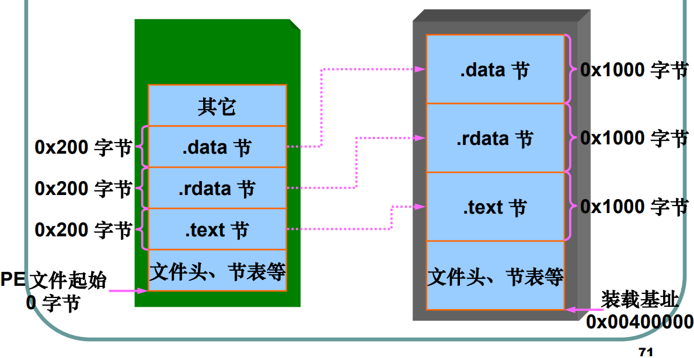
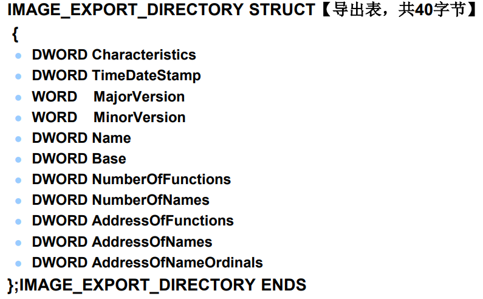
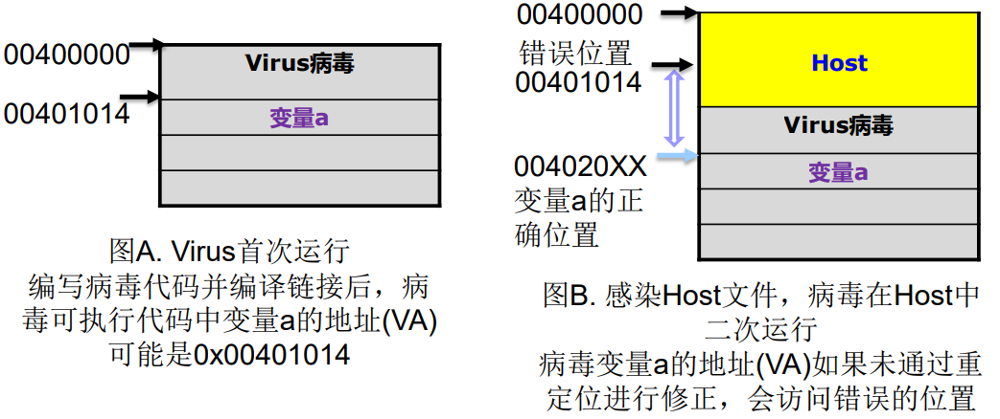
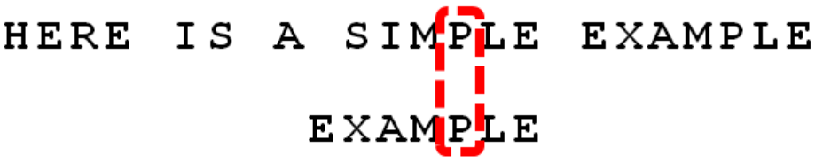
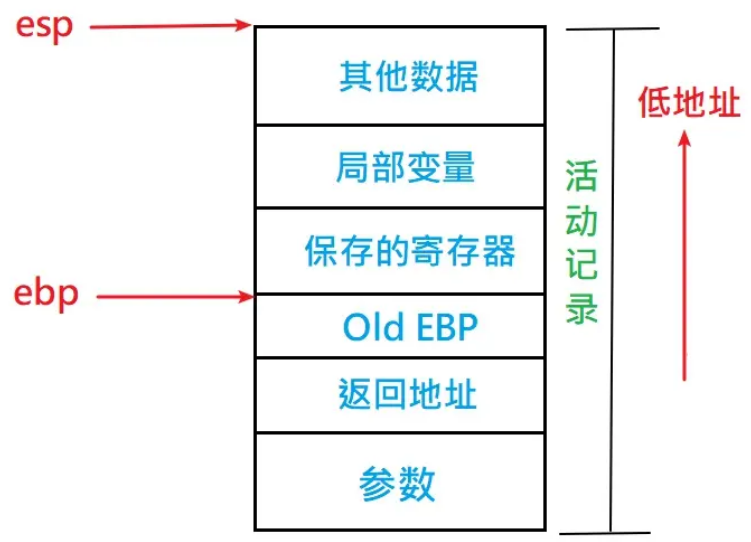
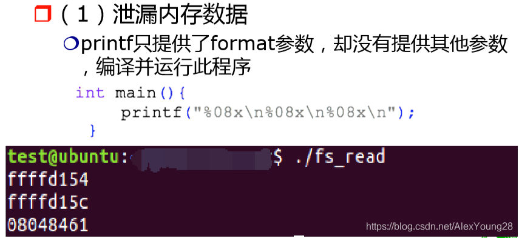
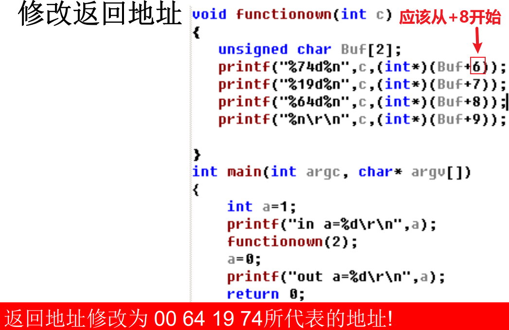

第1章 软件安全概论
2021最新软件安全态势
2021.12，log4j史诗级巨大漏洞——阿里巴巴
2021.7，Kaseya 事件与供应链风险
2021.5，Colonial Pipeline 攻击&国家安全
软件，是组成计算机应用的重要组成部分，当软件由于不安全而遭受攻击，或者运行期间出现错误时，会给用户带来巨大的损失。如犯罪分子利用软件漏洞来获取有价值的信息，用于牟取利益；又如软件因为开发时没有考虑运行时的具体情况，而造成运行的突然崩溃等等。
软件安全是指采取工程的方法使得软件在敌对攻击的情况下仍能继续正常工作，即采用系统化、规范化和可量化的方法来构建安全的软件并实施安全防护。
软件定义万物
网络空间两个子空间
代码子空间 数据子空间
这句话提到了网络空间中的两个子空间：代码子空间和数据子空间。在网络空间的上下文中，这通常指的是计算机系统和网络环境中的两个关键方面。
代码子空间（Code Subspace）：
代码子空间指的是网络空间中与程序、软件、脚本等相关的部分。这包括在计算机上执行的所有程序代码、脚本以及其他执行逻辑的二进制或文本形式的指令。在网络安全的角度，代码子空间关注的是软件的安全性，包括对漏洞、恶意软件和攻击的防范。
数据子空间（Data Subspace）：
数据子空间指的是网络空间中与存储、传输和处理的数据相关的方面。这包括在网络上传输的各种数据、存储在计算机系统中的文件和数据库，以及在网络通信中交换的信息。在网络安全的角度，数据子空间关注的是数据的保密性、完整性和可用性，以及对数据隐私和敏感信息的保护。
综合起来，将网络空间分为代码子空间和数据子空间有助于更好地理解和管理网络安全的挑战。代码子空间关注的是与执行逻辑相关的软件方面，而数据子空间关注的是网络中传输、存储和处理的各种数据。保护这两个子空间对于确保网络系统的安全性至关重要。
元宇宙
元宇宙是人类运用数字技术构建的虚拟世界，可以与现实世界交互。元宇宙是一个聚焦于社交连结的3D虚拟世界之网络¹。元宇宙的特点是虚拟化、数字化、沉浸式¹。元宇宙的基础技术包括扩展现实、数字孪生、区块链、人工智能等¹。元宇宙的发展将会对生活和社会经济发展带来五个方面的变化：社交、娱乐、教育、工作和商业¹。元宇宙的内容体系主要涵盖了两大类型：一类是娱乐、商业、服务等传统网络内容的立体化呈现；另一类是文化和创意产业将在元宇宙中进一步融合，衍生出一系列全新内容，即虚拟世界的创造物¹。元宇宙的经济是实体经济和虚拟经济深度融合的新型形态，具有始终在线、完整运行、高频发生等特征³。元宇宙的法律体系至少包括3部分内容：现实法律的重塑与调整、保障元宇宙经济社会系统正常运行的交易、支付、数据、安全等法律规范、对元宇宙开发和应用进行外部监管的法律法规¹。
源: 与必应的对话， 2024/1/7 (1) 元宇宙（人类运用数字技术构建的虚拟世界）_百度百科. https://baike.baidu.com/item/元宇宙/58292530. (2) 什么是元宇宙|Gartner 中国. https://www.gartner.com/cn/information-technology/articles/what-is-a-metaverse. (3) 元宇宙 - 维基百科，自由的百科全书. https://zh.wikipedia.org/wiki/%E5%85%83%E5%AE%87%E5%AE%99.
软件安全问题
Safety vs Security
Safety 自然的，物理的，相对具体的 如房屋、桥梁、大坝 Security 社会的，人为的，相对抽象的 如数据、软件
任何软件都是不安全的
当前，软件的开发具备两个新的挑战：
软件复杂性加强
可扩展性要求的提高
一方面，软件复杂了，安全问题也表现得很复杂，无法得到全面的考虑，而工程进度又迫使开发者不得不在一定时间内交付产品，代码越多漏洞和缺陷也就越来越多；
另一方面，软件的可扩展性要求也越来越高，系统升级和性能扩展成为很多软件必备的功能；可扩展好的系统，由于其能够用较少的成本实现功能扩充，受到开发者和用户的欢迎；但是由于针对可扩展性必须具备相应的设计，软件结构变复杂了，另外，添加新的功能，也引入了新的风险。
x1/* Return y = Ax */2int *matvec(int **A, int *x, int n)3{4 int *y = malloc(n * sizeof(int));5 int i, j;6
7 for (i = 0; i < n; i++)8 for (j = 0; j < n; j++)9 y[i] += A[i][j] * x[j];10
11 return y;12}空指针解引用：在函数中，没有检查
A和x是否为NULL，如果其中任何一个是NULL，则会导致空指针解引用。整数溢出：在函数中，如果
n非常大，那么n*sizeof(int)可能会导致整数溢出，从而分配不足的内存。未初始化的变量：在函数中，
y数组中的元素没有被初始化，因此它们的值是未定义的。这可能会导致未知的行为。缺少错误处理：在函数中，如果内存分配失败，则
malloc函数将返回NULL，但是函数没有检查这种情况，也没有处理这种情况。
如何解决安全问题（软件测试）
大多数人首先可以想到的方法是软件测试，通过测试来减少软件中的缺陷。
但是，由于软件系统规模越来越大，软件开发的进度要求越来越高，不可能在有限的时间内考虑所有安全方面的问题，即使进行了全方位的测试，也只能对所有的测试案例进行很小范围的覆盖。
如上图所示，模块A使用模块B和模块C，以黑盒测试为例，如果模块A的输入有X种，模块B的输入有Y种，模块C的输入有Z种，理论上讲，应该对X*Y*Z个组合进行全面的测试。
但是，由于工程进度问题，实际上在测试时不可能兼顾全面，往往只是采用了一些具有代表性的测试案例来进行测试，但这些测试案例在设计的时候又不能保证能够具有最全面的代表性。
如果想要将所有问题考虑到，除非进行穷举测试，而这种穷举测试基本上是不可能完成的。
因此，软件测试无法完全保证软件的安全性。
一方面是想要实现全面的测试，找出全部的错误，另一方面又要保证工程的进度，早日解决用户的问题，往往无法两全，只能在其中找到平衡点。
关于测试，另一个问题是，全面的测试，一般情况下是针对所有可能出现的隐患进行测试，但是这需要对软件的隐患具有全方位的预见性。而在有些情况下，很多隐患是在运行期间才显露出来的，软件的开发者很难在开发阶段预见到所有可能出现的隐患，容易让测试陷入盲目。
因此，测试只能减少软件安全问题的发生，但是不能完全解决安全问题。
业界几乎公认一个事实：几乎所有的软件都是带着安全隐患投入运行。
另一个解决安全问题的方法可能就是在测试前就尽量多地解决安全隐患。
在设计、编码阶段，熟练的软件设计人员和软件工程师完全可以尽可能多地将安全问题进行考虑并加以解决。如果在程序设计的时候就能够尽量地考虑安全问题，对软件的安全性也就会有更好的保证，可以大大减小测试的负担。
以网络软件为例，敌方可能通过因特网获得未授权的访问的信息，或者利用软件缺陷来控制用户系统并展开攻击。
随着网络应用的更加丰富，用户对网络服务的依赖也相应的增加(如网上银行、网上股票、网上游戏等)，这也导致了攻击的方法的增加和复杂化，从而使得安全问题更加凸显出来。
而软件工程师无法在开发阶段就预见到全部的攻击，提高了软件开发的难度。所谓“防不胜防”，就是这个道理。
结论：牢记任何软件都是不安全的
软件不安全的表现
软件的不安全性，一般情况下的受害者就是其直接用户。
从用户的角度来看，软件的不安全性主要体现在两个方面：
软件在运行过程中不稳定，出现异常现象、得不到正常结果、或者在特殊情况下由于一些原因造成系统崩溃。
由于异常处理不当，软件运行期间遇到突发问题，处理异常之后无法释放资源，导致这些资源被锁定无法使用
由于线程处理不当，软件运行中莫名其妙得不到正常结果
由于网络连接处理不当，网络软件运行过程中，内存消耗越来越大，系统越来越慢，最后崩溃
由于编程没有进行优化，程序运行消耗资源过大；等等
敌方利用各种方式攻击软件，达到窃取信息、破坏系统等目的。
敌方通过一些手段获取数据库中的明文密码
敌方利用软件的缓冲区溢出，运行敏感的函数
敌方利用软件对数据的校验不全面，给用户发送虚假信息
敌方对用户进行拒绝服务攻击；等等
通常情况下，大多数安全问题在软件运行的过程中发生， 而负责软件系统运行的技术管理人员或者软件的个人用户，并不是专业的软件开发人员。
此时他们往往无法给出直接的应对方案，虽然可以依靠一些简单的方法，如：优化操作系统、优化网络、优化数据库管理系统或者设置额外的操作权限来对付这些剧增的安全问题，但是实际上，这些方法都是治标不治本的方法。
软件的生产单位就需要投入大量的成本，进行软件维护。
软件不安全的原因
软件出现安全问题，并造成损失，一方面是由于攻击者的猖獗，但是从开发者角度，几乎都有一个共同的基本原因：软件在设计、编码、测试和运行阶段，没有发现软件中的各种安全隐患，导致软件的不安全。
软件安全隐患的分类
软件安全隐患一般可以分为两类：错误和缺陷
错误是指软件实现过程出现的问题，大多数的错误可以很容易发现并修复，如缓冲区溢出、死锁、不安全的系统调用、不完整的输入检测机制和不完善的数据保护措施等
缺陷是一个更深层次的问题，它往往产生于设计阶段并在代码中实例化且难于发现，如设计期间的功能划分问题等，这种问题带来的危害更大，但是不属于编程的范畴
软件不安全的原因
首先，站在软件的开发者主观的角度，软件的不安全的原因可以归纳为以下几种：
软件的生产没有严格遵守软件工程流程。由于缺乏经验或者蓄意(如片面追求高进度)的原因，软件的设计者和开发者们没有一个统一的管理，可以在软件开发周期的任意时候，随意删除、新增或者修改软件需求规格说明书、威胁模型、设计文档、源代码、整合框架、测试用例和测试结果、安装配置说明书，使得软件的安全性保证大大减弱。
大多数系统软件或其他商业软件，结构都相当大并且复杂，而且由于考虑到软件的扩展性，它们的设计更加巧妙，复杂性可能会更加提高一些。在运行的过程中，这些系统又可以在大量不同的状态之间转换，这个特性使得开发和使用持续正常运行的软件，是一件很困难的事情，更不用说持续安全运行了。
编码者没有采用科学的编码方法。在软件开发的过程中没有考虑软件可能出现的问题，仅仅将能够想到的问题停留在实验室内进行解决。实际上，有些程序，在实验室阶段根本不会出现安全隐患。
xxxxxxxxxx81int main(int argc, char *argv[]) { 2 unsigned short total = strlen(argv[1]) + strlen(argv[2]) + 1; 3 char *buffer = (char *) malloc(total); 4 strcpy(buffer, argv[1]); 5 strcat(buffer, argv[2]); 6 free(buffer); 7 return 0; 8}这段代码有一个潜在的问题：在使用 free(buffer) 之后，指针 buffer 指向的内存没有被置为 NULL。这可能导致悬挂指针（dangling pointer）的问题，即尽管已经释放了内存，但指针仍然保留对该内存的引用。如果后续代码尝试访问已经释放的内存，可能会导致未定义的行为。
为了解决这个问题，建议在释放内存之后将指针设置为 NULL。例如：
xxxxxxxxxx21free(buffer);2buffer = NULL;这样可以避免悬挂指针问题，确保在后续使用 buffer 之前检查其是否为 NULL。
测试不到位(不过有时是无法到位)。主要是测试用例的设计无法涵盖尽可能典型的安全问题。如下的登录表单： 一般测试用例只是设计输入正确的用户名和密码，看能否正常登录；再输入错误的用户名和密码，看能否得到相应的错误提示。但是攻击者如果输入某些和SQL注入有关的值，就有可能在不需要知道用户名和密码的情况下登录到系统，甚至知道系统中的其他信息或对系统中的内容进行修改。
面对不可避免的安全威胁和风险，项目经理和软件工程师必须从开发流程做起，让安全性贯穿整个软件开发的始终。就大多数相对成功的软件工程案例而言，如果项目经理和软件工程师针对软件缺陷进行系统的训练，可以避免软件的许多安全缺陷。
从软件工程客观角度讲，软件的安全性隐患又来源于以下几个方面：
软件复杂性和工程进度的平衡。如前所述，软件规模复杂了，不仅仅是编码工作量的提高，更重要的是其中需要考虑的问题更加复杂，测试用例规模也呈指数级增长。但是工程进度只是按照软件规模进行适当的延长，因此很多问题来不及解决，软件带着缺陷投入使用。
安全问题的不可预见性。主要是软件工程师对运行的实际情况的不了解，在测试时作出过于简单的假设。有些问题，包括对软件的功能、输出和软件运行环境的行为状态，或者外部实体(用户，软件进程)的预期输入，都无法完全考虑到。而攻击者有足够的时间进行攻击方法的研究。
软件需求的变动。软件规格说明书或设计文档无法一开始就确定下来；在现代软件工程中，很多软件的需求变动，导致其设计本来就是变动的，很多安全问题可能在变动的过程中被忽略。
软件组件之间的交互的不可预见性。如客户可能在运行软件的过程中，自行安装第三方提供的组件，开发者根本无法知道客户的软件将要和谁交互，软件在运行的过程中出现安全问题。
因此，我们可以看到，不管采用了什么样的措施，软件的安全问题都无法完全避免。
即使在需求分析和设计时可以避免(如通过形式化方法)，或者在开发时可以避免(比如通过全面的代码审查和大量的测试)，但缺陷还是会在软件汇编、集成、部署和运行时候被引入。
不管如何忠实的遵守一个基于安全的开发过程，只要软件的规模和复杂性继续增长，一些可被挖掘出来的错误和其他的缺陷是肯定存在的。我们所能做的工作就是尽量让安全问题变少，而不能完全消灭安全问题。
软件安全防护手段
安全设计与开发
保障运行环境
加强软件自身行为认证
恶意软件检测与查杀
黑客攻击防护
系统还原
虚拟隔离
安全设计与开发
强化软件工程思想，将安全问题融入到软件的开发管理流程之中，在软件开发阶段尽量减少软件缺陷和漏洞的数量
保障运行环境
保障软件自身运行环境，加强系统自身的数据完整性校验
软件完整性校验：目前很多安全软件在安装之初将对系统的重要文件进行完整性校验并保存其校验值，如卡巴斯基安全套件。
系统完整性校验：目前有些硬件系统从底层开始保障系统的完整性，可信计算思想是典型代表
加强软件自身行为认证
软件动态可信认证
在确保软件数据完整性的前提下，如何确保软件的行为总是以预期的方式，朝着预期的目标运行。
软件动态可信认证（Dynamic Software Trust Attestation）是一种安全性技术，旨在验证和确保软件系统在运行时的完整性、可信性和合规性。这种方法通常涉及监控、评估和报告软件的状态，以便及时检测潜在的安全威胁或违规行为。
主要要素和特点包括：
运行时监控： 软件动态可信认证在系统运行时实时监控软件的状态和行为。这包括监视程序的执行、系统调用、资源访问等。
完整性验证： 通过对软件组件的完整性进行验证，确保它们没有被未经授权的修改或替换。这可以通过比对存储在系统中的预期软件状态的快照和当前状态来实现。
可信度评估： 评估软件组件的可信度，通常通过使用数字签名、加密技术或其他安全机制，以确保软件的来源和完整性。
报告和响应： 在检测到异常或潜在的威胁时，软件动态可信认证系统会生成报告或触发警报，使系统管理员或安全团队能够及时采取措施。
合规性检查： 针对特定的合规标准或政策，软件动态可信认证还可以进行检查，以确保系统的配置和行为符合规定的安全要求。
可扩展性： 软件动态可信认证系统通常具有可扩展性，可以适应不同类型的软件和不同环境的需求。
这种方法有助于提高对软件系统的实时监控和保护，防范潜在的威胁，并为组织提供更高水平的安全性保障。
恶意软件检测与查杀
反病毒软件主要用来对外来的恶意软件进行检测： 通常采用病毒特征值检测、虚拟机、启发式扫描、主动防御、云查杀等等几种方法来对病毒进行检测。
恶意软件是软件安全的一个主要安全威胁来源，针对系统的外来入侵通常都离不开外来恶意软件的支撑。
黑客攻击防护
防火墙：网络、主机防火墙 入侵检测系统IDS 入侵防护系统IPS：基于网络、基于主机（HIPS） 基于主机的漏洞攻击阻断技术
系统还原
将关键系统文件或指定磁盘分区还原为之前的备份状态，从而将已有系统中的恶意程序全部清除，以保护系统安全
Windows自带的“系统还原”功能 Ghost还原软件 还原卡、影子系统（PowerShadow）等
虚拟隔离
虚拟机（如VmWare）：隔离风险 用户可以通过在不同的虚拟机中分别进行相关活动（如上网浏览、游戏或网银等重要系统登陆），从而可以将危险行为隔离在不同的系统范围之内，保障敏感行为操作的安全性。
沙箱，也叫沙盘或沙盒（如SandBoxIE）：隔离风险 通常用于运行一些疑似危险样本，从而可以隔离安全威胁，也可以用于恶意软件分析。
课后思考
Safety与Security的区别是什么？ 软件安全问题为何日益严重？为什么说软件一定是不安全的? 软件安全防护手段有哪些？它们各自从哪些角度来保障信息安全？
第2章 软件安全基础知识
系统引导与控制权
系统引导与恶意软件有何关系？
恶意软件如何再次获得控制权？
自身被冻结之后
操作系统重启之后
操作系统重装之后
硬盘更换之后
计算机系统引导过程
计算机系统的引导过程是从计算机加电到操作系统启动的一系列步骤。这个过程确保计算机硬件和软件协同工作，使操作系统能够加载到内存并运行。以下是计算机系统引导过程的主要步骤：
加电启动（Power-On）：
当计算机加电时，电源单元为计算机的各个组件提供电源。CPU 中的程序计数器（PC）被设置为预定义的初始地址，通常是系统 BIOS（Basic Input/Output System）的起始地址。
BIOS 运行：
BIOS 是计算机系统中的基本输入/输出系统，负责提供最基本的硬件控制和初始化。计算机加电后，CPU 会从 BIOS 的起始地址开始执行指令。BIOS 的主要任务是初始化系统硬件、执行自检（POST，Power-On Self-Test）以及找到并加载引导加载程序。
引导加载程序（Boot Loader）：
引导加载程序是位于系统硬盘或其他启动设备上的一小段特殊代码。BIOS 会尝试从预定义的启动设备（通常是硬盘）的引导扇区加载引导加载程序。引导加载程序的任务是加载操作系统的内核镜像到内存中。
加载操作系统内核：
引导加载程序负责读取操作系统内核的镜像文件（通常是位于硬盘上的某个特定分区），将其加载到内存的特定位置。一旦内核加载到内存中，引导加载程序会传递控制权给操作系统内核。
内核初始化：
操作系统内核一旦掌握控制权，开始进行初始化工作。这包括初始化内核数据结构、设备驱动程序、建立内存管理和建立进程控制块等。内核在此阶段准备好运行用户空间程序。
用户空间初始化：
操作系统内核初始化完成后，开始运行用户空间初始化进程。这可能包括初始化系统服务、启动登录界面（如图形界面或命令行界面）等。
启动用户应用程序：
一旦初始化完成，操作系统等待用户或系统启动应用程序。用户可以通过交互式方式或者自动启动的方式运行各种应用程序。
总体而言，计算机系统引导过程确保了系统硬件和软件的正确初始化，使得操作系统能够正常运行。这个过程是计算机启动的基础，是系统从一个关机状态到准备接受用户指令的转变。
主板BIOS系统进行硬件自检POST
“基本输入输出系统”，存储在主板BIOS的Flash（或ROM）芯片。 为计算机提供最底层的、最直接的硬件设置和控制。
BIOS的自检与初始化工作： 任务：检测系统中的一些关键设备（如内存和显卡等）是否存在和能否正常工作，进行初始化，并将控制权交给后续引导程序。
显卡及其他相关设备初始化
显示系统BIOS启动画面，其中包括有系统BIOS的类型、序列号和版本号等内容
检测CPU的类型、工作频率和内存容量，并将检测结果显示在屏幕上
检测系统中安装的一些标准硬件设备及即插即用设备，这些设备包括：硬盘、CD－ROM、软驱、串行接口和并行接口
根据用户指定的启动顺序从软盘、硬盘或光驱启动（如果从硬盘启动，则将控制权交给硬盘主引导程序）
硬盘主引导程序MBR
所在位置：MBR，Master Boot Record，硬盘第一个扇区 主要功能：
通过主分区表中定位活动分区
装载活动分区的引导程序，并移交控制权
活动引导分区DBR
所在位置：
DBR（DOS Boot Record），或称OBR（OS Boot Record），或称分区引导记录（PBR，Partition Boot Record）
分区的第一个扇区
功能：
加载操作系统引导程序，例如：
Windows XP系统的NTLDR
Windows10系统的bootmgr
操作系统引导以NTLDR为例
Windows XP系统的NTLDR
将处理器从16位内存模式拓展为32位（64位）内存模式 启动小型文件系统驱动，以识别FAT32和NTFS文件系统 读取boot.ini，进行多操作系统选择（或hiberfil.sys恢复休眠） 检测和配置硬件（NT或XP系统，则运行NTDETECT.COM，其将硬件信息提交给NTLDR，写入“HKEY_LOCAL_MACHINE”中的Hardware中）
操作系统内核启动
NTLDR加载内核程序NTOSKRNL.EXE以及硬件抽象层HAL.dll等
驱动程序及服务
读取并加载HKEY_LOCAL_ MACHINE\SYSTEM\CurrentControlSet下指定的驱动程序
NTLDR将把控制权传递给NTOSKRNL.EXE，至此引导过程将结束。
系统自启动程序
启动需要自动启动的Windows服务 启动本地安全认证Lsass.exe 显示登录界面等
Windows登陆之后：
系统启动当前用户环境下的自启动项程序：
注册表特定键值
特定目录（如startup）等
用户触发和执行各类应用程序：如IE、QQ、Office等
Windows系统引导过程
（win7和win10部分步骤不同）
加电，主板BIOS自检程序开始运行
硬盘主引导记录被装入内存，主引导程序开始执行
活动分区的引导扇区被装入内存并执行，操作系统引导程序（NTLDR）从引导扇区被装入并初始化
NTLDR将处理器的从16位实模式改为32位平滑内存模式
NTLDR加载小文件系统驱动程序
NTLDR读boot.ini文件，用户选择操作系统
NTLDR装载所选操作系统
Ntdetect.com 搜索计算机硬件并将列表传送给NTLDR，以便将这些信息写进
\HKEY_LOCAL_MACHINE\HA RDWARE中NTLDR装载Ntoskrnl.exe，Hal.dll和系统信息集合
NTLDR搜索系统信息集合，并装载设备驱动
NTLDR把控制权交给 Ntoskrnl.exe，这时，启动程序结束
Windows开始装载
执行驱动程序及服务
系统执行自启动程序
用户触发执行程序
系统引导与恶意软件的关联
恶意软件在植入系统之后，可以在系统引导阶段获得系统控制权
在计算机系统引导阶段获得控制权：Bootkit：BIOS木马、MBR木马等，可用于长期驻留在系统；早期的DOS引导区病毒等。
在操作系统启动阶段获得控制权：最常见的恶意软件启动方法，多见于独立的恶意软件程序
在应用程序执行阶段获得控制权：最常见的文件感染型病毒启动方法
80x86处理器的工作模式
80X86处理器支持3种工作模式：
实模式
保护模式
虚拟8086模式
实模式和虚拟8086模式是为了向下兼容8086处理器的程序而设计。
实模式
80x86处理器在复位或加电时是以实模式启动的
寻址方式：20位寻址（段＋偏移），1M空间
不能对内存进行分页管理
不支持优先级，所有的指令相当于工作在特权级（优先级0）
切换到保护模式：通过在实模式下初始化控制寄存器，GDTR，LDTR等管理寄存器以及页表，然后再置位CR0寄存器的保护模式使能位（PE：Protected-Mode Enable，第0位）
保护模式
是80x86处理器的常态工作模式
32位处理器支持32位寻址，物理寻址空间达4G
支持内存分页机制，提供了对虚拟内存的良好支持
支持优先级机制，根据任务特性进行了运行环境隔离
切换到实模式：通过修改控制寄存器CR0的PE位（Protected-Mode Enable，第0位），切换到实模式
虚拟8086模式
为了在保护模式下兼容8086程序而设置的
虚拟8086模式是以任务的形式在保护模式上执行的，在80x86上可以同时支持多个真正的80x86任务和虚拟8086模式构成的任务
支持任务切换和内存分页
操作系统用分页机制将不同的虚拟8086任务的地址空间映射到不同的物理地址上面去，使得每个虚拟8086任务看来都认为自己在使用0～1MB的地址空间
Windows内存结构与管理
DOS实模式下的内存布局
Windows下的虚拟地址空间布局
32-bit
32-bit x86 虚拟地址空间最大为4GB

64-bit
64-bit Address Spaces
"Itanium" 是指英特尔和惠普（Hewlett-Packard）公司联合开发的一系列64位微处理器架构。Itanium 处理器是为高性能计算和大型服务器系统设计的，它采用了64位的指令集架构（IA-64），是Intel IA-64架构的一个实现。
在 Windows 操作系统的虚拟地址空间布局中，可能会涉及到 Itanium 架构的系统。Windows 版本中，特别是 Windows Server 版本，可能支持 Itanium 架构的处理器，并且在这些系统中会有与 Itanium 架构相关的虚拟地址空间布局。
在 Itanium 架构中，与传统的32位 x86 架构相比，寄存器宽度和地址总线宽度都是64位，允许更大的内存寻址和更高的性能。虽然 Itanium 架构在某些特定领域取得了一些成功，但由于其独特的设计和相对较高的成本，它并没有像 x86-64 架构那样在广泛的桌面和小型服务器市场取得成功。在随后的发展中，x86-64（也称为AMD64）架构逐渐成为主流，取代了 Itanium 架构。
因此，在讨论 Windows 下的虚拟地址空间布局时，提到 Itanium 通常是指与 Itanium 架构相关的特定系统。
x86-64 是一个64位的计算机架构。它是x86指令集架构的64位扩展，也称为AMD64或Intel 64。x86-64架构在32位x86架构的基础上引入了64位寻址和64位数据处理的能力，同时仍然能够向后兼容32位x86软件。
要注意的是，"x86" 通常指的是32位的x86指令集架构，而"x86-64" 指的是这个指令集架构的64位扩展。因此，x86-64 是一个64位的架构，支持64位寄存器、64位地址空间以及64位的数据处理。这使得系统能够处理更大的内存，提供更多的寄存器，并执行64位整数和浮点数运算。
总结起来，x86-64 是一种64位的计算机架构，而 x86 指的是32位的x86指令集架构。
Windows32位-内存
程序在内存中的映像整体情况(Windows 32位)
Linux-内存
程序在内存中的映像 (Linux)
CPU特权级与内存访问
与进程虚拟内存中用户模式区和内核模式区相对应，Windows为了确保系统的稳定性，将处理器存取模式划分为用户模式（Ring 3）和内核模式（Ring 0）
用户应用程序一般运行在用户模式，其访问空间局限于用户区 操作系统内核代码（如系统服务和设备驱动程序等）运行在内核模式，可以访问所有的内存空间（包括用户模式分区）和硬件，可使用所有处理器指令
用户区内存
用户区是每个进程真正独立的可用内存空间，进程中的绝大部分数据都保存在这一区域。主要包括：应用程序代码、全局变量、所有线程的线程栈以及加载的DLL代码等
每个进程的用户区的虚拟内存空间相互独立，一般不可以直接跨进程访问，这使得一个程序直接破坏另一个程序的可能性非常小。
Notepad进程内存的用户区
内核区的内存
内存内核区中的所有数据是所用进程共享的，是操作系统代码的驻地，其中包括：操作系统内核代码，以及与线程调度、内存管理、文件系统支持、网络支持、设备驱动程序相关的代码
该分区中所有代码和数据都被操作系统保护，用户模式代码无法直接访问和操作：如果应用程序直接对该内存空间内的地址访问，将会发生地址访问违规
页目录（Page Directory）：通过CR3寄存器获得页目录基地址 PDE：Page Directory Entry，页目录项 PTE： Page Table Entry，页表项，指向虚拟页面所映射的物理地址 PFN：Page Frame Number，为页帧号
虚拟地址与物理地址的转换
Windows虚拟地址空间与物理地址空间
X86 Windows默认使用二级页表来把虚拟地址转译为物理地址 一个32位地址被划分为三个单独部分：页目录索引、页表索引和字节索引
在x86系统上默认页面大小为 4K，故页内字节索引宽度为 12 位
思考题
windows编程中malloc实际上能够支持多大的内存呢？
malloc函数在Windows编程中可以分配的内存大小取决于当前系统的物理内存和虚拟内存的大小。在32位Windows系统中，malloc函数可以分配的最大内存大小为2GB，而在64位Windows系统中，malloc函数可以分配的最大内存大小为8TB¹²³。
希望这个回答能够帮到您！
源: 与必应的对话， 2024/1/7 (1) malloc | Microsoft Learn. https://learn.microsoft.com/zh-cn/cpp/c-runtime-library/reference/malloc?view=msvc-170. (2) 【总结】malloc最多能分配多大的内存空间？ - CSDN博客. https://blog.csdn.net/yaotengjian/article/details/79774002. (3) malloc与系统内存分配_malloc申请的是物理内存还是虚拟 .... https://blog.csdn.net/m0_46161993/article/details/104500821.
地址空间限制是有的，但是malloc通常情况下申请到的空间达不到地址空间上限。内存碎片会影响到你“一次”申请到的最大内存空间。比如你有10M空间，申请两次2M，一次1M，一次5M没有问题。但如果你申请两次2M，一次4M，一次1M，释放4M，那么剩下的空间虽然够5M，但是由于已经不是连续的内存区域，malloc也会失败。系统也会限制你的程序使用malloc申请到的最大内存。Windows下32位程序如果单纯看地址空间能有4G左右的内存可用，不过实际上系统会把其中2G的地址留给内核使用，所以你的程序最大能用2G的内存。除去其他开销，你能用malloc申请到的内存只有1.9G左右。
链接： https://www.zhihu.com/question/20836462/answer/16341442
不断增加物理内存，能够增加malloc的内存大小吗？
增加物理内存可以增加malloc函数可以分配的内存大小。在Windows系统中，malloc函数可以分配的最大内存大小取决于当前系统的物理内存和虚拟内存的大小。在32位Windows系统中，malloc函数可以分配的最大内存大小为2GB，而在64位Windows系统中，malloc函数可以分配的最大内存大小为8TB¹²³。
源: 与必应的对话， 2024/1/7 (1) malloc - Wikipedia. https://ja.wikipedia.org/wiki/Malloc. (2) 内存分配不再神秘：深入剖析malloc函数实现原理与机制 - 知乎. https://zhuanlan.zhihu.com/p/643112072. (3) malloc 的实现涉及物理内存，虚拟内存？ - 知乎. https://www.zhihu.com/question/20220583. (4) malloc | Microsoft Learn. https://learn.microsoft.com/zh-cn/cpp/c-runtime-library/reference/malloc?view=msvc-170.
为什么增加物理内存，能够使得系统跑得更流畅呢？
内存是计算机中的一种重要硬件，它用于存储正在运行的程序和数据。当计算机运行多个程序时，内存会被分配给这些程序。如果内存不足，计算机就会将一些数据换回到硬盘上，再次需要使用这些数据的时候，首先要把这些数据从硬盘换回内存，这会导致一些时间开销，宏观上看这会导致计算机变慢。增加物理内存可以缓解这个问题，更多的物理内存可以减少数据被换回硬盘的次数，也就是使计算机能够同时运行更多的程序，从而宏观上使计算机运行得更流畅。
磁盘的物理与逻辑结构
硬盘物理结构
硬盘是：
控制代码的静态存储仓库
系统引导代码
各类程序与数据等
恶意软件进行控制权争夺的中心
硬盘外部结构：接口（电源接口+数据接口）、硬盘控制电路、固定面板 硬盘内部结构：盘片、磁头、盘片主轴、控制电机、磁头控制器、数据转换器
接口：
并口（PATA）
速度慢：<133MB/s
电源线：4针
数据线：80/40/39针
串口（SATA）
速度快：150/300/600MB/s
电源线：15针
数据线：7针
在硬盘中，为什么并口传输速度比串口慢？ 在计算机系统中，串口和并口是两种不同类型的数据传输接口，它们使用不同的传输机制和协议，这导致它们在传输速度上有一些区别。以下是一些可能的原因：
并行 vs. 串行传输：
并口（Parallel Port）： 并口是一种并行接口，它可以同时传输多个位的数据。每个数据线上都可以传输一个二进制位。尽管并口能够在每个时钟周期传输多个位，但是由于信号线之间可能存在干扰，其传输速度可能受到限制。
串口（Serial Port）： 串口是一种串行接口，它按照一个位一个位的顺序传输数据。虽然串口通常在单一时刻只传输一个位，但是由于其较简单的电气连接和传输协议，可以更容易实现高速传输，特别是在远距离传输时。
电缆和连接标准：
并口通常使用较宽的并行电缆，而串口通常使用较窄的串行电缆。并口的电缆可能更容易受到干扰，特别是在长距离传输时，这可能会限制其传输速度。
历史原因：
并口和串口的设计是在计算机发展的早期时期确定的。串口通常被设计为用于相对较长的距离传输，而并口则通常用于较短的距离传输。这种设计选择在计算机发展的早期可能是为了满足不同的需求，但也可能导致了它们在传输速度上的差异。 总体而言，并口和串口各自有其适用的场景，而其中的差异主要是由于它们的设计目标和电气特性引起的。在现代计算机系统中，其他更快速、更先进的接口（如USB、Thunderbolt等）已经取代了并口和串口，提供了更高的数据传输速度和更强大的功能。
因为SATA的单数据通道并没有象PATA那样限制速度频率。SATA传输线的传输速度比PATA要快了近30倍。PATA必须在数据线中一次传输16个信号，如果信号没有及时到达或是发生延迟，错误数据就会产生。因此比特流传输的速度必须减缓以纠正错误。而SATA一次只传输一个比特的数据，此时比特流的传递速度要快得多。这就好比是运球游戏，每次运一个球要比一次运16个球容易的多。
硬盘逻辑结构
寻址方式
CHS参数寻址
CHS（Cylinder-Head-Sector）是一种磁盘驱动器的参数寻址方式，用于描述磁盘上的数据位置。在CHS寻址方式中，磁盘被划分为圆柱（Cylinder）、磁头（Head）和扇区（Sector），通过这三个参数可以唯一地标识磁盘上的每个数据块。
圆柱数（磁道）（Cylinder）：
圆柱是垂直于磁盘的轴线上的一个圆环，从磁盘的中心向外延伸。圆柱数表示磁头在整个磁盘上的垂直位置，每个圆柱包含多个磁道。CHS寻址中，圆柱数（磁道）通常用一个整数来表示。Cylinder号从0开始递增，表示磁盘上的柱面位置。
磁头数（Head）：
磁头是指在磁盘上读写数据的磁头，它可以在磁盘的表面上移动。每个盘片有两个面，每个面有一个读写磁头。磁头数表示磁盘上的磁头数量，通常是一个整数。Head号从0开始递增，表示某个柱面上的磁头位置。
扇区数（Sector）：
扇区是磁盘上的最小数据单元，表示磁盘上每个磁道的一小部分。扇区数表示每个磁道上的扇区数量，通常是一个整数。Sector号从1开始递增，表示某个磁头上的扇区位置。
通过这三个参数，可以唯一地标识磁盘上的每个数据块。CHS寻址方式的结构通常是 (Cylinder, Head, Sector)。
例如，CHS地址 (0, 0, 1) 表示磁盘的第一个圆柱、第一个磁头、第一个扇区。
需要注意的是，随着磁盘技术的发展，CHS寻址方式已经逐渐被LBA（Logical Block Addressing）寻址方式取代。LBA直接使用一个逻辑块号来表示数据块的位置，更简单且更灵活，可以处理更大容量的磁盘。在现代计算机系统中，大多数操作系统和硬盘控制器使用LBA寻址方式。
CHS(Cylinder/Head/Sector)参数取值范围：
磁头数(Heads)： 0-255（8位）
柱面数(Cylinders)：0-1023（10位）
扇区数(Sectors)：1-63（6位）；通常每扇区512个字节
CHS参数可以寻址的磁盘最大容量？ 256 * 1024 * 63 * 512 / 1048576 = 8064 MB （1M = 1048576 Bytes）
老式硬盘：每个磁道的扇区数相等 当前硬盘：采用“等密度结构”，寻址方式采用线性逻辑块寻址（LBA，Logical Block Address），即以扇区为单位进行线性寻址。
地址翻译器：负责将CHS参数翻译成线性参数
LBA（Logical Block Addressing）是一种用于磁盘驱动器中的数据块寻址方式，相对于CHS（Cylinder-Head-Sector）寻址方式而言更为现代和普遍。在LBA寻址中，磁盘上的每个数据块都被分配一个唯一的逻辑块号，而不再依赖于磁盘的几何结构。这简化了寻址过程，同时允许更大容量的磁盘。 以下是LBA寻址的主要特征和优点：
逻辑块号（Logical Block Number，LBN）：
在LBA寻址中，每个磁盘上的数据块都被分配一个逻辑块号（LBN）。这个号码是一个递增的整数，用于唯一标识磁盘上的每个数据块。通过使用逻辑块号，不再需要关心磁头、磁道和扇区的物理结构。
容量和灵活性：
LBA寻址方式允许操作系统和硬盘控制器处理更大容量的磁盘，因为它不再受到CHS寻址方式中圆柱、磁头和扇区数量的限制。这使得现代大容量磁盘的管理更为简单。
简化寻址计算：
LBA寻址消除了CHS寻址中复杂的几何计算，简化了磁盘访问的寻址过程。通过直接使用逻辑块号，操作系统可以更容易地管理数据块的布局。
兼容性：
由于LBA寻址更为灵活和简单，大多数现代计算机系统和硬盘控制器都采用LBA寻址方式。这增加了不同硬盘之间的兼容性，因为它们都可以使用相同的寻址方式。 总的来说，LBA寻址方式为磁盘驱动器提供了更简单、更灵活的寻址机制，使得磁盘管理更为方便。在现代计算机系统中，几乎所有的硬盘驱动器都使用LBA寻址方式。
总体结构
硬盘的分区格式指的是在硬盘上划分存储空间的方式以及用于在这些分区上组织文件系统的规范。以下是一些常见的硬盘分区格式：
MBR（Master Boot Record）：
MBR是一种传统的分区格式，它存储在硬盘的第一个扇区（通常是512字节），包含引导代码和分区表。MBR分区支持的最大分区数为4，每个分区可以是主分区或扩展分区。每个扩展分区可以包含多个逻辑分区。这种格式逐渐被更现代的GPT取代。
GPT（GUID Partition Table）：
GPT是一种更为现代的分区格式，它使用全局唯一标识符（GUID）来标识分区。与MBR相比，GPT支持更多的分区数，支持超过2TB的硬盘。它还提供更可靠的数据完整性和更灵活的分区布局。GPT通常用于UEFI系统。
EXT（Extended File System）：
EXT是一系列Linux操作系统使用的文件系统，如EXT2、EXT3和EXT4。EXT2是最早的版本，EXT3引入了日志文件系统的概念，而EXT4是EXT3的后继版本，提供更高的性能和一些新的功能。这些文件系统用于在分区上组织文件和目录。
NTFS（New Technology File System）：
NTFS是Windows操作系统使用的主要文件系统，支持大容量硬盘和大文件，同时提供文件权限、压缩和加密等功能。NTFS分区通常用于Windows系统上。
FAT（File Allocation Table）：
FAT是一种简单的文件系统，包括FAT12、FAT16和FAT32等版本。它是早期DOS和Windows系统的主要文件系统，支持广泛的硬件和软件。FAT32在支持较大存储容量的同时仍保持着一定的兼容性。
HFS+（Mac OS Extended）：
HFS+是苹果公司用于Mac OS X的文件系统，提供了对大容量硬盘、大文件和元数据的支持。然而，最新的Mac系统（如macOS Big Sur及更高版本）已经转向使用APFS（Apple File System）。 这些分区格式通常与特定的操作系统或特定的用途相关联。在一个硬盘上，可以有多个分区，每个分区可以使用不同的分区格式，并包含不同的文件系统。选择分区格式和文件系统取决于操作系统支持和用户需求。
MBR分区
位于整个硬盘的0柱面0磁头1扇区(硬盘的第一个扇区)
MBR引导程序：占了其中的前446个字节(偏移0H~偏移1BDH)
DPT（硬盘分区表）：Disk Partition Table，随后的64个字节
结束标志：最后的两个字节“55AA”(偏移1FEH~偏移1FFH)
DPT（硬盘分区表）：4个分区项，64个字节，描述各分区基本信息：
分区开始位置、总扇区数
分区类型
MBR分区——扩展分区
MBR（Master Boot Record）分区表是一种传统的硬盘分区方式，它将硬盘的分区信息存储在硬盘的第一个扇区（通常是512字节）中。在MBR分区表中，有主分区和扩展分区的概念。
主分区（Primary Partition）：
MBR分区表最多支持4个主分区，每个主分区都是一个独立的分区，可以包含一个文件系统。这些主分区是硬盘上的物理分区，可以被操作系统直接识别和使用。主分区中可以安装引导记录，使得操作系统能够启动。
扩展分区（Extended Partition）：
由于MBR分区表最多支持4个主分区，为了克服这一限制，引入了扩展分区的概念。扩展分区实际上是一个特殊的主分区，其中可以包含多个逻辑分区。逻辑分区是扩展分区中的子分区，它们不会在硬盘上占用独立的空间，而是共享扩展分区的空间。
逻辑分区（Logical Partition）：
逻辑分区是位于扩展分区内的子分区。由于一个硬盘只能有4个主分区，但可以有多个逻辑分区，扩展分区的引入允许用户在硬盘上创建更多的分区。逻辑分区可以包含文件系统，用于存储数据。 要注意的是，扩展分区本身并不包含文件系统，而是充当一个容器，可以包含多个逻辑分区。逻辑分区在扩展分区内使用逻辑块号进行寻址，而不是CHS（Cylinder-Head-Sector）地址。 然而，MBR分区表有一些限制，其中最明显的是4个主分区的限制。随着硬盘容量的增加和对更多分区的需求，新一代分区方案如GPT（GUID Partition Table）逐渐取代了MBR。GPT不仅支持更大的硬盘容量，还不受主分区数量的限制。
FAT32文件系统
引导扇区内包含：
分区大小
簇的大小
FAT表的个数和大小
分区引导程序
FAT文件分配表：
记录数据存储区每一个簇的使用情况（是否被使用，是否是坏簇）
形成每个文件的簇链表
数据存储区：
以簇为单位，每簇包含多个扇区，以簇号进行标示
功能——记录两类数据：
目录项：目录和文件的属性信息，比如文件名，大小，文件存储首簇号，时间等
文件数据
簇
每扇区大小为512字节
文件系统将磁盘空间以一定数目的扇区为单位进行划分，这样的单位称之为簇
簇的大小一般是512B、1KB、2KB、4KB、8KB、16KB、32KB、64KB等
簇是进行文件空间分配的最小单位
FAT表
FAT表(File Allocation Table 文件分配表)是Microsoft在FAT文件系统中用于磁盘数据(文件)索引和定位引进的一种单向链式结构
FAT区用每一个FAT项来记录每一个簇的占用情况：
FAT表中表项的个数 = 簇的个数
如果为0，则表示对应簇为空闲，可存储数据
每个表项有多大？
FAT32：32位，4字节
可表达的最大簇号空间为4G
FAT16的最大簇号空间为64K
簇链
一个文件所占用簇的序号形成的单向链表
实现方法：在文件占用簇的对应簇号的FAT项，填写下一个簇的簇号，如果为最后一簇，则输入结束标识“FFFFFF0F”
文件的存储
被删除文件的恢复机理
被删除的文件：
目录项：
文件名首字节被修改为E5
首簇高位被清零
FAT表簇链：被全部清空
文件内容：无变化
是否可恢复？
目录项？
文件名首位是否可还原
如何确定高位
FAT表簇链如何修复？
连续存储（默认）
总簇数（文件大小）
PE文件格式
PE文件格式
可移植的执行体 PE（Portable Executable）是 Win32 平台下可执行文件格式，常见的 exe、dll、ocx、sys、com 都是 PE文件，其可移植可执行体现在跨 Win32 平台
PE 文件格式规定了代码、菜单、图标、位图、字符串等信息在可执行文件中如何组织
PE 文件格式将可执行文件分成若干节（section），一个 WinNT 应用程序典型地拥有 9 个预定义节：.text、.bss、.rdata、.data、.pdata、 .rsrc、.edata, .idata 和 .debug
.text 由编译器产生，存放二进制的机器代码 .data 初始化的数据块，如全局变量、静态变量等 .idata 可执行文件所使用的动态链接库等外来函数与文件信息 .rsrc 存放程序的资源，如图标、菜单等 .rdata 表示只读数据区
在 Windows NT 操作系统中，一个典型的 WinNT 应用程序的可执行文件通常包含多个预定义的节（sections），这些节存储了不同类型的数据。下面是其中一些常见的预定义节及其用途：
.text：
存储应用程序的二进制可执行代码。包含程序的实际逻辑，这是应用程序的主要执行代码部分。
.bss：
存储未初始化的全局和静态变量。这个节主要用于存储应用程序中声明但未显式初始化的全局变量。
.rdata：
存储只读数据，如常量字符串、只读常量等。这些数据在运行时是只读的。
.data：
存储已初始化的全局和静态变量。在这个节中，存放的是在程序运行时需要初始化的全局和静态变量。
.pdata：
包含程序的异常处理信息。这个节用于存储与异常处理相关的数据，包括函数的异常处理相关的信息。
.rsrc：
包含程序的资源，如图标、位图、字符串等。这个节用于存储应用程序需要的各种资源。
.edata：
存储导入的外部符号信息。在这个节中，存放的是程序所引用的外部函数和变量的信息。
.idata：
存储导入表，包含程序运行时需要从其他 DLL 文件中导入的函数和变量的信息。
.debug：
存储调试信息。这个节用于存储调试器在调试应用程序时使用的信息，如符号表、源代码映射等。 这些预定义的节有助于组织和存储应用程序的不同类型的数据，使得操作系统和其他工具能够正确地加载和执行应用程序。不同的节在可执行文件中占据不同的位置，这有助于操作系统正确地将程序的各个部分加载到内存中。
在 VC 中可用 # pragma data_seg( ) 将代码中的任意部分编译到PE的任意节，且节名可以自定义
整个格式的组成：一个 MS-DOS 的 MZ 头部，之后是一个实模式的残余程序、PE文件标志、PE文件头部、PE可选头部、所有的节头部，最后是所有的节实体
可选头部的末尾是数据目录入口的数组，这些相对虚拟地址指向节实体之中的数据目录。每个数据目录都表示了一个特定的段实体数据是如何组织的
PE 文件格式有 9 个预定义节，这对所有的WinNT应用程序通用的，但是每个应用程序可以为它自己的代码以及数据定义它自己独特的节
.debug 预定义节也可以分离为一个单独的调试文件。如果这样的话，就会有一个特定的调试头部来用于解析这个调试文件，PE 文件中也会有一个标志来表示调试数据被分离了出去
Linux ELF可执行文件
Linux ELF（Executable and Linkable Format）可执行文件和Windows PE（Portable Executable）文件是两种不同的可执行文件格式，它们用于分别运行在Linux和Windows操作系统上。
Linux ELF可执行文件：
ELF是一种在类Unix系统上使用的二进制文件格式，用于表示可执行文件、共享库和目标文件。Linux系统中的可执行文件通常采用ELF格式，它包含了程序的代码、数据、头部信息以及与链接相关的信息。ELF文件具有一种较为灵活的结构，允许支持不同的体系结构和操作系统。
Windows PE可执行文件：
PE是一种由Microsoft Windows操作系统使用的可执行文件格式，它用于存储Windows程序的二进制映像。PE文件包括了程序的代码、数据、资源以及与链接相关的信息。PE文件具有固定的头部结构和可选的段结构，与Windows操作系统紧密耦合。 虽然这两种文件格式都用于存储可执行代码，但它们之间存在显著的差异，主要是由于操作系统的不同和目标体系结构的差异引起的。例如：
操作系统兼容性： ELF文件主要用于Linux及类Unix系统，而PE文件则主要用于Windows系统。这两者之间的文件格式并不互相兼容。
头部和段结构： ELF和PE文件都有自己特定的头部结构和段结构，用于存储有关可执行文件的元信息。这些结构在两者之间有很大的不同。
调试和符号信息： ELF和PE文件在存储调试信息和符号信息的方式上也有区别，这与它们在各自操作系统上的调试工具和符号表格式有关。 总体而言，Linux ELF和Windows PE是两个不同的可执行文件格式，它们适用于各自的操作系统，并在结构和功能上有很大的差异。
PE 文件与虚拟内存的映射
文件偏移地址（File Offset,FO or Roffset or RA）：PE 文件在硬盘上存放时相对于文件头的偏移
装载基址（Image Base,IB）：PE 装入内存时的基地址，默认情况下，exe 的装载基址为 0x00400000，dll 的装载基址为 0x10000000
虚拟内存地址（Virtual Address, VA）：PE 文件中的指令被装入内存后的地址
相对虚拟地址（Relative Virtual Address, RVA）：指令的虚拟内存地址相对于装载基址的偏移量
VA = Image Base + RVA
VC可以定制基址
PE 文件与虚拟内存的映射图 
PE 文件中的数据按磁盘数据标准存放，以 0x200 字节为基本单位进行组织，PE 节的大小是 0x200 的整数倍，不足用 0x00 填充
PE 文件装入内存后，将按内存数据标准存放，以 0x1000 字节为基本单位进行组织，在内存中 PE 节的大小是 0x1000 的整数倍，不足用 0x00 填充
节偏移：由于磁盘和内存存储分配单位的差异引起的节基址之差
文件偏移地址FOA = VA − Image Base − VSO(虚拟内存节偏移) + FSO(文件节偏移) = RVA − VSO(虚拟内存节偏移 ) + FSO(文件节偏移)
CODE 虚拟内存节偏移 VSO = 0x1000，文件节偏移 FSO = 0x400 虚拟内存地址： 0x0049FBC4 处有一条指令 mov edi，eax (8B F8) 文件偏移地址 = ?(在磁盘文件中的地址是多少) (设基址BA=0x400000)
文件偏移地址FOA = VA − Image Base − VSO(虚拟内存节偏移) + FSO(文件节偏移) = 0x0049FBC4 - 0x400000 - 0x1000 + 0x400 = 0x9EFC4
破解实践
相关工具简介
PE 文件修改工具：Lord PE：
PE 文件与虚拟内存的地址转换
查看 PE 文件的节信息、装载基址、镜像大小
修改 PE 文件头信息，以重建 PE，主要用于脱壳
二进制编辑器：
UltraEdit
Hex Workshop：专注于十六进制编辑，附带转换器与计算器
WinHex：能够透过文件系统直接对磁盘的扇区、簇进行操作，因此用于数据恢复非常方便（也很危险）
H-View：运行于黑底白字的命令行方式
静态反汇编工具：IDA Pro 当前最强大的静态反汇编软件（也能进行简单的动态调试） 能将庞大的汇编指令序列分成不同层次的单元、模块、函数，并给予标注和注解，以便交叉引用 能自动识别和标注 VC 、BC 、TC 、Delphi 等常用编译器的标准库函数 能以图形化的方式显示函数内部的执行流程 可以将标注好的函数名、注释等信息导出为 map 文件， 供 OllyDbg 动态调试时使用
动态调试工具
WinDbg
一款介于 OllyDbg 和 SoftICE 之间的较为“温和”的调试器 可以调试内核，但不如 SoftICE 那样“毫不讲理”地中断操作系统，也可以仅在 Ring 3 级进行调试 可以设置异常复杂的断点条件逻辑 主要功能由调试命令完成，且与 SoftICE 的调试命令类似
OllyDbg
工作于 Ring 3 级， 界面友好，使用方便，是目前主流的动态调试器
练习
为什么文件删除后还可以恢复？
在Windows系统中，文件删除后还能够被恢复的原因主要与文件删除的工作原理有关。当你在Windows中删除一个文件时，实际上并不是将文件内容立即从硬盘上移除，而是将文件的相关元数据标记为已删除，同时释放文件占用的簇（硬盘上的存储单位）。这个过程只是逻辑上的删除，实际上文件的内容依然可能留存在磁盘的未分配空间中。 以下是导致文件删除后能够被恢复的一些原因：
逻辑删除： 删除文件时，操作系统只是更新文件系统的元数据（如目录和文件分配表等），而并没有立即从磁盘上擦除文件内容。这使得恢复软件有机会在磁盘上找到文件内容。
未覆盖的数据： 如果删除文件后，新的数据写入磁盘并覆盖了原始文件所占据的簇，那么文件内容就会被覆盖，难以恢复。但如果新的数据没有覆盖原来的数据，那么文件内容仍然可能存在于未分配的簇中。
磁盘空间回收延迟： 操作系统可能不会立即释放删除文件所占据的簇，而是等待某个时机一次性回收未分配的空间。在这个时间窗口内，文件内容仍然可以通过专门的软件工具进行恢复。 要彻底确保文件无法被恢复，你可以使用专业的文件擦除工具。这些工具会覆盖文件内容，确保其无法被普通手段恢复。 Windows中有一些第三方工具可以执行彻底的文件删除操作，如Eraser和CCleaner等。
请根据Windows进程空间内存分布，列举可能存在的安全的问题
在Windows中，进程空间内存分布是按照一定的布局进行的，其中包括代码段、数据段、栈、堆等不同区域。以下是在Windows进程空间内存分布中可能存在的一些安全问题：
缓冲区溢出：
缓冲区溢出是一种常见的安全问题，特别是在栈区和堆区。如果程序对输入数据进行不足够的检查，恶意用户可能会输入超过缓冲区容量的数据，覆盖相邻内存区域，导致程序行为异常，甚至可能执行恶意代码。
栈溢出：
栈用于存储函数调用过程中的局部变量和返回地址。栈溢出可能发生在函数调用时，如果函数使用了过多的栈空间或者没有正确的边界检查，攻击者可能利用这一点来修改返回地址或覆盖栈上的关键数据。
堆溢出：
堆是用于动态内存分配的区域，堆溢出可能发生在程序使用malloc、free等函数时。如果程序对堆上的内存进行不当操作，可能导致堆块的溢出，从而影响邻近的内存区域。
代码注入：
恶意用户可能尝试通过向代码段注入恶意代码来利用漏洞。这可以通过缓冲区溢出或其他代码执行漏洞来实现。一旦成功注入，攻击者可以执行任意代码并控制程序的执行流程。
DLL劫持：
当程序在加载动态链接库（DLL）时，攻击者可能尝试利用DLL搜索路径不安全的问题，将恶意DLL替换掉合法的DLL，从而执行恶意代码。这被称为DLL劫持或DLL注入。
内存泄漏：
内存泄漏是指程序在分配内存后没有正确释放，导致系统中的可用内存逐渐减少。虽然内存泄漏通常不会直接引起安全问题，但它可能导致系统性能问题，甚至使得攻击者更容易实施其他类型的攻击。
权限提升攻击：
如果程序在运行时以高权限（如管理员权限）执行，并且存在漏洞，攻击者可能尝试利用这些漏洞来提升其权限，从而获得更大的控制权。 这些问题突显了编写安全代码的重要性，包括输入验证、边界检查、合理的权限控制等。及时修复已知漏洞，使用最新的安全开发实践也是确保应用程序安全的重要步骤。
为什么不需要源代码可以直接修改PE文件获得不同界面语言的版本？
在Windows上，PE（Portable Executable）文件是可执行文件的一种格式，其中包含了程序的二进制代码、数据、资源和其他相关信息。PE文件可以包含多语言版本的用户界面资源，这使得程序可以提供不同语言的界面。 修改PE文件以获得不同语言版本的界面通常涉及到替换或修改其中的资源，特别是字符串、图标、位图等与用户界面相关的资源。以下是一些原因解释为什么不需要源代码即可进行这种修改：
资源文件独立性： 许多程序将用户界面相关的资源（如文本、图标等）存储在单独的资源文件中，而不是直接嵌入在可执行文件的代码中。这样的资源文件通常是可修改的，即便是在没有源代码的情况下。
本地化支持： Windows操作系统提供了本地化支持，允许程序针对不同的语言和区域提供相应的资源文件。这意味着程序可以轻松地在不同的语言版本之间切换，而无需重新编译源代码。
资源编辑工具： 有许多专门用于编辑二进制资源的工具，这些工具允许用户打开和修改PE文件中的资源。使用这些工具，用户可以直接编辑资源而无需访问程序的源代码。
DLL文件： 有些程序将不同语言版本的用户界面存储在DLL（Dynamic Link Library）文件中。这些DLL文件可以被替换或编辑，从而实现界面语言的变更。 尽管可以通过修改PE文件的资源来实现不同语言版本的界面，但这种修改并不总是合法或受欢迎的。未经授权地修改程序可能违反软件的使用协议，也可能引入不稳定性或安全性问题。正式的多语言支持通常应该由软件提供者通过国际化和本地化的最佳实践来实现。
对于有多个盘面的硬盘，在存储数据时候，既可以将数据连续存储在一个盘面上，也可以将数据存储在不同盘面上，试分析怎么存储合理？
硬盘通常由多个盘面组成，每个盘面都有自己的磁头，磁头与盘面之间的组合被称为磁头盘面（Head-Platter）。在存储数据时，数据的布局和存储方式对硬盘性能和寿命都有影响。以下是一些存储数据时的合理考虑：
连续存储在一个盘面上：
优势：
读写速度较快：在一个盘面上连续存储数据可以提高读写速度，因为磁头不需要在不同盘面之间移动。
磁头运动较少：减少磁头的运动次数，有助于降低机械磨损，延长硬盘寿命。
劣势：
可能导致磁头集中在某个区域：过度集中的磁头运动可能导致磁头在特定区域上的频繁使用，增加该区域的磨损，影响寿命。
不利于并发操作：如果同时有多个读写请求，可能需要在同一盘面上进行寻址，导致性能下降。
分散存储在不同盘面上：
优势：
平衡磁头使用：将数据分散存储在不同盘面上有助于平衡磁头的使用，减少特定区域的磁头集中运动。
支持并发操作：允许同时在不同盘面上进行读写，有利于提高并发性能。
劣势：
磁头移动增加：磁头需要在不同盘面之间移动，可能导致寻址时间增加，影响读写速度。
较高的机械磨损：由于需要频繁移动磁头，可能增加硬盘的机械磨损，缩短寿命。
智能数据布局：
利用硬盘驱动器的智能磁头寻址和数据布局算法，确保数据在物理上的分布均匀。现代硬盘通常具有磁头定位的智能化功能，能够根据访问模式和数据使用情况进行优化。 综合考虑，实际上硬盘的文件系统和磁头寻址机制通常是由硬盘控制器和操作系统来管理的，用户很少直接控制数据存储的具体方式。智能化的硬盘管理系统会根据访问模式和数据特征进行数据的分布，以达到平衡性能和寿命的目标。
第3章 恶意代码及其分类
恶意代码的定义与发作情况
恶意代码设计目的是用来实现恶意功能的代码或程序 正常软件也会引发安全问题，但绝大多数情况并非作者有意
恶意代码攻击目标：
个人计算机
服务器
移动智能终端：手机、平板
智能设备：特斯拉汽车，智能家居，智能手表
通信设备：路由器，交换机
安全设备：防火墙、IDS、IPS、VDS
攻击目标范围：
定点攻击
邮件、IP、域名、QQ
服务器列表、特定人员名单
群体性杀伤
挂马攻击、钓鱼攻击
病毒、蠕虫自动扩散
恶意代码的功能
获取数据：
静态数据
文件、数据库
动态数据
口令、内存、计算机网络流量、通信网络数据、可移动存储介质、隔离电脑
破坏系统：
数据：删除、修改数据
系统服务：通用Web服务系统，数据库系统，特定行业服务系统（如工控）
支撑设备：网络设备、线路
恶意代码的分类
恶意代码，即广义上的计算机病毒。其可分为：
计算机病毒
蠕虫
木马
后门
Rootkit
僵尸(bot)、流氓软件、间谍软件、广告软件、Exploit、黑客工具等
计算机病毒是一种程序，它可以感染其它程序，感染的方式为在被感染程序中加入计算机病毒的一个副本，这个副本可能是在原病毒基础上演变过来的
Eugene H. Spafford 为了区分蠕虫和病毒，给出蠕虫和计算机病毒的定义：
计算机蠕虫：可以独立运行，并能把自身的一个包含所有功能的版本传播到另外的计算机上
如CIH、爱虫、美丽莎、新欢乐时光、求职信、恶鹰、rose、威金、熊猫烧香、小浩、机器狗、磁碟机、AV终结者、Flame
计算机病毒：是一段代码，能把自身加到其他程序，包括操作系统上；计算机病毒不能独立运行，需要由它的宿主运行来激活它。其通过不断搜索和侵入具有漏洞的主机来自动传播。
如红色代码、SQL蠕虫王、冲击波、震荡波、极速波、魔波、震网
PPT——网络恶意代码的分类（1-2）
病毒（Virus） 病毒是通过感染计算机文件进行传播，以破坏或篡改用户数据，影响信息系统正常运行为主要目的恶意程序
蠕虫（Worm） 蠕虫是指能自我复制和广泛传播，以占用系统和网络资源为主要目的的恶意程序
计算机病毒：一组能够进行自我传播、需要用户干预来触发执行的破坏性程序或代码。
网络蠕虫：一组能够进行自我传播、不需要用户干预即可触发执行的破坏性程序或代码。
特洛伊木马：是指一类看起来具有正常功能，但实际上隐藏着很多用户不希望功能的程序。通常由控制端和被控制端两端组成。
如冰河、网络神偷、灰鸽子、Gh0st、上兴
后门：使得攻击者可以对系统进行非授权访问的一类程序
如Bits、WinEggDrop、Tini
恶意代码与网络犯罪
计算机病毒与蠕虫的本质区别是什么？
计算机病毒和蠕虫是两种不同类型的恶意软件，它们之间的本质区别主要体现在它们的传播方式和工作机制上：
计算机病毒：
传播方式： 计算机病毒通常需要依附在宿主文件中，例如可执行文件或文档。它们无法自行传播，而是通过感染宿主文件后，依赖用户传播这些感染文件。
工作机制： 一旦感染了宿主文件，计算机病毒会等待用户运行或打开被感染的文件，然后执行恶意操作。病毒可以损坏文件、盗取信息，或者传播到其他文件。
蠕虫：
传播方式： 蠕虫是自我传播的恶意软件，无需依附在宿主文件上。它们利用网络漏洞或弱密码等方式，通过网络传播到其他计算机。蠕虫通常具有自动传播的能力，无需用户介入。
工作机制： 一旦蠕虫感染了一个系统，它会尝试在网络上寻找其他存在相同漏洞的系统，并在没有用户干预的情况下传播。蠕虫可以执行多种恶意活动，如破坏数据、窃取信息或创建后门。
本质区别总结：
计算机病毒需要依附在宿主文件上，通过感染文件来传播，依赖用户活动。
蠕虫是自我传播的，通过网络传播到其他计算机，无需依附在宿主文件上，通常无需用户介入。
总的来说，计算机病毒更依赖用户的主动参与和传播，而蠕虫更注重自动化的传播方式，利用网络漏洞主动寻找新的目标。
木马与后门程序功能比较类似，他们的本质区别是什么？
木马（Trojan Horse）和后门程序（Backdoor）在某些方面有相似的功能，但它们的本质区别在于其设计和目的：
木马（Trojan Horse）：
定义： 木马是一种伪装成有用或合法程序的恶意软件。它通过欺骗用户而进入系统，隐藏在看似正常的程序中。
功能： 木马的主要目标是欺骗用户，使其安装并执行恶意软件。木马通常不会直接破坏系统，而是在后台进行潜在的恶意活动，如窃取敏感信息、记录击键等。
特点： 木马隐藏在合法程序的外表下，其运行不引起用户怀疑，因为用户认为它是一个有用的应用程序。
后门程序（Backdoor）：
定义： 后门程序是一种允许攻击者在系统上维护未经授权的访问的恶意软件。后门程序通常用于通过系统的漏洞或弱点进行安装，以便攻击者在之后可以轻松地再次访问系统。
功能： 后门程序的主要目标是创建一个隐藏的通道，允许攻击者在系统上执行各种操作，如远程访问、文件传输、命令执行等。
特点： 后门程序通常设计用于长期存在，以便攻击者在需要时可以回到系统，而不被检测到。
本质区别：
木马是一种伪装成合法程序的恶意软件，通过欺骗用户进行传播，其主要目的是潜在地执行恶意活动。
后门程序是一种为攻击者提供未经授权的访问权限的恶意软件，其主要目的是在系统上创建一个隐藏通道，以便攻击者在需要时再次访问系统。
总体而言，木马和后门程序的区别在于它们的设计目的和功能，尽管在某些情况下，这两者的功能可能会有所重叠。
对于情节严重情形的解释
什么是情节严重？
网络金融服务的身份认证信息10组以上的
获取除上述以外的身份认证信息500组以上的
非法控制计算机系统20台以上
违法所得金额5000以上的，或者造成经济损失10000以上的
什么是情节特别严重？
超过上述四个条款中某个的五倍
第4章 PE文件结构
PE文件及其表现形式
PE文件是指Windows操作系统上可执行文件的一种格式，PE代表“可执行和可移植”（Portable Executable）。这种文件格式是Microsoft引入的，用于存储32位和64位Windows操作系统上的可执行程序（如.exe文件）、动态链接库（.dll文件）和驱动程序等。 PE文件包含了程序的可执行代码、数据、资源以及其他与程序执行相关的信息。这些信息存储在文件的各个部分中，包括PE头部、节表（Section Table）、导入表（Import Table）、导出表（Export Table）、资源表（Resource Table）等。 以下是PE文件的一些主要组成部分：
PE头部（PE Header）： 包含了关于文件本身的信息，如文件的标志、入口点地址、图像基址等。PE头部是PE文件的开始部分。
节表（Section Table）： 定义了PE文件的各个节（sections），每个节包含了不同类型的数据，如代码、数据、资源等。节表指导操作系统如何加载和执行程序。
导入表（Import Table）： 列出了程序运行时需要从其他DLL（动态链接库）中导入的函数和符号。这允许程序在运行时动态链接到其他模块。
导出表（Export Table）： 用于定义DLL中可以被其他模块访问的函数和符号。导出表允许其他程序或模块调用该DLL中的函数。
资源表（Resource Table）： 包含了程序使用的资源，如图标、位图、字符串等。这些资源可以被程序在运行时访问。
重定位表（Relocation Table）： 包含了指向需要在加载时重新定位的内存地址的信息，允许程序在加载时适应不同的内存布局。 PE文件格式的设计使得Windows操作系统能够有效地加载和执行可执行文件，同时提供了灵活性和可移植性。
可移植的可执行文件（PE，Portable Executable File），Win32平台可执行文件使用的一种格式
其他EXE文件格式：
DOS：MZ格式
Windows 3.0/3.1：
NE，New Executable
16位Windows可执行文件格式
PE文件格式与恶意软件的关系
何为文件感染？
使目标PE文件具备病毒功能
但不破坏目标PE文件原有功能和外在形态
感染与控制权获取
病毒代码如何与目标PE文件融为一体？
代码植入
控制权获取
图标更改
PE文件格式总体结构
DOS Header和DOS Stub
定位PE文件头开始位置，也可用于PE文件合法性检测 DOS下运行该程序时，将提示用户：“This Program cannot be run in DOS mode”！
NT header
NT header 由三部分组成【开始于000000B0】
字串 “PE\0\0”（Signature）
映像文件头（File Header）
可选映像头（Optional Header ）
字串 “PE\0\0”
NT Header-Signature “PE\0\0” Signature 一 dword类型，值为50h, 45h, 00h, 00h（PE\0\0），本域为PE标记，可以此识别给定文件是否为有效PE文件。
File Header
Optional Header
Optional Header可选文件头，定义了PE文件的很多关键信息：
内存镜像加载地址（ImageBase）
程序入口点（从哪里开始执行？)
节在文件和内存中的对齐粒度
在内存中的镜像大小、文件头大小等
ImageBase和AddressOfEntryPoint
ImageBase：PE文件在内存中的优先装载地址 RVA地址：Relative Virtual Address，相对虚拟地址，它是相对内存中 ImageBase的偏移位置
文件偏移地址FOA = VA − Image Base − VSO(虚拟内存节偏移) + FSO(文件节偏移) = RVA − VSO(虚拟内存节偏移 ) + FSO(文件节偏移)
alignment对齐粒度：比喻：桶的容量为100升，现有367升水，请问需要使用多少个桶 问题：代码节的代码实际长度为0x46字节 文件中节对齐粒度为0x200字节，内存中节对齐粒度为0x1000字节 请问代码节在文件和内存中分别占用多少字节？ 为什么PE文件中有很多“00”字节？
对齐粒度是为了确保数据在存储和加载时能够按照一定的规则对齐到内存中的地址。在PE文件中，对齐通常是以节（Section）为单位进行的。以下是对你的问题的解答：
文件中的占用空间：
代码节实际长度为0x46字节，文件中的节对齐粒度为0x200字节。
计算在文件中占用空间时，需要将实际长度（0x46字节）向上对齐到最接近的0x200的倍数。
下一个0x200的倍数是0x200，所以文件中代码节的占用空间为0x200字节。
内存中的占用空间：
内存中的节对齐粒度为0x1000字节。
同样，需要将实际长度（0x46字节）向上对齐到最接近的0x1000的倍数。
下一个0x1000的倍数是0x1000，所以内存中代码节的占用空间为0x1000字节。
PE文件中的“00”字节：
在PE文件中，很多时候会看到一些额外的“00”字节。这是由于对齐的需要。
对齐是为了确保数据在加载到内存时能够高效地被处理，因为许多硬件和操作系统要求数据在内存中按照某种特定的字节边界对齐。
在对齐时，可能会在数据中插入一些填充字节（通常是“00”），以使数据占用的空间满足对齐的要求。
这样的填充是为了性能和内存对齐的要求，而不是为了存储实际数据。 综上所述，文件中代码节占用0x200字节，而内存中代码节占用0x1000字节。填充字节的存在是为了确保数据在加载到内存时满足特定的对齐要求。

PE view 查看可选文件头的内容
是否可以修改AddressOfEntryPoint指向任意代码？
在PE文件中，AddressOfEntryPoint字段指示程序的入口点，即在程序执行时将从此地址开始执行。通常情况下，这指向程序的main函数或其他执行开始的地方。在理论上，你可以修改AddressOfEntryPoint的值，将其指向文件中的任意代码位置。
然而，这样的修改可能会导致不可预测的行为和错误。AddressOfEntryPoint是由编译器生成的，指向程序执行的合适位置。如果你随意修改它，可能会破坏程序的正常执行流程，导致程序崩溃或表现出其他异常行为。
此外，如果你试图将AddressOfEntryPoint指向不属于代码节的区域（例如数据或资源），操作系统在执行程序时可能会抛出异常。这是因为操作系统期望程序的入口点位于可执行代码的部分。
总体而言，在正常的软件开发和部署过程中，不应该随意修改AddressOfEntryPoint，以免引发问题。修改PE文件的入口点需要非常谨慎，并且最好只在了解其影响的情况下进行。
修改后，程序为何不能正常运行？
当你修改AddressOfEntryPoint指向其他位置的代码时，可能导致程序不能正常运行的原因有很多。以下是一些可能的原因：
执行流程问题：
AddressOfEntryPoint通常指向程序的入口点，即程序执行的起始位置。如果你将其指向不属于执行流程的地方，程序可能会遇到不可预测的指令和数据，导致异常行为。对齐问题： 如果新的入口点没有正确对齐，可能会导致硬件或操作系统的异常。操作系统期望程序入口点的地址满足一定的对齐要求，不满足这些要求可能导致访问错误或崩溃。
内存访问问题： 如果新的入口点指向的地址不包含有效的可执行代码，程序执行时可能会引发访问冲突，导致崩溃。这可能包括指向数据或不合法的指令。
依赖项问题： 许多程序在执行时依赖于特定的库和模块。如果新的入口点导致对这些依赖项的错误访问或加载失败，程序可能无法正常运行。
异常处理问题： 如果程序包含异常处理代码，将入口点指向不正确的位置可能导致异常处理失败，从而导致程序崩溃。
加密和签名问题： 许多程序使用加密或数字签名来确保其完整性。修改入口点可能导致这些机制失效，导致程序无法验证或解密。 总体而言，修改
AddressOfEntryPoint是一个非常敏感的操作，可能引起多方面的问题。在对PE文件进行这样的修改时，必须非常小心，并确保了解其对程序执行的所有影响。最好的做法是避免随意修改PE文件的结构，以免引起不可预测的后果。
ImageBase可以修改么？
在PE文件中，ImageBase是可执行文件在内存中的首选加载地址。通常情况下，ImageBase由编译器设置，并且它是程序在内存中加载时所需的基地址。修改ImageBase是可能的，但也需要小心，因为这可能导致一些问题。
以下是修改ImageBase可能引起的问题和考虑事项：
地址冲突： 如果新的
ImageBase与其他已加载的模块冲突，可能会导致地址冲突，这可能会使程序无法正常加载。重定位问题： 修改
ImageBase可能需要对程序的重定位表进行更新，以便适应新的加载地址。如果这个过程不正确或不完整，程序可能会在运行时遇到问题。依赖项问题： 如果程序依赖于其他DLL，这些DLL的加载地址可能会与
ImageBase有关。修改ImageBase可能导致这些依赖项无法正确加载。ASLR（地址空间布局随机化）： 操作系统通常使用ASLR来随机化程序的加载地址，以增加安全性。如果你手动指定了
ImageBase，可能会影响ASLR的有效性。 如果你确实需要修改ImageBase，你可以尝试使用专门的工具或脚本来修改PE文件的相应字段。然而，请谨慎操作，并确保对修改的后果有充分的了解。最好的做法是避免手动修改ImageBase，而是允许操作系统选择适当的加载地址。
Data Directory
16项＊8字节 Data Directory是PE文件的Optional Header中的一个部分，用于存储指向各种数据目录的指针。PE文件头（PE Header）包含一个Optional Header，而Optional Header中有一个数据目录表（Data Directory Table）。 数据目录表是一个数组，包含多个项（通常是16项），每个项占用8个字节。每一项都包含两个字段：Virtual Address和Size。这两个字段分别指定了某个数据目录在内存中的虚拟地址和在文件中的大小。 具体来说，这16项通常包含以下一些目录，每项包含一个指向内存中相应数据的虚拟地址和大小：
导出表（Export Table）
导入表（Import Table）
资源表（Resource Table）
异常处理表（Exception Handling Table）
安全处理表（Security Table）
基址重定位表（Base Relocation Table）
调试信息表（Debug Table）
描述符表（Architecture-specific Data）
全局指针寄存器（Global Pointer Register）
TLS表（Thread Local Storage Table）
加载配置表（Load Configuration Table）
绑定导入表（Bound Import Table）
导入地址表（Import Address Table）
延迟加载导入描述符（Delay Import Descriptor）
CLR运行时头部（CLR Runtime Header）
保留/未使用 每个PE文件根据实际需要使用这些数据目录项，而它们在Data Directory中的排列顺序是固定的。总之，书上提到的16项 * 8字节指的是这个PE文件中Data Directory的结构，其中有16个8字节的项。
Section Tables节表
节表，是紧挨着 PE header 的一个结构数组
PE文件中每一个节均对应一个节表（项）：
节名
节在文件和内存中的开始地址
长度
节属性
这是在描述PE文件中的一个节表（Section Table）的结构。PE文件中的节表记录了各个节（sections）的信息，每个节对应可执行文件中的一个部分，例如代码段、数据段、资源段等。以下是这个表格中各字段的解释：
Name (8 bytes): 节的名称，通常是一个8字节的ASCII字符串，描述了该节的内容或用途。
VirtualSize (4 bytes): 节在内存中的虚拟尺寸，即在程序运行时所占用的内存大小，以字节为单位。
VirtualAddress (4 bytes): 节在内存中的虚拟地址，即在程序运行时加载到内存中的地址。
SizeOfRawData (4 bytes): 节在PE文件中的原始数据大小，即占用磁盘上的空间大小，以字节为单位。
PointerToRawData (4 bytes): 节在PE文件中的原始数据的起始位置相对于文件开头的偏移量。
PointerToRelocations (4 bytes): 如果存在重定位表，此字段指向该节的重定位表的偏移量。通常，对于可执行文件，这个字段为0。
PointerToLineNumbers (4 bytes): 如果存在行号表，此字段指向该节的行号表的偏移量。通常，对于可执行文件，这个字段为0。
NumberOfRelocations (2 bytes): 重定位表中的条目数量。通常，对于可执行文件，这个字段为0。
NumberOfLineNumbers (2 bytes): 行号表中的条目数量。通常，对于可执行文件，这个字段为0。
Characteristics (4 bytes): 描述节的特性和属性的标志，包括如可执行、可读、可写等信息。 这些信息在PE文件中的节表中记录了每个节的关键属性，帮助操作系统正确加载和执行可执行文件。
在PE文件的节表中的 Characteristics 字段中的一些标志位的含义：这些标志位提供了关于每个节的重要信息，例如它包含的是代码还是数据，是否可执行、可读、可写等。下面是对每个标志位的整理：
0x00000020 (IMAGE_SCN_CNT_CODE):
描述： 该块包含代码。
含义： 表明该节包含可执行的指令代码。
0x00000040 (IMAGE_SCN_CNT_INITIALIZED_DATA):
描述： 该块包含已初始化的数据。
含义： 表明该节包含已经在文件中进行了初始化的数据。
0x00000080 (IMAGE_SCN_CNT_UNINITIALIZED_DATA):
描述： 该块包含未初始化的数据（如 .bss 块）。
含义： 表明该节包含未经初始化的数据，通常用于BSS段，这是一种在运行时初始化为零的数据段。
0x00000200 (IMAGE_SCN_LNK_INFO):
描述： 该块包含注释或其他信息。
含义： 表明该节包含一些注释或其他信息，通常不对程序执行产生影响。
0x00000800 (IMAGE_SCN_LNK_REMOVE):
描述： 该块的内容不应放进最终的EXE文件中。
含义： 表明该节的内容在最终生成的可执行文件中不应包含。
0x02000000 (IMAGE_SCN_MEM_DISCARDABLE):
描述： 该块可以被丢弃，因为一旦它被载入，其进程就不需要它。
含义： 表明该节可以在内存中被丢弃，通常用于不经常使用的数据或代码。
0x10000000 (IMAGE_SCN_MEM_SHARED):
描述： 该块是可共享的。
含义： 表明该节可以在多个进程之间共享。
0x20000000 (IMAGE_SCN_MEM_EXECUTE):
描述： 该块是可执行的。
含义： 表明该节包含可执行的指令代码。
0x40000000 (IMAGE_SCN_MEM_READ):
描述： 该块是可读的。
含义： 表明该节的内容可以被读取。
0x80000000 (IMAGE_SCN_MEM_WRITE):
描述： 该块是可写的。
含义： 表明该节的内容可以被写入。 这些标志位的设置为PE文件的链接器提供了关于每个节的重要信息，操作系统在加载和执行可执行文件时依赖这些信息来正确处理内存中的各个节。
Section节
可执行文件的核心部分，“节（Section)”跟在节表之后，一般PE文件都有几个“节”
PE文件通常包含多个节，其中一些比较常见的有：
代码节
数据节
引入函数节
资源节（如图标）
引出函数节（DLL文件中常见）
重定位节（DLL文件中常见）
代码节与数据节
代码节
代码节一般名为.text或CODE，该节含有程序的可执行代码。 每个PE文件都有代码节
数据节
已初始化的数据节一般取名为.data或DATA 已初始化的数据节中放的是在编译时刻就已确定的数据 如MyPE.exe中的字符串“PE入口点测试1：进入第一入口位置00401000H！”
未初始化的数据节一般叫.bbs 这个节里放有未初始化的全局变量和静态变量 例如“static int k;”
引入函数节
这个节一般名为.rdata 引入函数：是被某模块调用的但又不在调用者模块中的函数 这些函数位于一个或者多个DLL中，在调用者程序中只保留了函数信息，包括函数名及其驻留的DLL名等 动态链接库：例如kernel32.dll、user32.dll、gdi32.dll等
引入函数节中Import Directory Table(IDT)： 如何从PE文件定位到引入目录表（IDT）的起始位置？
在PE文件中，DataDirectory中的第2项（索引为1）通常指向Import Directory Table（IDT），也被称为Import Table。DataDirectory是PE文件的Optional Header中的一个字段，用于指定可执行文件中重要的数据目录的位置和大小。
在使用PE解析工具或编程时，可以通过访问DataDirectory[1]来获取Import Directory Table的起始位置和大小。这样的信息对于程序在运行时正确加载和解析外部模块的函数非常关键。
Data Directory是PE文件的Optional Header中的一个部分，用于存储指向各种数据目录的指针。PE文件头（PE Header）包含一个Optional Header，而Optional Header中有一个数据目录表（Data Directory Table）。 数据目录表是一个数组，包含多个项（通常是16项），每个项占用8个字节。每一项都包含两个字段：Virtual Address和Size。这两个字段分别指定了某个数据目录在内存中的虚拟地址和在文件中的大小。 具体来说，这16项通常包含以下一些目录，每项包含一个指向内存中相应数据的虚拟地址和大小：
导出表（Export Table）
导入表（Import Table）
资源表（Resource Table）
异常处理表（Exception Handling Table）
安全处理表（Security Table）
基址重定位表（Base Relocation Table）
调试信息表（Debug Table）
描述符表（Architecture-specific Data）
全局指针寄存器（Global Pointer Register）
TLS表（Thread Local Storage Table）
加载配置表（Load Configuration Table）
绑定导入表（Bound Import Table）
导入地址表（Import Address Table）
延迟加载导入描述符（Delay Import Descriptor）
CLR运行时头部（CLR Runtime Header）
保留/未使用 每个PE文件根据实际需要使用这些数据目录项，而它们在Data Directory中的排列顺序是固定的。总之，书上提到的16项 * 8字节指的是这个PE文件中Data Directory的结构，其中有16个8字节的项。
导入表IDT
IMAGE_IMPORT_DESCRIPTOR
引入目录表由一系列的IMAGE_IMPORT_DESCRIPTOR结构数组组成 数量取决于PE文件要使用的DLL的数量，每个结构对应一个DLL文件 在所有DLL对应的结构最后，用一个全0的结构表示数组结束
这三段话描述了PE文件中引入目录表（Import Directory Table）的结构，以及如何通过一系列IMAGE_IMPORT_DESCRIPTOR结构数组来表示要使用的DLL（Dynamic Link Libraries）。让我详细解释：
引入目录表由一系列的IMAGE_IMPORT_DESCRIPTOR结构数组组成：
IMAGE_IMPORT_DESCRIPTOR是一个结构，用于描述一个被导入的DLL的信息。PE文件中，引入目录表是由多个这样的结构组成的数组。每个结构对应一个要使用的DLL。
数量取决于PE文件要使用的DLL的数量，每个结构对应一个DLL文件：
引入目录表的大小和DLL的数量是相关联的。如果一个PE文件需要导入多个DLL，那么引入目录表中就会有相应数量的
IMAGE_IMPORT_DESCRIPTOR结构。每个结构包含了一个DLL的信息，例如DLL的名称、导入函数的地址等。
在所有DLL对应的结构最后，用一个全0的结构表示数组结束：
在引入目录表的数组中，所有
IMAGE_IMPORT_DESCRIPTOR结构都依次排列，每个结构对应一个DLL。为了标志引入目录表的数组的结束，通常在所有DLL对应的结构的最后会添加一个全0的IMAGE_IMPORT_DESCRIPTOR结构。这个结构不对应任何实际的DLL，而是用于表示数组的结束。这种以全0结构标志数组结束的方法在PE文件的数据结构中是一种约定，方便解析工具或程序在处理引入目录表时识别数组的结束。 总体而言，引入目录表通过一系列
IMAGE_IMPORT_DESCRIPTOR结构数组的方式，记录了PE文件需要使用的DLL的信息，而一个全0的结构表示数组的结束。这有助于在运行时动态加载所需的DLL并执行相应的操作。
IMAGE_IMPORT_DESCRIPTOR结构体是由以下字段组成，每个字段的大小是指定的字节数：
OriginalFirstThunk (4 bytes): 在PE文件中，此字段通常用于保存导入表中函数名称的指针数组（指向Import Name(lookup) Table RVA）。对于常规导入，该字段的值等于
FirstThunk字段的值。TimeDateStamp (4 bytes): DLL文件的创建时间戳。
ForwarderChain (4 bytes): 链接到其他导入描述符的链表。对于独立的描述符，该字段的值为0。
Name (4 bytes): DLL文件的名称或者是指向DLL名称（指向dll文件名字符串的RVA）的指针。
FirstThunk (4 bytes): 在PE文件中，通常用于保存导入表中函数地址（Import Address Table RVA）的指针数组。 因此，
IMAGE_IMPORT_DESCRIPTOR结构的总大小是4 * 5 = 20 字节。每个结构体占据20字节的内存空间。这是PE文件格式中定义的标准大小。
OriginalFirstThunk 与 FirstThunk OriginalFirstThunk指向Import Name (Lookup) Table FirstThunk指向Import Address Table
这两句话涉及PE文件中的导入表（Import Table）的结构。在PE文件中，导入表记录了程序所依赖的外部DLL的信息，包括DLL的名称、导入的函数以及函数的地址等。在导入表中，通常有两个关键的指针，分别是OriginalFirstThunk和FirstThunk。
OriginalFirstThunk指向Import Name (Lookup) Table：OriginalFirstThunk字段指向导入表中的导入名称表（Import Name Table），也被称为导入查找表（Import Lookup Table）。导入名称表包含了指向导入函数名称的指针数组。每个指针指向一个以NULL结尾的ASCII字符串，表示导入的函数名称。这个表用于在运行时动态地解析导入的函数。
FirstThunk指向Import Address Table：FirstThunk字段指向导入表中的导入地址表（Import Address Table）。导入地址表包含了指向导入函数地址的指针数组。这些指针在程序加载时被填充，指向实际的导入函数的地址。当程序调用导入函数时，实际执行的是导入地址表中的函数地址，而不是导入名称表中的函数名称。 在正常的PE文件中，
OriginalFirstThunk和FirstThunk的值在大多数情况下是相等的。然而，在一些特殊情况下，比如DLL的导入表可能会被修改，OriginalFirstThunk用于保存修改前的信息，而FirstThunk则用于保存运行时实际使用的信息。 总的来说，这两个指针帮助操作系统在运行时正确地加载并解析PE文件中所依赖的外部DLL和导入的函数。
IMAGE_THUNK_DATA
Image_Thunk_Data结构实际就是一个双字，不同时刻有不同含义
IMAGE_Thunk_Data结构和IMAGE_IMPORT_DESCRIPTOR结构在PE文件中都与导入表（Import Table）有关，但它们在结构和用途上有一些区别。
IMAGE_Thunk_Data结构：IMAGE_Thunk_Data结构是一个泛指的结构，用于表示导入表中的某个指针数组，可以是OriginalFirstThunk或FirstThunk。这个结构包含一个指针字段，该指针指向导入表中的某个数据，可以是导入名称表（Import Name Table）或导入地址表（Import Address Table）。
在导入表中，
IMAGE_Thunk_Data结构用于描述导入的函数名称表和导入的函数地址表，具体是通过OriginalFirstThunk和FirstThunk来引用的。
IMAGE_IMPORT_DESCRIPTOR结构：IMAGE_IMPORT_DESCRIPTOR结构是用于表示PE文件中导入目录表的结构。在导入目录表中，
OriginalFirstThunk和FirstThunk是IMAGE_IMPORT_DESCRIPTOR结构的字段，它们分别指向导入名称表和导入地址表。IMAGE_IMPORT_DESCRIPTOR结构包含了关于一个导入DLL的信息，如DLL名称、导入表的相关指针等。 在关系上，IMAGE_IMPORT_DESCRIPTOR结构包含了指向导入表中数据的指针（OriginalFirstThunk和FirstThunk）。这两个指针通过IMAGE_Thunk_Data结构来引用导入名称表和导入地址表。因此，可以说，IMAGE_Thunk_Data结构是用来描述OriginalFirstThunk和FirstThunk这两个指针指向的具体数据的结构。 总体而言，IMAGE_IMPORT_DESCRIPTOR结构描述了PE文件中的导入目录表，而IMAGE_Thunk_Data结构用于引用导入表中的数据，是导入表的具体实现。
xxxxxxxxxx81IMAGE_THUNK_DATA STRUCT2union u13ForwarderString DWORD ? //指向一个转向者字符串的RVA4Function DWORD ? //被引入的函数的内存地址(IAT表)5Ordinal DWORD ? //被引入的API的函数序号(INT表)6AddressOfData DWORD ? //被引入的API的hint/name RVA(INT表)7ends8IMAGE_THUNK_DATA ENDS
IDT表项在文件中的指向
Import Names Table
IMPORT Hints/Names Table和IMAGE_IMPORT_BY_NAME结构有什么关系？
IMPORT Hints/Names Table（导入名称表）和 IMAGE_IMPORT_BY_NAME 结构是PE文件中导入表的两个关键组成部分，它们共同用于描述导入的DLL中的函数名称。
导入名称表 (
IMPORT Hints/Names Table)：导入名称表是PE文件中的一个数据结构，通常位于导入目录表的
OriginalFirstThunk或FirstThunk字段所指向的位置。导入名称表包含了一系列的
IMAGE_IMPORT_BY_NAME结构，每个结构对应一个导入的函数名称。这些结构的序列构成了导入函数的名称表。
IMAGE_IMPORT_BY_NAME结构：IMAGE_IMPORT_BY_NAME结构是导入名称表中的具体项。每个结构包含了一个16位的 hint 值和函数名称的ASCII字符串。hint值用于加速在导入函数名称表中查找函数名称的过程，而后面的字符串则是导入的函数的名称。 这两者的关系在于，IMPORT Hints/Names Table是一个整体的结构，包含了所有导入函数的名称信息，而IMAGE_IMPORT_BY_NAME结构则是其中的具体项，用于描述单个导入函数的名称和 hint 值。导入名称表通过一系列这样的结构来保存导入函数的详细信息，供系统在程序运行时动态加载和解析这些导入函数的地址。 总体而言，IMAGE_IMPORT_BY_NAME结构是构成导入名称表的基本元素之一，用于描述导入的函数的名称和 hint 值。而导入名称表则是一个整体的数据结构，包含了所有导入函数的信息。
从下面这个图中也可以看到IMPORT Hints/Names Table和IMAGE_IMPORT_BY_NAME结构：
IMAGE_IMPORT_BY_NAME结构：
80 00 为hint，后面ExitProcess为引入函数名
62 02 为hint，wsprintfA为引入函数名
9D 01 为hint,MessageBoxA为引入函数名
这段文字描述了PE文件中导入名称表（Import Name Table）中的一些项，其中每个项都包含了一个函数的 hint 和名称。让我解释一下：
80 00 为hint，后面ExitProcess为引入函数名：
这里描述了一个导入名称表中的一项。前两个字节
80 00是 hint 值，它是一个16位的无符号整数，用于帮助在导入函数名称表中快速查找函数名称。在这个例子中，80 00表示 hint 的值为 128。后面的字符串 "ExitProcess" 是引入的函数名，即导入的DLL中的一个函数。在这个例子中，这可能是 Windows API 中的
ExitProcess函数。
62 02 为hint，wsprintfA为引入函数名：
类似地，这里描述了另一个导入名称表中的项。
62 02是 hint 的值，表示 hint 为 610。后面的字符串 "wsprintfA" 是引入的函数名，可能是 Windows API 中的
wsprintfA函数。
9D 01 为hint，MessageBoxA为引入函数名：
再次描述了另一个导入名称表中的项。
9D 01是 hint 的值，表示 hint 为 413。后面的字符串 "MessageBoxA" 是引入的函数名，可能是 Windows API 中的
MessageBoxA函数。 这些项描述了导入的DLL中的函数名称及其 hint 值，用于在导入函数名称表中快速查找并解析导入的函数。这种结构使得程序在运行时能够动态地解析导入函数的地址，从而正确地调用外部DLL中的函数。
在Windows平台上，hint 是指导入函数名称表中的一个特殊值，它用于加速在导入函数名称表中查找函数名称的过程。在PE文件的导入表中，每个导入的函数都有一个与之相关的 hint 值。需要注意的是，并非所有的导入函数都会有 hint 值。在一些情况下，hint 的值可以为零，表示不使用 hint。然而，当 hint 被使用时，它提供了一种有效的方法来识别和查找导入的函数。
Import Address Table
引入地址表：DWORD的数组[可以通过可选文件头的 DataDirectory 的第13项定位]
在文件中时，每个双字中存放着对应引入函数的函数名字符串的RVA，与Import Name Table完全一样
在内存中时，每个双字中存放着对应引入函数的地址
在内存中的引入表
运行时的引入目录表
引出函数节
导出函数节一般名为.edata，这是本文件向其他程序提供：
调用函数的列表
函数所在的地址
具体代码实现
关键结构：导出目录表（引出目录表、输出表）
如何定位Export Directory Table导出目录表？ Data Directory 第一项
导出目录表
导出目录表-Image_Export_Directory 
导出目录表结构
导出地址表
导出地址表 Export Address Table
导出名字指针表
导出名字指针表 Export Name Pointer Table
导出序号表
导出序号表Export Ordinal Table
为什么需要导出序号表？ 导出函数名字和导出地址表的地址不是一一对应关系
为什么导出函数名字和导出地址表的地址不是一一对应关系？
一个函数可能有多个名字
某些函数没有名字，仅通过序号导出
举例：shlwapi.dll
Number Of Functions 39D
Number of Names 17B
通过函数名定位函数导出地址
导出目录表结构
举例：定位 shlwapi.dll 中 HashData 地址
首先从 AddressOfNames 指向的指针数组中找到 “HashData” 字符串，并记下该数组序号 i 然后从 AddressofNameOrdinals 指向的数组中，定位第 i 项成员，得到一个Ordinal：y y 为 HashData 函数地址在 AddressOfFunction 中的索引号 从 AddressOfFunction 指向的数组中定位第 y 项，获得 HashData 的 RVA 函数地址
定位函数导出地址
用名字查地址 i = Search_ExportNamePointerTable (name); ordinal = ExportOrdinalTable [i]; rva = ExportAddressTable [ordinal]; biased_ordinal = ordinal + OrdinalBase;
用序号查地址 ordinal = biased_ordinal - OrdinalBase; i = Search_ExportOrdinalTable (ordinal); rva = ExportAddressTable [ordinal]; name = ExportNameTable [i];


思考题
如何判断一个文件为合法的PE文件？ 判断一个文件是否为合法的PE文件通常涉及对文件头部分进行验证。PE文件（Portable Executable）是Windows操作系统上可执行文件和动态链接库的标准格式。以下是一些常见的检查步骤：
检查文件的Magic Number：
PE文件的前两个字节应该是"MZ"，这是Dos标识符。这个标识符表明文件遵循MS-DOS标准，并且可能包含一个PE文件。
定位PE文件头（PE Signature）：
Dos标识符之后，PE文件头的签名是 "PE\0\0"（0x50 0x45 0x00 0x00），表示这是一个PE文件。
验证COFF文件头：
在PE Signature之后，有一个COFF（Common Object File Format）文件头，包含了关于文件的基本信息，如机器类型、节的数量等。这些值在合法的PE文件中应该是合理的。
验证Optional Header：
Optional Header 包含了对PE文件的一些可选的信息，例如ImageBase、SectionAlignment、BaseOfCode等。这些值也需要在合理范围内。
检查Magic Number和PE标志：
Optional Header 的 Magic Number（标志位）应该是 0x10B 或 0x20B，具体取决于文件的位数（32位或64位）。
在Optional Header的结尾，有一个标志，用于指示数据目录表的存在。这个标志也应该是合法的。
验证Section Table：
Section Table 包含了关于每个节的信息。需要验证Section Table的大小和每个节的属性是否合法。
校验文件的大小和节的位置：
文件的大小应该至少等于最后一个节的结束位置。
Section Table 的位置应该在文件的尾部之前。
校验导入表和导出表：
PE文件中有导入表和导出表，它们包含了关于导入和导出函数的信息。这些表的位置和大小也需要校验。 这些步骤提供了一种基本的验证方式，但是注意，恶意软件或损坏的文件可能会通过修改这些信息来伪装成合法的PE文件。因此，综合考虑多个方面，包括文件的数字签名、签名证书等，才能更全面地确保文件的合法性。
如果不使用引入函数节，如何使用外部DLL文件中的 API 函数？ 如果不使用引入函数节，也就是说不通过导入表中的数据结构来显式声明导入的函数，仍然可以使用外部DLL文件中的API函数。这种情况下，可以通过动态链接库（Dynamic Link Library，DLL）的加载和函数地址的动态解析来实现。 以下是一般的步骤：
加载DLL文件：
使用操作系统提供的函数（如
LoadLibrary）动态加载外部DLL文件。这个步骤将返回一个模块句柄，用于后续的调用。
获取函数地址：
使用操作系统提供的函数（如
GetProcAddress）获取外部DLL中所需函数的地址。这需要知道函数的名称。需要注意，这个步骤没有使用导入表中的信息，而是在运行时动态地获取函数地址。
调用函数：
通过获取的函数地址，调用外部DLL中的函数。 以下是一个简单的示例，演示了如何动态加载DLL并调用其中的函数：
xxxxxxxxxx291
4int main() {5 // Step 1: 加载DLL6 HMODULE hDll = LoadLibrary(L"example.dll");7
8 if (hDll != NULL) {9 // Step 2: 获取函数地址10 FARPROC funcAddress = GetProcAddress(hDll, "ExampleFunction");11
12 if (funcAddress != NULL) {13 // Step 3: 调用函数14 typedef void (*ExampleFunctionType)();15 ExampleFunctionType exampleFunction = (ExampleFunctionType)funcAddress;16
17 exampleFunction();18 } else {19 std::cerr << "Error: Failed to get function address." << std::endl;20 }21
22 // Step 4: 卸载DLL23 FreeLibrary(hDll);24 } else {25 std::cerr << "Error: Failed to load DLL." << std::endl;26 }27
28 return 0;29}在这个示例中，LoadLibrary 用于加载DLL，GetProcAddress 用于获取函数地址，然后通过函数指针调用外部DLL中的函数。这种方法相对灵活，但需要开发者自行管理函数签名和类型转换。同时，这也增加了在运行时发生错误的风险，因为编译器在编译时无法提前检查函数签名和参数。
那如果使用引入函数节，如何使用外部DLL文件中的 API 函数？ 使用引入函数节（Import Section）的方式更为直观和方便，因为引入函数节允许在编译时声明和定义导入的外部函数，而不需要手动进行动态加载和地址解析。以下是使用引入函数节的一般步骤：
声明导入函数：
在源代码中使用
extern关键字声明导入的外部函数。这会告诉编译器函数的名称和签名，但不需要提供具体的地址。
xxxxxxxxxx31extern "C" {2void ExampleFunction();3}在链接时指定DLL文件：
在编译和链接时，通过指定导入的DLL文件来告诉编译器需要引入的函数来自哪个DLL。
xxxxxxxxxx11g++ main.cpp -o main.exe -L. -lexampledll上述命令中
-lexampledll指定了编译器链接时需要查找的库文件，其中libexampledll是实际DLL文件的名称。
调用导入函数：
在代码中直接调用声明的导入函数，而编译器会自动将这些调用与实际DLL中的函数连接起来。
xxxxxxxxxx41int main() {2ExampleFunction();3return 0;4}在这个过程中，编译器和链接器会根据导入函数的声明和链接时提供的DLL信息，自动完成函数地址的解析和链接。这相对于手动加载和解析函数地址更为方便，同时减少了错误的发生概率。 需要注意的是，使用引入函数节的方式要求在编译时就要知道导入的函数的名称和签名，因此无法在运行时动态加载和卸载DLL。
kernel32.dll中的GetProcAddress函数是如何实现的？
kernel32.dll 中的 GetProcAddress 函数是 Windows 操作系统提供的一个重要函数，用于根据指定的函数名称获取模块中的函数地址。以下是 GetProcAddress 函数的一般实现方式：
获取导出表地址：
首先，通过模块的导入描述符表（
IMAGE_IMPORT_DESCRIPTOR结构）获取到导出表的地址。导入描述符表中包含了被导入模块的相关信息，包括导出表的 RVA（Relative Virtual Address）。
定位导出表：
使用导出表的 RVA 计算得到导出表的绝对地址。
遍历导出表：
遍历导出表，查找指定名称的导出函数。导出表中存储了一系列的
IMAGE_EXPORT_DIRECTORY结构，每个结构对应一个导出函数。
查找函数名：
在导出表中，通过遍历
IMAGE_EXPORT_DIRECTORY结构中的AddressOfNames字段，找到导出函数的名称。
获取函数地址：
通过函数名称在
IMAGE_EXPORT_DIRECTORY结构中找到的索引，定位到AddressOfFunctions字段，该字段存储了导出函数的地址表。从中获取对应导出函数的 RVA。
计算函数绝对地址：
使用模块的基地址加上导出函数的 RVA，得到导出函数的绝对地址。
返回函数地址：
将计算得到的导出函数地址返回给调用者。 总体而言，
GetProcAddress的实现核心是通过遍历导出表来查找导出函数的名称，并计算导出函数的绝对地址。这使得在运行时，可以动态地获取导出函数的地址，方便程序在运行时调用外部模块的函数。需要注意的是，这个描述是一个高层次的概述，实际的实现可能会有更多的细节和优化。
资源节
资源节一般名为.rsrc 这个节放有如图标、对话框等程序要用到的资源 资源节是树形结构的，它有一个主目录，主目录下又有子目录，子目录下可以是子目录或数据。Windows通常有3层目录(资源类型、资源标识符、资源语言)，第4层是具体的资源
几个重要结构
目录是IMAGE_RESOURCE_DIRECTORY结构
目录项是IMAGE_RESOURCE_DIRECTORY_ENTRY结构
数据项是IMAGE_RESOURCE_DATA_ENTRY结构
IMAGE_RESOURCE_DIRECTORY 结构
IMAGE_RESOURCE_DIRECTORY_ENTRY 结构
IMAGE_RESOURCE_DATA_ENTRY 结构
定位资源
资源一般使用树来保存，通常包含3层，最高层是类型，其次是名字，最后是语言
在资源节开始的位置，首先是一个IMAGE_RESOURCE_DIRECTORY结构，后面紧跟着 IMAGE_RESOURCE_DIRECTORY_ENTRY数组，这个数组的每个元素代表的资源类型不同
通过每个元素，可以找到第二层另一个IMAGE_RESOURCE_ DIRECTORY，后面紧跟着 IMAGE_RESOURCE_DIRECTORY_ENTRY数组，这一层的数组的每个元素代表的资源名字不同
然后可以找到第三层的每个IMAGE_ RESOURCE_DIRECTORY， 后面紧跟着IMAGE_RESOURCE_DIRECTORY_ENTRY数组。这一层的数组的每个元素代表的资源语言不同
最后通过每个IMAGE_RESOURCE_ DIRECTORY_ENTRY可以找到每个IMAGE_RESOURCE_DATA_ENTRY。通过每个 IMAGE_RESOURCE_DATA_ENTRY，就可以找到每个真正的资源
重定位节
重定位节存放了一个重定位表。若装载器不是把程序装到程序编译时默认的基地址时，就需要这个重定位表来做一些调整
重定位节以IMAGE_BASE_RELOCATION结构开始
IMAGE_BASE_RELOCATION结构
VirtualAddress：是一个4KB（一页）的边界。该值加上后面TypeOffset数组的成员便得到了要重定位数据的地址
SizeBlock：为这一结构块的大小。该大小减去前两项的字节数8便得到第3项的大小，再除2即得到定位项的个数
页面的定位项：每个项都是16位的，其中的4个最高位代表了所需要的重定位类型。剩下的12位代表了页面中重定位地址的偏移量
重定位的类型：MAGE_REL_BASED_HIGHLOW (3)。将delta添加到偏移位置的32位字段上。它是32位地址重定位的首选类型。
如果在首选位置加载映像文件，就不需要进行定位。否则需要进行重定位： 为了对地址进行重定位，操作系统加载程序会计算出首选的基地址（PE头的ImageBase字段）和实际加载映像文件的基地址之间的差异（delta）。接着根据重定位的类型，将这个delta应用到地址上。
第5章 Windows PE病毒
PE病毒的基本概念
什么是PE病毒？ 以Windows PE程序为载体，能寄生于PE文件，或 Windows 系统的病毒程序
什么叫感染？ 在尽量不影响目标程序（系统）正常功能的前提下，使其具有病毒自己的功能
何为病毒自己的功能？
感染模块：被感染程序同样具备感染能力。
触发模块：在特定条件下实施相应的病毒功能
破坏模块等
PE病毒的分类
感染目标类型：
文件感染：将代码寄生在PE文件
传统感染型
捆绑释放型
系统感染：将代码或程序寄生在Windows操作系统
即时通信软件
U盘、光盘
电子邮件
网络共享
传统文件感染型
感染思路
优点：被感染后的程序主体依然是目标程序，不影响目标程序图标，隐蔽性稍好 缺点：对病毒代码的编写要求较高，通常是汇编语言编写，难以成功感染自校验程序
感染例子演示
演示PE病毒的功能：
感染本目录下的test.exe文件
test.exe被感染之后，首先执行病毒代码，然后执行自身代码
关键技术
重定位：病毒代码目标寄生位置不固定
API函数自获取：
需要使用的API函数
但无引入函数节支撑
目标程序遍历搜索：全盘查找，或者部分盘符查找
感染模块
病毒代码插入位置选择与写入
控制权返回机制
病毒的重定位
为什么需要重定位？ 程序在编译后，某些VA地址（如变量Var，004010xxh）就已经以二进制代码的形式固定。
ImageBase：400000H的情况
如果手动直接修改二进制文件中的ImageBase为600000H（不重新link)
当装载器加载PE文件到00600000时，其他变量仍使用了原来的VA地址，这时无法正确的访问变量。（所以，如果需要改变Imagebase，需要链接时指定参数，如link /base:0x00600000，此时，连接程序会修改所有相关的VA。在加载DLL文件时，可能出现加载位置与预期的Imagebase不同的情况，也需要进行重定位。
GPT：
这段话提到了一个PE文件中的ImageBase，该字段指定了模块在内存中的首选基地址。当手动直接修改二进制文件中的ImageBase为 0x600000 时，装载器在加载PE文件到 0x00600000 时，会遇到以下问题：
其他变量地址仍使用原来的VA地址：
PE文件中的各种变量和数据结构通常在编译时都被赋予了虚拟地址（VA）。如果
ImageBase被修改，但没有重新进行链接（relink），那么其他变量和数据结构的VA地址并没有同步更新。因此，这些变量仍然使用原来的虚拟地址，而不是根据新的ImageBase计算得到的地址。
无法正确访问变量：
由于其他变量的地址没有被正确更新，程序在运行时可能会尝试访问使用了原始
ImageBase计算的地址，而这些地址与实际加载到内存的地址不一致。这导致了无法正确访问变量，因为它们的位置已经发生了偏移。 因此，如果需要改变ImageBase，就需要在链接时指定新的基地址，如使用link /base:0x00600000。在这种情况下，连接程序会重新计算所有相关变量和数据结构的虚拟地址，确保它们与新的ImageBase保持一致。 对于DLL文件，当加载位置与预期的ImageBase不同的情况下，同样需要进行重定位。这是因为DLL文件可能被多个进程共享，而每个进程的内存地址空间不同，因此需要通过重定位来调整DLL中的地址，以适应不同的加载位置。
病毒代码在植入宿主文件Host后也同样要解决重定位的问题 
植入后变量地址的修正方法——重定位
重定位的本质：修正正确地址（实际地址）与错误地址（预期地址）的差异
解决方案：
可以根据HOST特征，逐一硬编码修正［繁琐，未必准确］
病毒代码运行过程中自我重定位：计算正确地址与错误地址的偏差，并保存到全局寄存器中；当使用病毒变量时，与该值进行加运算，完成修正
一种常见的重定位代码的写法： ^c98bdc
注意：
call delta是将后面标号为delta的实际地址，也就是运行时的地址压栈
offset delta是得到标号delta的预期地址
二者相减，即可得到纠正值
另外一种常见的重定位代码：
API函数地址自获取
如何获取API函数地址？
DLL文件的引出函数节
kernel32.dll
GetProcAddress和LoadLibraryA
如何获取kernel32.dll中的API函数地址？
首先，获得kernel32.dll的模块加载基地址
硬编码（兼容性差）
通过kernel32模块中的相应结构和特征定位
然后，通过kernel32.dll的引出目录表结构定位具体函数的函数地址
获取kernel32模块加载基地址的典型方法：只要获得kernel32模块中任何一个地址，然后按照模块首地址特征（对齐于10000H，PE文件文件开始标识MZ） 向低地址遍历定位PE文件头
Kernel32模块内的地址从何处获得？
程序入口代码执行时，Stack顶端存储的地址
SEH链末端处理函数
PEB相关数据结构指向了各模块地址
Stack特定高端地址的数据
（不同的操作系统存在差别）
获得kernel32.dll的模块加载基地址-1 利用程序返回地址检索 利用程序的返回地址，在其附近搜索Kernel32模块基地址。系统在打开一个可执行文件时会调用Kernel32.dll中的CreateProcess函数。CreateProcess函数在完成应用程序装载后，会先将返回地址压入堆栈顶端。当该应用程序结束后，返回地址会被弹出放到EIP寄存器中，继续执行。这个返回地址正处于Kernel32.DLL的地址空间中。因此，通过利用PE文件格式的相关特征，比如03C偏移处存放着“PE”标志的内存地址等，可以在此地址的基础上往低地址方向逐渐搜索，必然可以找到Kernel32.DLL模块的首地址。然而，这种暴力搜索方法比较费时，并且可能会碰到一些异常情况。
获得kernel32.dll的模块加载基地址-2 通过SEH链获得Kernel32模块内地址。遍历SEH链，在链中查找prev成员等于0xFFFFFFFF的EXCEPTION_REGISTER结构。该结构中handler值指向系统异常处理例程，它总是位于Kernel32模块中。根据这一特性，然后进行向前搜索就可以查找Kernel32.DLL在内存中的基地址。
获得kernel32.dll的模块加载基地址-3
利用PEB数据获取
通过PEB相关数据结构获取Kernel32模块的基地址。首先，使用fs:[0]指向TEB结构，从fs:[30]中获取PEB地址，然后通过PEB[0x0c]获得PEB_LDR_DATA数据结构地址。接着，通过从PEB_LDR_DATA[0x1c]获取InInitializationOrderModuleList.Flink地址，最终在Flink[0x08]中得到KERNEL32.DLL模块的基地址。这种方法是相对通用的，适用于2K/XP/2003。在Exploit的编写中，通常也采用这种方式。
在 Windows 操作系统中，PEB（Process Environment Block）和PCB（Process Control Block）是两个不同的概念，分别用于描述进程的环境和控制信息。它们有以下区别：
PEB（Process Environment Block）：
PEB是Windows操作系统中用于描述一个进程环境的数据结构。它包含了大量的进程特定信息，例如模块加载信息、进程参数、线程信息等。PEB是在用户模式下的数据结构，通常由NTDLL.dll动态链接库中的PEB结构来表示。PEB存储了进程的运行时环境信息，而不是控制信息。
PCB（Process Control Block）：
PCB是一个操作系统概念，用于描述操作系统内核中维护的关于进程的控制信息。PCB包含了进程的状态、程序计数器、寄存器、进程ID、进程优先级等信息。PCB是内核数据结构，用于操作系统内核管理进程的状态和调度。在Windows中，对应的数据结构是EPROCESS。 总的来说，PEB关注于进程的运行时环境，而PCB关注于操作系统内核中管理和控制进程的数据结构。PEB是一个用户模式的数据结构，而PCB则是内核模式的数据结构。
获得kernel32.dll的模块加载基地址-4 TOP Stack 这种方法只适用于Windows NT操作系统，但这种方法的代码量是最小的，只有25B。 每个执行的线程都有它自己的TEB(线程环境块)，该块中存储着线程的栈顶的地址，从该地址向下偏移0X1C处的地址肯定位于Kernel32.dll中。则可以通过该地址向低地址以64KB为单位来查找Kernel32.dll的基地址
通过引出函数节定位关键函数地址
目标程序遍历搜索
通常以PE文件格式的文件（如EXE、SCR、DLL等）作为感染目标
在对目标进行搜索时，通常调用两个API函数：
FindFirstFile
FindNextFile
遍历算法：递归或者非递归
FindFile Proc
指定找到的目录为当前工作目录
开始搜索文件(.)
该目录搜索完毕？是则返回，否则继续
找到文件还是目录？是目录则调用自身函数FindFile，否则继续
是文件，如符合感染条件，则调用感染模块，否则继续
搜索下一个文件(FindNextFile)，转到3继续 FindFile Endp
文件感染
感染的关键
病毒代码能够得到运行
选择合适的位置放入病毒代码（已有节、新增节）
将控制权交给病毒代码
修改程序入口点：AddressofEntryPoint
或者在原目标代码执行过程中运行病毒代码（EPO技术，EntryPoint Obscuring）
程序的正常功能不能被破坏
感染时，记录原始“程序控制点位置”
病毒代码执行完毕之后，交回控制权
避免重复感染：感染标记
代码插入位置
添加新节：增加一个节专门存放病毒代码。要事先检查节表空间是否足够 碎片式感染：将代码分解，插入到节之间的填充部分 插入式感染：
将病毒代码插入到HOST文件的代码节的中间或前后
这种感染方式会增加代码节的大小，并且可能修改HOST程序中的一些参数实际位置导致HOST程序运行失败 伴随式感染：
典型方法：备份HOST程序，用自身替换HOST程序
当病毒执行完毕之后，再将控制权交给备份程序
添加新节的感染方式
感染文件的基本步骤：
判断目标文件开始的两个字节是否为“MZ”。
判断PE文件标记“PE”。
判断感染标记，如果已被感染过则跳出继续执行HOST程序，否则继续。
获得Directory（数据目录）的个数，（每个数据目录信息占8个字节）。
得到节表起始位置。(Directory的偏移地址+数据目录占用的字节数=节表起始位置)
得到目前最后节表的末尾偏移（紧接其后用于写入一个新的病毒节）节表起始位置+节的个数*28H (每个节表占用的字节数28H)=目前最后节表的末尾偏移。
开始写入节表和病毒节
修正文件头信息
这段话描述了一个病毒感染可执行文件的基本步骤，通常是指针对PE（Portable Executable）格式的可执行文件的感染过程。以下是对每一步的详细解释：
判断目标文件开始的两个字节是否为“MZ”：
MZ是DOS头的标识，表明文件是一个DOS可执行文件。大多数Windows可执行文件的开头都以这两个字节开始。
判断PE文件标记“PE”：
在DOS头之后，紧随其后的是PE文件的标识，通常为“PE”两个字母。
判断感染标记，如果已被感染过则跳出继续执行HOST程序，否则继续：
检查文件中是否包含病毒的感染标记，以防止多次感染同一文件。
获得Directory的个数，（每个数据目录信息占8个字节）：
PE文件包含一个数据目录表，该步骤用于获取数据目录的个数。每个数据目录信息占8个字节。
得到节表起始位置：
计算得到数据目录的偏移地址，然后加上数据目录占用的字节数，从而确定节表的起始位置。
得到目前最后节表的末尾偏移：
通过累计每个节表占用的字节数，得到目前文件中最后一个节表的末尾偏移。
开始写入节表和病毒节：
在文件中找到目前最后一个节表的末尾偏移位置，然后开始写入病毒的节表和相关的病毒代码。
修正文件头信息：
修改文件头信息，包括更新PE文件头中的节表信息，确保文件的结构正确，以便于后续执行。 这整个过程描述了病毒感染的基本步骤，其中病毒通过在目标文件中插入自身的代码，并更新文件头信息，实现对文件的感染。这样的感染过程旨在使目标文件在运行时执行病毒代码，从而使病毒得以传播。这种行为是典型的计算机病毒传播方式之一。
捆绑释放型
将HOST作为数据存储在病毒体内，当执行病毒程序时，还原并执行HOST文件
eg：熊猫烧香病毒
优点：编写简单、效率高。可感染自校验程序。 缺点：被感染后的程序主体是病毒程序，易被发现（程序叠加＋释放执行），程序图标问题。
系统感染型
这类病毒通常为单独个体，不感染系统内的其他文件
两个关键问题： 如何再次获得控制权：自启动 如何传播：
可移动存储介质（U盘、移动硬盘刻录光盘等）
网络共享
电子邮件或者其他应用
常见的自启动方式： 启动环节：BIOS－MBR －DBR－系统内部 系统内部：
注册表中的键值
系统中的特定位置
配置文件
修改特定文件
其他启动方式：
利用系统自动播放机制，Autorun.inf
在其他可执行文件嵌入少量触发代码
修改引入函数节启动DLL病毒文件
在特定PE文件代码段插入触发代码
DLL劫持：替换已有DLL文件
详细解释一下这句话：利用系统自动播放机制Autorun.inf 这句话指的是一种攻击手法，利用Windows操作系统中的自动播放机制（Autorun）和Autorun.inf文件来传播恶意软件。 详细解释如下：
Autorun机制： Windows操作系统在遇到可移动存储介质（如USB闪存驱动器、光盘等）时，会自动检测是否存在Autorun.inf文件。如果存在，系统会按照Autorun.inf文件中的指示来执行相应的操作，通常是自动运行某个程序或打开特定内容。
Autorun.inf文件： Autorun.inf是一个文本文件，通常存储在可移动存储介质的根目录下。它包含了一些指令，告诉操作系统在检测到介质时应该执行哪些操作。这可以包括运行程序、打开文档、启动脚本等。
攻击利用： 恶意攻击者可以将恶意程序（如病毒、蠕虫等）放置在可移动存储介质上，并伪装成Autorun.inf文件。当用户插入这个介质时，Windows系统会自动检测Autorun.inf文件并执行其中的命令，从而启动恶意程序，使其自动运行。 这种攻击方式利用了用户通常对可移动存储介质的自动播放机制的信任，因为大多数用户习惯了插入USB驱动器或光盘后自动启动相应的内容。恶意攻击者通过伪装成Autorun.inf文件来欺骗系统和用户，实现自动执行恶意操作的目的。 为了防范此类攻击，用户可以禁用自动播放功能或确保从可移动介质中读取数据时谨慎对待并使用安全的防病毒工具。此外，操作系统更新和安全补丁也能够提高系统的安全性。
典型案例
熊猫烧香病毒
自启动方式：
病毒将自身拷贝至系统目录，同时修改注册表将自身设置为开机启动项 ->启动
拷贝自身到所有驱动器根目录，命名为Setup.exe，在驱动器根目录生成autorun.inf文件，并把这两个文件的属性设置为隐藏、只读、系统。 ->启动
感染与传播方式： 感染EXE文件，病毒会搜索并感染系统中特定目录外的所有.EXE/.SCR/.PIF/.COM文件，将自身捆绑在被感染程序前端，并在尾部添加标记信息.WhBoy{原文件名}.exe.{原文件大小}. ->感染
重装操作系统是否可以彻底清除病毒？ 病毒感染了多少文件？
熊猫烧香病毒传播时的图标问题 作者故意为之？
第6章 宏病毒与脚本病毒
宏的基本概念与使用
什么是宏
宏就是能组织到一起作为独立的命令使用的一系列word命令，可以实现任务执行的自动化，简化日常工作
Microsoft Office 使用Visual Basic for Applications (VBA)进行宏的编写。
宏病毒的传播方法
什么是宏病毒
存在于数据文件或模板中（字处理文档、数据表格、数据库、演示文档等）的计算机病毒，使用宏语言编写，利用宏语言的功能将自己寄生到其他数据文档
宏病毒如何获得控制权
数据文档是不可能带有病毒的，因为数据文档不包含指令，对吗？
当打开文档，其中的宏就会被执行，宏病毒就会被激活，并驻留在Normal模板上 所有自动保存的文档都会“感染”上这种宏病毒，而且如果其他用户打开了感染病毒的文档，宏病毒又会转移到他的计算机上。
Normal模板： 在Microsoft Word中，Normal模板是一个用于存储默认文档格式和样式的模板。如果宏病毒成功激活并驻留在Normal模板上，它可能会影响到所有后续打开的文档。
只有拿到控制权之后，宏病毒才能进行传播。
它和Office的特性相关，支持一些自动执行的宏
利用自动执行宏，将病毒代码写入，从而获取控制权
WORD
AutoOpen：打开Word文档
AutoClose：关闭Word文档
AutoExec：打开Word程序（Word文档和Word程序区别）
AutoExit：退出Word程序
AutoNew：新建宏
宏病毒的感染
在Word和其他微软Office系列办公软件中，宏分为两种：
内建宏/局部宏：位于文档中，对该文档有效，如文档打开（AutoOpen）、保存、打印、关闭等
全局宏：位于office模板中，为所有文档所共用，如打开Word程序（AutoExec）
宏病毒的传播路线：
单机：单个Office文档->Office文档模板->多个Office文档
网络：邮件
Mellisa病毒：自动往OutLook邮件用户地址簿中的前50位用户发送病毒副本
“叛逃者”病毒：也集成了感染Office文档的宏病毒感染功能，并且可以通过OutLook发送病毒副本。
宏病毒的感染机理
宏病毒的感染方案：
让宏在这两类文件之间互相感染：数据文档、文档模板
如何感染？
宏病毒代码的主要部分：
自我保护
感染：代码导出
感染：代码导入
自我保护
感染：代码导出
感染：代码导入
宏病毒的自我保护
禁止提示信息
屏蔽命令菜单，不允许查看宏
隐藏宏的真实病毒代码
禁止提示信息
On Error Resume Next '如果发生错误，不弹出出错窗口，继续执行下面语句 Application.DisplayAlerts = wdAlertsNone '不弹出警告窗口 Application.DisplayStatusBar = False '不显示状态栏，以免显示宏的运行状态 Options.VirusProtection = False '关闭病毒保护功能，运行前如果包含宏，不提示 Options.SaveNormalPrompt = False '如果公用模块被修改，不给用户提示窗口而是直接保存 Application.ScreenUpdating = False '不让刷新屏幕，以免病毒运行引起速度 Application.EnableCancelKey = wdCancelDisabled ‘不允许通过ESC键结束正在运行的宏
屏蔽命令菜单，不允许查看宏
屏蔽命令菜单－通过特定宏定义
隐藏宏的真实病毒代码
在“自动宏”中，不包括任何感染或破坏的代码，但包含了创建、执行和删除新宏（实际进行感染和破坏的宏）的代码 将宏代码字体颜色设置成与背景一样的白色等
VBS脚本的概念及使用
什么是VBS
VBScript是Visual Basic Script的简称，即 Visual Basic 脚本语言，有时也被缩写为VBS 它是一种微软环境下的轻量级的解释型语言：
可以使用COM组件、WMI、WSH、ADSI访问系统中的元素，对系统进行管理
同时它也是asp动态网页默认的编程语言，配合asp内建对象和ADO对象，用户很快就能掌握访问数据库的asp动态网页开发技术
还可作为独立程序（.vbs,.vbe）运行
VBScript（Visual Basic Scripting Edition）是一种用于编写脚本的脚本语言，而Windows Script Host（WSH）是一个用于执行和管理脚本的运行环境。VBScript可以通过WSH调用COM（Component Object Model）对象，从而可以利用Windows操作系统中可以被使用的程序库。
比如VBScript可以使用Microsoft Office的库，尤其是使用 Microsoft Access 和Microsoft SQL Server的程序库，当然它也可以使用其它程序和操作系统本身的库。
WSH的作用
WSH代表Windows Script Host，是Microsoft Windows操作系统中的一个运行环境，用于执行脚本。WSH支持多种脚本语言，包括VBScript（Visual Basic Scripting Edition）、JScript（JavaScript的Microsoft实现）等。它允许用户创建和运行脚本，以便自动化系统管理任务、执行常规的计算机任务，或与Windows应用程序进行交互。
我们可以利用它完成：
映射网络驱动器
检索及修改环境变量
处理注册表项
对文件系统进行操作等工作
管理服务、账号
创建登陆脚本，管理活动目录
上述功能的实现，均与 WSH 内置的多个对象密切相关，这些内置对象肩负着直接处理脚本指令的重任
WSH 的内置对象构成
Wscript 对象：
提取命令行变量
确定脚本文件名
确定 WSH 执行文件名（wscript.exe 还是 cscript.exe）
确认 host 版本信息
创建、关联及分离 COM 对象
写入事件
确认程序结束一个脚本文件的运行
向默认的输出设备（如对话框、命令行）输出信息
WshArguments 对象：
获取全部的命令行变量
WshNamed 对象：
负责获取指定的命令行参数集
WshUnnamed 对象：
负责获取未经指定的命令行参数集
WshNetwork 对象：
开放或关闭网络共享
连接或断开网络打印机
映射或取消网络中的共享
获取当前登录用户的信息
WshController 对象：
创建一个远程脚本对象
WshRemote 对象：
实现网络中对计算机系统的远程管理
按计划对其它程序/脚本进行处理
WshRemoteError 对象：
当一个远程脚本（WshRemote 对象）因脚本错误而终止时，获取可用的错误信息
WshShell 对象：
程序的本地运行
处理注册表项
创建快捷方式
获取系统文件夹信息
处理环境变量
WshShortcut 对象：
按计划创建快捷方式
WshSpecialfolders 对象：
获取任意一个 Windows 特殊文件夹的信息
WshURLShortcut 对象：
按程序要求创建进入互联网资源的快捷方式
WshEnvironment 对象：
获取任意的环境变量（如 WINDIR, PATH, 或 PROMPT）
WshScriptExec 对象：
用于确定一个脚本文件的运行状态及错误信息
VBS脚本病毒的感染技术
初探VBS
xxxxxxxxxx21'弹提示框2WScript.Echo(“欢迎学习软件安全课程")xxxxxxxxxx81' 创建10个目录2Dim newdir3Set newdir = WScript.CreateObject("Scripting.FileSystemObject")4
5For k = 1 To 106 ANewFolder = "Chapter" & k7 newdir.CreateFolder(ANewFolder)8NextVBS脚本病毒
定义：用VBScript编写，能够进行自我传播的破坏性程序，其需要人工干预触发执行
VBS脚本病毒如何感染文件
VBS脚本病毒是直接通过自我复制来感染文件的，病毒中的绝大部分代码都可以直接附加在其他同类程序的中间
VBS脚本病毒如何搜索目标
VBS（Visual Basic Scripting) 脚本病毒可以使用多种方式搜索目标。这些脚本通常通过操纵文件系统、注册表和网络连接来执行其恶意操作。以下是一些可能的搜索目标的方式：
文件系统遍历： VBS 脚本可以使用文件系统对象（Scripting.FileSystemObject）来遍历目录和文件。通过在文件系统中搜索特定类型的文件、特定关键字的文件名，或者特定的文件扩展名，病毒可以找到目标文件。
示例：
xxxxxxxxxx101 Set fs = CreateObject("Scripting.FileSystemObject")2 Set folder = fs.GetFolder("C:\TargetDirectory")3
4 ' 遍历目录5 For Each file In folder.Files6 ' 检查文件名或其他条件7 If InStr(file.Name, "target") > 0 Then8 ' 执行恶意操作9 End If10 Next这段代码是VBScript脚本，用于遍历指定目录（"C:\TargetDirectory"）下的所有文件，检查文件名是否包含"target"，如果是，则执行一些预定义的恶意操作。下面是对代码的详细解释：
创建文件系统对象：
xxxxxxxxxx11Set fs = CreateObject("Scripting.FileSystemObject")通过
CreateObject方法创建一个Scripting.FileSystemObject对象，该对象提供了对文件系统的访问功能。
获取目标目录对象：
xxxxxxxxxx11Set folder = fs.GetFolder("C:\TargetDirectory")使用FileSystemObject对象的
GetFolder方法获取指定目录（"C:\TargetDirectory"）的Folder对象，该对象包含了目录的属性和方法。
遍历目录下的所有文件：
xxxxxxxxxx11For Each file In folder.Files使用
For Each语句遍历目录下的所有文件，file变量在每次迭代中代表一个文件对象。
检查文件名或其他条件：
xxxxxxxxxx11If InStr(file.Name, "target") > 0 Then使用
InStr函数检查文件名中是否包含"target"子字符串。InStr函数返回子字符串在目标字符串中的位置，如果找到返回的位置大于0，则表示文件名中包含"target"。
执行恶意操作：
xxxxxxxxxx21' 执行恶意操作2End If如果文件名中包含"target"，则在此处可以编写一些恶意的操作代码，例如删除文件、修改文件内容等。
整体而言，这段代码是一个简单的文件遍历脚本，用于在指定目录下查找文件名中包含"target"的文件，并在找到匹配文件时执行一些预定义的恶意操作。这样的脚本可能被用于恶意目的，因此在实际应用中需要小心使用，并确保脚本仅被信任的来源执行。
注册表搜索： VBS 脚本可以读取和修改系统的注册表。通过搜索注册表中特定的键、项或数值，病毒可以找到与其目标相关的信息。 示例：
xxxxxxxxxx71 Set WshShell = CreateObject("WScript.Shell")2 regValue = WshShell.RegRead("HKLM\Software\TargetKey\TargetValue")3
4 ' 检查注册表值5 If regValue = "TargetData" Then6 ' 执行恶意操作7 End If这段 VBScript 代码主要用于读取注册表中的指定值，并检查该值是否等于预期的值，如果相等，则执行一些预定义的恶意操作。以下是对代码的详细解释：
创建 WScript.Shell 对象：
xxxxxxxxxx11Set WshShell = CreateObject("WScript.Shell")使用
CreateObject方法创建一个 WScript.Shell 对象，该对象提供了对系统 Shell 功能的访问，包括对注册表的读取。
读取注册表值：
xxxxxxxxxx11regValue = WshShell.RegRead("HKLM\Software\TargetKey\TargetValue")使用
RegRead方法读取指定注册表路径下的注册表值。在此例中，读取了HKLM\Software\TargetKey\TargetValue这个注册表键的值，并将其赋值给变量regValue。
检查注册表值：
xxxxxxxxxx11If regValue = "TargetData" Then使用条件语句
If判断regValue是否等于预期的值 "TargetData"。
执行恶意操作：
xxxxxxxxxx21' 执行恶意操作2End If如果注册表值等于 "TargetData"，则在此处可以编写一些预定义的恶意操作，例如修改系统设置、删除文件、执行命令等。
总体来说，这段脚本用于检查注册表中指定键的值是否符合预期，如果是，则执行一些特定的操作。这种技术可能被用于检测系统中是否存在某些特定的配置，或者是为了触发一些特定的行为。需要注意的是，读取和修改注册表可能影响系统的稳定性和安全性，因此在实际应用中需要小心使用，并确保脚本仅被信任的来源执行。
网络搜索： 如果目标信息存储在网络上，VBS 脚本可以使用网络对象进行搜索。这包括连接到共享文件夹、访问网络资源、或搜索特定的网络服务。 示例：
xxxxxxxxxx151 Set WshNetwork = CreateObject("WScript.Network")2 ' 连接到共享文件夹3 WshNetwork.MapNetworkDrive "Z:", "\\Server\SharedFolder"4
5 ' 遍历共享文件夹6 Set folder = fs.GetFolder("Z:\")7 For Each file In folder.Files8 ' 检查文件名或其他条件9 If InStr(file.Name, "target") > 0 Then10 ' 执行恶意操作11 End If12 Next13
14 ' 断开网络驱动器15 WshNetwork.RemoveNetworkDrive "Z:"这段 VBScript 代码主要用于创建网络映射驱动器，连接到指定的共享文件夹，然后遍历该共享文件夹下的所有文件，检查文件名是否包含"target"，如果是，则执行一些预定义的恶意操作。以下是对代码的详细解释：
创建 WScript.Network 对象：
xxxxxxxxxx11Set WshNetwork = CreateObject("WScript.Network")使用
CreateObject方法创建一个 WScript.Network 对象，该对象用于执行网络相关的操作，例如映射网络驱动器。
连接到共享文件夹：
xxxxxxxxxx11WshNetwork.MapNetworkDrive "Z:", "\\Server\SharedFolder"使用
MapNetworkDrive方法将本地驱动器 "Z:" 映射到指定的共享文件夹 "\Server\SharedFolder"。这将使得共享文件夹在本地计算机上可以通过 "Z:" 访问。
获取共享文件夹对象：
xxxxxxxxxx11Set folder = fs.GetFolder("Z:\")使用
Set语句和GetFolder方法获取 "Z:" 目录的 Folder 对象，该对象包含了共享文件夹的属性和方法。
遍历共享文件夹下的所有文件：
xxxxxxxxxx11For Each file In folder.Files使用
For Each语句遍历共享文件夹中的所有文件，file变量在每次迭代中代表一个文件对象。
检查文件名或其他条件：
xxxxxxxxxx11If InStr(file.Name, "target") > 0 Then使用
InStr函数检查文件名中是否包含"target"子字符串。如果找到了，则进入条件语句块。
执行恶意操作：
xxxxxxxxxx21' 执行恶意操作2End If如果文件名中包含"target"，则在此处可以编写一些预定义的恶意操作，例如删除文件、修改文件内容等。
总体来说，这段脚本用于通过网络映射驱动器访问共享文件夹，并在该共享文件夹中查找文件名包含"target"的文件，然后执行一些预定义的恶意操作。需要注意的是，这种技术可能被用于在网络上横向移动，因此在实际应用中需要小心使用，并确保脚本仅被信任的来源执行。
这些示例只是简单演示了搜索目标的可能方式。实际上，脚本病毒可能会使用更复杂的算法和技术，以确保它们可以在目标系统中找到并执行恶意操作。
课件中提到的方式
本地搜索目标
通过Email进行传播
通过局域网共享传播
感染网页
通过IRC传播
感染特定文件
通过Email进行传播
通过局域网共享传播
VBS脚本病毒如何获得控制权
修改注册表启动项
添加程序到“开始”-“程序”-“启动”选项
修改系统配置文件win.ini、system.ini、wininit.ini、winstart.bat、autoexec.bat等的相关启动选项
通过映射文件执行方式
欺骗用户，让用户自己执行
desktop.ini和folder.htt互相配合
VBS脚本病毒的变形技术
VBS脚本病毒对抗反病毒软件的几种技巧：
自加密
巧妙运用Execute函数
改变某些对象的声明方法
直接关闭反病毒软件
自加密
自加密是一种通过对脚本代码进行加密或混淆，使其在存储或传输时难以直接分析的技术。病毒作者可以使用各种加密算法、编码技术或混淆手段来加密脚本的主体部分，使得反病毒软件难以识别和分析脚本的真实内容。
巧妙运用Execute函数
当一个正常程序中用到FileSystemObject对象的时候，有些反病毒软件会在对这个程序进行扫描的时候报告说此VBS文件的风险为高，但是有些VBS脚本病毒同样采用了FileSystemObject对象，反病毒软件对此却没有任何反应。——静态启发式扫描
有些杀毒软件检测VBS病毒时，会检查程序中是否声明使用了 FileSystemObject 对象，如果采用了，就会发出报警
如果病毒将这段声明代码转化为字符串，然后通过Execute(String)函数执行，就可以躲避某些反病毒软件
改变某些对象的声明方法
譬如：fso=createobject(“scripting.filesystemobject”)
改变为：fso=createobject("script"＋"ing.filesyste"＋"mobject")
这样反病毒软件对其进行静态扫描时就不会发现 filesystemobject 对象
直接关闭反病毒软件
VBS脚本功能强大，它可以查看系统正在运行的进程或服务，尝试关闭和删除相应的关键程序
VBS病毒生产机
脚本语言是解释执行的、不需要编译，程序中不需要什么校验和定位，每条语句之间分隔得比较清楚 这样，先将病毒功能做成很多单独的模块，在用户做出病毒功能选择后，生产机只需要将相应的功能模块拼凑起来，最后再作相应的代码替换和优化即可
第7章 木马与后门
木马的基本概念
木马：全称为特洛伊木马，来源于古希腊神话
通过欺骗或诱骗的方式安装，并在用户的计算机中隐藏以实现控制用户计算机的目的，是具有远程控制、信息窃取、破坏等功能的恶意代码
特点：
欺骗性
隐藏性
非授权性
交互性
木马的分类
不同的视角有不同的分类：
行为视角：粒度细，如卡巴斯基SafeStream病毒库的分类标准
功能视角：远程控制型、信息获取型、破坏型等
远程控制型木马
远程控制 交互性：双向（攻击者<->被控制端）
信息获取型木马
功能：信息获取（键盘输入，内存，文件数据） 交互性：单向交互（攻击者<-被控制端） 发送至三方空间，文件服务器、指定邮箱等，或者直接开启FTP服务程序等。
破坏型木马
功能：对本地或远程主机系统进行数据破坏、资源消耗等 交互性：单向（攻击者->被控制端），或无交互
木马的植入方式
网页挂马植入：自动下载安装（MS06014,MS10002） 电子邮件植入：
附件形式，打开附件被植入
电子邮件与恶意网页相结合，即使不打开附件，选中就会被植入（以HTML格式发送，如求职者） 文档捆绑植入：office文档、pdf文档漏洞等 伪装欺骗植入：更改后缀名（Unicode翻转字符）、图标伪装 捆绑植入：EXE捆绑、文档嵌入、多媒体文件、电子书植入 其他：特定U盘植入（故意丢弃、或者工作U盘、数据拷贝等）、社会工程
木马的通信方式
传输通道构建信息：IP地址、端口等信息、第三方网站地址 建立通信连接的方式：正向连接、反向连接
正向连接
优点：
攻击者无需外部IP地址
木马样本不会泄露攻击者IP地址 缺点：
可能被防火墙阻挡
被攻击者必须具备外部IP地址
定位被攻击者相对困难
被攻击者IP是否变化？
目标主机何时上线？
反向连接
反向连接－1
优点：
通过防火墙相对容易
攻击目标随时上线、随时控制
可以控制局域网内的目标
缺点：
样本会暴露控制服务器信息（域名或IP）
攻击者通常应当具有外部IP
反向连接－2
优点：可绕过防火墙，自动连接上线，不易被发现（代理） 缺点：肉鸡的稳定性需要保障
"肉鸡" 是黑客和网络安全领域的俚语，通常指的是被攻击者感染并被黑客远程控制的计算机或设备。这些被感染的系统成为黑客攻击的一部分，可以被用来执行各种恶意活动，如发动分布式拒绝服务攻击（DDoS）、传播恶意软件、窃取敏感信息等。
肉鸡之所以被称为 "肉鸡"，是因为它们在被感染后，就像是黑客的"手中的工具"，可以被远程操控，就如同养鸡场里的鸡一样。黑客可以利用这些被感染的系统来组成一个网络（通常被称为僵尸网络或僵尸军团），从而增加攻击的规模和威力。
为了保护计算机免受恶意活动的影响，用户和组织应当采取适当的安全措施，包括及时更新系统和应用程序、使用有效的防病毒软件、配置强密码、定期备份数据等。
通信协议
TCP协议：
稳定、易被发现
HTTP协议伪装 UDP协议：
和TCP一样也有正向、反向两种方式
负载比TCP少，但是可靠性低 ICMP＋TCP／UDP：
监听ICMP报文，以感知木马数据
ICMP报文是由系统内核或进程直接处理而不是通过端口
一般不会被防火墙过滤
难以觉察的后门 – BITS
Background Intelligent Transfer Service 该程序具有如下特点：
进程管理器中看不到
平时没有端口，只是在系统中充当卧底的角色
提供正向连接和反向连接两种功能
适用于Windows2000/XP/2003
木马的主要功能及意图
木马结构
完整的木马一般由木马配置程序、控制端程序（客户端）和被控制端程序（服务端程序）等三部分组成
典型功能：
文件管理
进程管理
服务管理
注册表管理
屏幕监控、屏幕截取
语音视频截获
键盘记录
窗口管理
远程Shell
文件管理
获取目标的文件系统信息，通常包括增删改查
进程管理
查看、结束或者暂停目标系统进程： 作用：
查看目标系统的环境信息
确认安装了哪些软件，了解目标系统当前的活动状态
停止或暂停目标系统的相关程序，可能包括反病毒程序等安全软件
服务管理
查看并管理目标系统的服务
创建服务
启动、停止服务
删除服务
作用：
查看目标系统的环境信息，安装了哪些软件？启动了哪些服务？
停止或暂停目标系统的相关程序，如反病毒程序
注册表管理
屏幕监控
木马屏幕监视功能
屏幕截取
抓取屏幕 作用：了解目标主机的当前操作情况
语音视频截获
录音、摄像头、语音监听
键盘记录
获取目标电脑中的键盘击键信息
窗口管理
查看目标主机目前开启了哪些窗口，了解目标用户正在做什么？
远程Shell
交互式或非交互式Shell
远程交互的Cmd.exe
直接执行命令或第三方程序
木马检测思路
对木马进行检测：
静态文件特征
网络流量特征
系统行为特征
功能行为特征
攻击意图等
第8章 网络蠕虫
网络蠕虫的定义
蠕虫：
“可以从一台计算机移动到另一台计算机”
“可以自我复制”
蠕虫最初目的：分布式计算的模型试验
利用网络主机的空闲资源
破坏性和不可控性
1988年Morris蠕虫爆发后：
“蠕虫可以独立运行，并能把自身的一个包含所有功能的版本传播到另外的计算机上”
“计算机病毒是一段代码，能把自身加到其他程序包括操作系统上；病毒不能独立运行，需要由它的宿主程序运行来激活它”
蠕虫王（slammer）－376字节，仅存在于内存之中
网络蠕虫的分类
网络蠕虫的分类－产业界通用分类标准
按照传输渠道和控制权获取方法划分：
漏洞利用类
口令破解类
邮件传输类
即时通信类
P2PWorm、IRCWorm、 USBWorm
典型漏洞利用类蠕虫示例：
关于恶意代码分类的差异性： 计算机病毒：一组能够进行自我传播、需要用户干预来触发执行的破坏性程序或代码 网络蠕虫：一组能够进行自我传播、不需要用户干预即可触发执行的破坏性程序或代码
差异性：
网络蠕虫的功能结构与关键技术
网络蠕虫基本功能
四个主要功能（阶段）：
信息收集：主要完成对本地和目标节点主机的信息汇集
扫描探测：主要完成对具体目标主机服务漏洞的检测
攻击渗透：利用已发现的服务漏洞实施攻击［控制权获取］
自我推进：完成对目标节点的感染［蠕虫主体程序传输］
蠕虫程序的功能结构
基本模块：
信息搜集模块
扫描探测模块
攻击渗透模块
自我推进模块
扩展功能模块：
自动升级模块
远程控制模块
信息通信模块
宿主破坏模块
实体隐藏模块
信息搜集模块
信息搜集模块：为发现易感染目标提供支持，搜集包括本机系统信息、用户信息、对本机的信任或者授权的主机、本机所处的网络拓朴结构、边界路由信息等
扫描探测模块
扫描探测：目的完成特定目标的脆弱性检测，发现易感染目标；（漏洞主机发现的速度、总数、感染速度）（随机扫描、选择随机扫描、顺序扫描、hit-list、分治扫描、路由、DNS）
攻击渗透模块
攻击渗透模块：该模块利用安全漏洞建立获取目标的控制权
Exploit(shellcode推送)
网络蠕虫通常利用的漏洞主要有：
目标主机的系统或应用程序漏洞
主机之间信任关系漏洞
目标主机的默认用户和口令漏洞
目标主机的客户端程序配置漏洞
自我推进模块
自我推进（自我复制）：该模块在本机与目标主机之间完成蠕虫副本传递（直接传送、web/ftp/tftp、P2P）
扩展功能模块
取决于攻击者目的
实体隐藏模块：对蠕虫实体组成部分隐藏、加密变形，
提高蠕虫生存能力
宿主破坏模块：摧毁或破坏被感染计算机；或在被感染的计算机上留下后门程序等等
信息通信模块：使蠕虫间、蠕虫同黑客之间进行通信
远程控制模块：调整蠕虫行为，控制被感染计算机，执行蠕虫编写者下达的命令
网络蠕虫的检测与防治
蠕虫的传播阶段
慢启动阶段
快速传播阶段
慢结束阶段
被清理期
蠕虫与病毒防护的区别
检测与防治
个人用户：
及时修补补丁
使用防火墙软件
关注流量的异常性 网络管理者：
网关阻断
补丁下发 网络应用厂商：
应用流量过滤与阻断
补丁自动分发与修补 安全厂商：
网络流量分析与提取
网络安全设备快速阻断
快速利用客户端安全软件清除蠕虫个体，进行补丁修补
第9章 恶意代码的检测技术
计算机病毒按目标分类：
引导区感染
文件感染
宏病毒
Anti-virus software does up to three major tasks：
检测
识别
消毒
当你将某个符号串，作为病毒特征码串 signature，需要满足哪些条件？ 病毒特征码需要满足:
一般不从数据区提取；可以从多个部位提取；
在保持特征码的唯一性的前提下，尽量使特征码短；（64个字节）
经过逆向分析之后选取出来的特征码，将该病毒与其它病毒或正常程序相区别；
病毒程序的特征码如果匹配到普通程序，如入口点的二进制代码，会出现误报。
恶意代码检测对象与策略
恶意代码检测
恶意代码的检测是将检测对象与恶意代码特征（检测标准）进行对比分析，定位病毒程序或代码，或检测恶意行为
检测对象
检测对象主要包括：
引导扇区
文件系统中可能带毒的文件
内存空间
主板BIOS等
网络流量、系统行为等
引导扇区
具有控制权的引导扇区：
硬盘主引导扇区
硬盘操作系统引导扇区
可移动磁盘引导扇区 检测目标：引导区病毒、MBR木马
可能带毒的文件
可执行程序：.exe;.dll;.com;.scr 数据文件：.doc;.xls;.ppt;.pdf; .mp3;.avi 脚本文件：.js;.vbs;.php;.pl 网页文件：.html;.htm;.asp
内存空间
恶意代码在传染或执行时，必然要占有一定的内存空间，部分功能代码驻留在内存中
部分恶意代码仅存在于内存之中
无文件存在，或已自行删除
或被外部动态按需注入
部分恶意代码仅在内存中被还原
恶意代码的检测策略
专用检查技术：针对某个或某些特定已知恶意代码
反病毒软件必须随着新病毒的不断出现而频繁更新病毒库版本
如文件特征值检测技术
通用检测技术：针对已知和未知恶意代码
广义特性描述或一般行为特征作为判定依据
如启发式扫描技术、主动防御技术等
病毒识别问题转化：符号串匹配
静态检测技术
特征值检测——扫描器
扫描器scanners，根据调用时间进行分类：
按需扫描
按访问扫描
"按需扫描"和"按访问扫描"是两种不同的扫描策略，它们基于扫描器对文件或系统进行扫描时的触发时间进行分类。
按需扫描（On-Demand Scanning）：
按需扫描是一种用户手动触发的扫描方式。用户可以根据需要选择性地运行扫描器，对系统、文件夹或文件进行检查。这种扫描方式通常用于定期检查系统安全性、进行手动病毒扫描或在用户怀疑系统受到威胁时执行。按需扫描提供了灵活性和用户控制，但它需要用户的主动参与。
按访问扫描（On-Access Scanning）：
按访问扫描是一种实时的、自动触发的扫描方式。在按访问扫描中，扫描器在文件或系统被访问、读取或执行时自动启动扫描。这种扫描方式旨在提供实时保护，防止恶意软件或病毒在被执行或读取时对系统造成危害。按访问扫描通常是防病毒软件实时保护功能的一部分，它在后台运行，无需用户干预。
总体而言，按需扫描和按访问扫描代表了不同的扫描时机和触发条件。按需扫描需要用户手动触发，适用于用户希望在特定时间对系统进行检查的情况。而按访问扫描是一种实时的、自动的扫描方式，适用于需要对文件或系统实时进行监控和防护的场景。这两种扫描策略通常可以在防病毒软件或安全扫描工具的设置中进行配置和调整。
扫描对象：
引导扇区
文件系统
内存空间
主板BIOS
网络流量
商业反病毒公司在获取病毒样本后，提取出其特征码 特征码 / 签名 signature ：惟一代表该病毒的字符串
BM算法
https://blog.csdn.net/DBC_121/article/details/105569440
在计算机科学里，Boyer-Moore字符串搜索算法是一种非常高效的字符串搜索算法。它由Bob Boyer和J Strother Moore设计于1977年。此算法仅对搜索目标字符串（关键字）进行预处理，而非被搜索的字符串。虽然Boyer-Moore算法的执行时间同样线性依赖于被搜索字符串的大小，但是通常仅为其它算法的一小部分：它不需要对被搜索的字符串中的字符进行逐一比较，而会跳过其中某些部分。通常搜索关键字越长，算法速度越快。它的效率来自于这样的事实：对于每一次失败的匹配尝试，算法都能够使用这些信息来排除尽可能多的无法匹配的位置。
在学习研究BM算法之前，我是已经掌握了KMP算法，所以建议还没有掌握的同学，先去学习一下，循序渐进的来，可以看我的KMP算法的文章。为什么说循序渐进，是因为BM算法，在大多数情况下，表现的比KMP算法优秀，所以大部分时候，都当做KMP进阶的算法来学习。BM算法从模式串的尾部开始匹配，且拥有在最坏情况下
阮一峰的BM算法文章 https://www.ruanyifeng.com/blog/2013/05/boyer-moore_string_search_algorithm.html BM算法的论文 https://www.cs.utexas.edu/users/moore/publications/fstrpos.pdf BM算法创造者的例子 https://www.cs.utexas.edu/~moore/best-ideas/string-searching/fstrpos-example.html BM算法讲解中C语言讲解的比较好的文章 https://www.cnblogs.com/xubenben/p/3359364.html 图解BM算法 https://mp.weixin.qq.com/s/S68mm8XicGerimD8zC6b-Q Boyer-Moore algorithm http://www-igm.univ-mlv.fr/~lecroq/string/node14.html
BM算法定义了两个规则：
坏字符规则：当文本串中的某个字符跟模式串的某个字符不匹配时，我们称文本串中的这个失配字符为坏字符，此时模式串需要向右移动 移动的位数 = 文本串中的这个坏字符在模式串中对应的位置 - 坏字符在模式串中最右出现的位置 此外，如果"坏字符"不包含在模式串之中，则最右出现位置为-1。
好后缀规则：当字符失配时， 移动的位数 = 好后缀在模式串中的位置 - 好后缀在模式串上一次出现的位置 且如果好后缀在模式串中没有再次出现，则为-1。
下面举例说明BM算法。例如，给定文本串“HERE IS A SIMPLE EXAMPLE”，和模式串“EXAMPLE”，现要查找模式串是否在文本串中，如果存在，返回模式串在文本串中的位置。
首先，“文本串"与"模式串"头部对齐，从尾部开始比较。
”S“与”E“不匹配。这时，”S“就被称为"坏字符”（bad character），即不匹配的字符，它对应着模式串的第6位。且"S“不包含在模式串”EXAMPLE“之中（相当于最右出现位置是-1），这意味着可以把模式串后移6-(-1)=7位，从而直接把模式串的开头移到”S"的后一位。
依然从尾部开始比较，发现"P“与”E“不匹配，所以”P“是"坏字符”。但是，"P“包含在模式串”EXAMPLE"之中。因为“P”这个“坏字符”对应着模式串的第6位（从0开始编号），且在模式串中的最右出现位置为4，所以，将模式串后移6-4=2位，两个"P"对齐。

依次比较，得到 “MPLE”匹配，称为"好后缀"（good suffix），即所有尾部匹配的字符串。注意，"MPLE"、"PLE"、"LE"、"E"都是好后缀。
发现“I”与“A”不匹配：“I”是坏字符。如果是根据坏字符规则，此时模式串应该后移2-(-1)=3位。问题是，有没有更优的移法？
更优的移法是利用好后缀规则：当字符失配时，向右移动的位数 = 好后缀在模式串中的位置 - 好后缀在模式串中上一次出现的位置，且如果好后缀在模式串中没有再次出现，则为-1。所有的“好后缀”（MPLE、PLE、LE、E）之中，只有“E”在“EXAMPLE”的头部出现，所以后移6-0=6位。可以看出，“坏字符规则”只能移3位，“好后缀规则”可以移6位。每次后移这两个规则之中的较大值。这两个规则的移动位数，只与模式串有关，与原文本串无关。
继续从尾部开始比较，“P”与“E”不匹配，因此“P”是“坏字符”，根据“坏字符规则”，后移 6 - 4 = 2位。因为是最后一位就失配，尚未获得好后缀。
最终再次进行匹配，自后向前，发现模式串和文本串匹配，算法结束，返回一个True的布尔值。
由上可知，BM算法不仅效率高，而且构思巧妙，容易理解。坏字符规则相对而言比较好理解，好后缀如果还不理解，我这里再继续举个例子解释一下，这里加深理解。
如果模式串中存在已经匹配成功的好后缀，则把目标串与好后缀对齐，然后从模式串的最尾元素开始往前匹配。
出现好后缀时！
如果模式串中存在已经匹配成功的好后缀，则把模式串中靠前的好后缀和文本串中的好后缀对齐，这样就可以一次向右移动两位了
如果无法找到匹配好的后缀，找一个匹配的最长的前缀，让目标串与最长的前缀对齐（如果这个前缀存在的话）。模式串[m-s，m] = 模式串[0，s] 。
如果完全不存在和好后缀匹配的子串，则右移整个模式串。
C语言代码实现转自：
http://www-igm.univ-mlv.fr/~lecroq/string/node14.html
另外，网站http://www.cs.utexas.edu/users/moore/best-ideas/string-searching/fstrpos-example.html有个关于BM算法的详细例子，看看挺好的
xxxxxxxxxx631void preBmBc(char *x, int m, int bmBc[]) {2 int i;3
4 for (i = 0; i < ASIZE; ++i)5 bmBc[i] = m;6 for (i = 0; i < m - 1; ++i)7 bmBc[x[i]] = m - i - 1;8}9
10void suffixes(char *x, int m, int *suff) {11 int f, g, i;12
13 suff[m - 1] = m;14 g = m - 1;15 for (i = m - 2; i >= 0; --i) {16 if (i > g && suff[i + m - 1 - f] < i - g)17 suff[i] = suff[i + m - 1 - f];18 else {19 if (i < g)20 g = i;21 f = i;22 while (g >= 0 && x[g] == x[g + m - 1 - f])23 --g;24 suff[i] = f - g;25 }26 }27}28
29void preBmGs(char *x, int m, int bmGs[]) {30 int i, j, suff[XSIZE];31
32 suffixes(x, m, suff);33
34 for (i = 0; i < m; ++i)35 bmGs[i] = m;36 j = 0;37 for (i = m - 1; i >= 0; --i)38 if (suff[i] == i + 1)39 for (; j < m - 1 - i; ++j)40 if (bmGs[j] == m)41 bmGs[j] = m - 1 - i;42 for (i = 0; i <= m - 2; ++i)43 bmGs[m - 1 - suff[i]] = m - 1 - i;44}45
46void BM(char *x, int m, char *y, int n) {47 int i, j, bmGs[XSIZE], bmBc[ASIZE];48
49 /* Preprocessing */50 preBmGs(x, m, bmGs);51 preBmBc(x, m, bmBc);52
53 /* Searching */54 j = 0;55 while (j <= n - m) {56 for (i = m - 1; i >= 0 && x[i] == y[i + j]; --i);57 if (i < 0) {58 OUTPUT(j);59 j += bmGs[0];60 } else61 j += MAX(bmGs[i], bmBc[y[i + j]] - m + 1 + i);62 }63}AC算法
https://blog.csdn.net/lqy971966/article/details/106353815
问题的提出：假设您有一个文本包括 n 个单词 words 和 m 个关键字keywords，请问你如何在文本中找到所有关键字？
首先想到的是简单的暴力匹配，两个for循环遍历查找，即如下所示：
xxxxxxxxxx121//遍历所有单词 n个 words2//遍历所有关键字 m个 keywords3for(int i =0; i < n; i++)4{5 for(int j =0; j < m; j++)6 {7 if(keywords[j] == words[i])8 {9 printf("find keywords[j] %s ",keywords[j]);10 }11 }12}这样时间复杂度为O(n*m)，是非常缓慢的
1975年，贝尔实验室的Alfred Aho和Margaret Corasick发现了一种只扫描一遍文本就能完成这项任务的算法，该算法依据他们的名字命名为Aho-Corasick匹配算法，简称AC算法。
AC算法-特点
只扫描一遍文本就能完成这项任务的算法
通过有限自动机巧妙地将字符比较转化为状态转移
AC算法-时间复杂度
算法的时间复杂度与关键字的数目无关，只跟文本长度有关，其时间复杂度为O(n)，优于O(n*m)，匹配效率提升m倍。
AC算法实现步骤
我们将多个关键字构造成一个有限状态模式匹配机。
我们将文本字符串作为输入送入模式匹配机进行匹配。
ac自动机本质是一颗带状态的字典树
构建模式匹配机
在构建模式匹配机阶段，AC算法需要建立三个核心函数，分别为：
转向函数goto
失效函数failure
输出函数output
下面通过关键字{he, she, his, hers}来介绍匹配机构建过程。
转向函数(g)
定义： 转向函数(g)：
指的是一种状态之间的转向关系。
公式：
g(pre, x) = next，状态pre在输入一个字符x后转换为状态next，
例子：
如 g(1, e) = 2。
问题：
如果在模式串中不存在这个的转换，如g(5, r)，怎么办呢？这个需要由失效函数来处理。
失效函数(f)
定义：
指的是在失效情况下状态之间的转向关系
切换根据
根据模式含有其他模式的前缀自动切换到某个状态
上图说明
如上图模式串1含有模式串2的前缀，当匹配到a位置时，模式串1匹配失效，则跳转到模式串2进行匹配，而不用回到初始状态（0号状态）重新开始匹配。
she和hers例子：
she模式是含有hers模式的前缀he，当在状态5匹配失效时跳转到状态2继续匹配。
构造failure表 failure表作用是在goto表中匹配失败后状态跳转的依据，这点与KMP中next表的作用相似。 首先说明什么状态，在上面goto表的图里，把圆圈里的数字记为状态。 再引入状态深度的概念，状态s的深度depth(s)定义为在goto表中从起始状态0到状态s的最短路径长度。如goto表中状态1和3的深度为1。 计算思路：先计算所有深度是1的状态的失效函数值，然后计算所有深度为2的状态，以此类推，直到所有状态（除了状态0，因为它的失效函数没有定义）的失效函数值都被计算出。
计算方法：用于计算某个状态失效函数值的算法在概念上是非常简单的。首先，令所有深度为1的状态s的函数值为f(s) = 0。假设所有深度小于d的状态的f值都已经被算出了，那么深度为d的状态的失效函数值将根据深度小于d的状态的失效函数值来计算。 具体步骤: 构造failure表利用到了递归的思想。
若depth(s) = 1，则f(s) = 0；即与状态0距离为1（即深度为1）的所有状态的fail值都为0
假设深度为d-1的所有状态r, 即depth(r) < d，已经计算出了f(r)
那么对于深度为d的状态s：
若所有的字符a， 满足g(r,a) = fail，则不动作；（注：g为状态转移函数）
否则，对每个使 g(r, a) = s成立的字符a，执行以下操作：
使state = f(r)
重复步骤state = f(state)，直到g(state, a) != fail。（注意对于任意的a，状态0的g(0,a) != fail）
使f(s) = g(state, a)。
输出函数(output)
定义 输出函数： 指的是状态和模式串之间的一种关系。
说明：output(i)={P}，表示当状态机达到状态i时，模式串P中的所有模式串已经完成匹配。比如达到状态5，则模式串she和he匹配成功。
输出函数如下图所示：
xxxxxxxxxx51i output(i)22 {he}35 {she,he}47 {his}59 {hers}
完整模式匹配机（图示）
匹配例子（hisshers）
假设待匹配文本为"hisshers"
那么状态转移为：0->1->6->7->3->0->3->4->5->2->8->9
文本仅扫描了一遍，依次输出结果"his"、“she”、“he”、“he”、“hers”。
针对变种病毒
广谱特征码的获取，不是简单的取出一段代码来，而是分段的，中间可以包含任意的内容（增加了一些不参加比较的“掩码字节” ）。
虽然病毒本身可以组合自己的代码，但代码必然要在同一块堆栈中运作，只要在第一个特征码附近搜索第二个第三个，通过分散的特征码小片断来提高命中率。
这两段话在讨论广谱特征码的获取方法，其中广谱特征码是一种用于检测恶意软件或病毒的特征码。这种特征码获取的方法相对于简单地提取一整段代码更为复杂，它的目的是通过将特征码分散在病毒代码的不同位置，提高检测的命中率，并对抗恶意软件变种和代码的动态变化。
具体来说：
分段获取特征码： 不同于一次性提取整个代码块的特征码，广谱特征码的获取是分段进行的。这意味着病毒的特征码被划分为多个小片断，而不是一个连续的大块。
掩码字节的引入： 为了增加特征码的变化性和对抗检测，引入了一些不参与比较的“掩码字节”。这些掩码字节可以是病毒代码中的任意内容，不直接参与与特征码的比较。这样，即使病毒改变了一些代码，只要特征码中的核心部分仍存在，依然能够被检测到。
堆栈中运作的代码： 提到病毒本身可以组合自己的代码，但这些代码必然要在同一块堆栈中运作。因此，在检测时，通过在第一个特征码的附近搜索第二个、第三个特征码，以及通过分散的特征码小片断，可以提高检测的准确性和命中率。
总体来说，广谱特征码的获取方法旨在增加特征码的变化性，使其更具适应性，能够有效地应对病毒的变种和动态代码变化，提高检测系统的鲁棒性。
Wu-Manber算法
https://blog.csdn.net/pi9nc/article/details/9124623
提到多模式匹配算法，就得说一下Wu-Manber算法，其在多模式匹配领域相较于Aho-Corasick算法，就好象在单模式匹配算法中BM算法相较于KMP算法一样，在绝大多数场合，Wu-Manber算法的匹配效率要好于Aho-Corasick算法。这个算法是由吴升（台湾）和他的导师Udi Manber在九十年代提出。当然，要想充分理解WM算法如何加快多模式匹配的效率，还需要对BM算法的深刻了解，可以参考我的另一篇文章《BM算法详解》。
在BM算法中引入的坏字符跳转概念，是BM算法能够在一般应用场景中，效率高于KMP算法的主要原因。WM算法在多模式匹配中，也引入了类似的概念，从而实现了模式匹配中的大幅度跳转。但是在单模式应用场景，很少有哪个模式串会包含所有可能的输入字符，而在多模式匹配场景，如果模式集合的规模较大的话，很可能会覆盖很大一部分输入字符，导致坏字符跳转没有用武之地。所以WM算法中使用的坏字符跳转，不是指一个字符，而是一个字符块，或者说几个连续的字符。通过字符快的引入，扩大了字符范围，使得实现坏字符跳转的可能性大大增加。
WM算法一般由三个表构成，SHIFT，HASH，PREFIX。
SHIFT表就相当于BM算法中的坏字符表，其构建过程有如下几点需要关注：
我们对模式集合中所有模式的前m个字符构建SHIFT表，其中的m，是模式集合中最短模式的长度值
对于字符块的长度B的选择，我们一般选择2，3个字节
在构建SHIFT表的时候，对一个模式p的前m个字符，我们要处理其所有长度为B的子串，并填充对应的SHIFT值，假设字符块大小为B，当前字符快的尾字符与模式前缀的末尾距离为n，则SHIFT[p]=n。以模式abcdefgh为例，假设要处理其前6个字符构成的子串，那么SHIFT[ab]=4，SHIFT[bc]=3，SHIFT[cd]=2，SHIFT[de]=1，SHIFT[ef]=0都要加入SHIFT表中
如果多个模式串前缀，或者同一模式前缀中，有相同的字符块，则保留其中SHIFT值的最小者。比如模式串p1 = abcab，p2=dcabe，其中对于块ab可以计算出三个SHIFT值3，1，0，这里我们需要保留SHIFT[ab]=0
HASH表就是对应字符块B，所有SHIFT[B]=0的模式与B的映射关系。比如模式串abcde，bcbde，对于块de，他们的SHIFT值都是0，所以他们都由de索引。
实际上，在WM算法中，是可以没有PREFIX表的，但是对于字母文字来说，可能存在多个模式由一个字符块共同索引的情况，如上例，如果存在10个最末两个字符为de的模式串的话，那么在目标串中检索出de组合之后，要用当前的子串逐个尝试匹配这10个模式串，对于算法效率影响很大。所以WM算法同时截取了模式串的一个长度为2或者3的前缀，构建PREFIX表。在执行中缀查找的基础之上，再执行前缀查找，缩小备选模式集，提高匹配效率。如上例，abcde，bcbde，有共同的字符块de，使得SHIFT[de]=0，如果没有PREFIX表，就需要将游标向前移动5位，然后逐一尝试匹配这两个备选模式，如果有了PREFIX表，我们就可以用两个模式的前缀ab，bc再执行一次索引，一般情况下SHIFT值相同，PREFIX也相同的模式串比例很小，本例中二者的前缀是不同的，索引之后就只剩下一个备选模式，此时执行一次字符串比较即可判断当前位置是否发现了匹配模式。
https://www.cnblogs.com/ladawn/p/9281509.html
WM算法需要的参数： ∑：字母集 c： 字母集数目 m：模式串集合中，字符串长度最小的模式串的长度 B：字符块长度，是shift表的索引，一般取2或者3 h：当前扫描过程中长度为B的模式串子串 T：文本串 N：文本串总长 P=｛P1, P2....Pk｝：模式串集合 k：模式串的数目 C：前缀长度（PREFIX表使用）
WM算法的时间复杂度： O（BN/kM），由此可以看出，WM使用于大规模的模式串集合且模式串集合中最小长度较大的场景！
WM算法的核心思想： WM算法是对BM算法的延伸继承，用BM算法的核心框架，用字符块来计算shift表（取代坏字符表）进行跳转，在进行匹配时，用hash和prefix计算前后缀的hash值来从众多可选的模式串中快速筛选出正确匹配的模式串。
WM算法的三张核心表： shift表：用于记录文本串向右移动的长度，即一张跳转表（ps：有点类似BM算法的坏字符表，不过BM是针对单字符，WM是针对字符块）。
hash表：hash表记录了所有模式串后缀（长度为B）与模式串本身的映射关系。当shift[h]=0时，B与对应模式串P的映射关系，但是存在一对多的映射，因为模式串集合中存在相同后缀的模式串，所以hash表的value应该是一个链表的形式，存储多个模式串（ps：当shift[h]=0时，说明匹配到了某模式串，此时要用hash表查匹配到了哪个模式串P）
prefix表：prefix记录了所有模式串前缀（长度为B）与模式串本身的映射关系。同hash表一样，B与对应模式串P的映射关系存在一对多，所以prefix表的value也是一个链表的形式，存储多个模式串。（ps：hash与prefix两个表取交集极大地缩小了需要匹配的次数）
WM（Wu-Manber）算法的匹配过程：
当B个字符构成的子串h在模式串集合中没有匹配，即shift[h]<0，则跳转的距离是：m-B+1（相对保守的策略）
当B个字符构成的子串h在模式串集合中有匹配且非后缀，即shift[h]>0，则跳转的距离是：shift[h]（相对安全的滑动）
当B个字符构成的子串h在模式串集合中且是后缀，即shift[h]=0，则查hash和prefix表确定匹配到了哪个模式串
WM（Wu-Manber）算法的简单例子（来自joylnwang专栏-WM算法详解）：
目标串target[1...10]=dcbacabcde，模式结合P={abcde,bcbde,abcabe}（ps：m=5，B=2，k=3，C=2），预处理后得到的三张表如下所示：
WM算法的匹配过程是：
从i=5（因为m=5）开始执行算法，首先我们发现target[4...5] = ac（targeti-B+1），SHIFT表中不存在ac，所以i = i+4 （shift表中没找到，则 i += m-B+1）
此时i=9，发现target[8...9]=cd，查SHIFT[cd]=1，所以i += SHIFT[cd]
此时i=10，然后发现target[9...10]=de， 查SHIFT[de]=0，表明可能出现匹配到模式串的情况。
查HASH[de]有两个模式串abcde和bcbde；在target中取长度为C的从i-m+1开始的子串，即target[6...7] = ab，查PREFIX[ab] = abcde。此时确定模式串是abcde。
学习通例题：
PPT上关于WM算法的部分：
计算 MINLEN = 任何签名中相邻非通配符字节的最小数。 也就是前面文章中说的参数m（模式串中最短字符串的长度）
MINLEN = 3（因为签名“foo”）
初始化 SHIFT 表：为每个包含 MINLEN （如3）字节的签名，选一个子字符串：bla、foo、gre、agr。 首先检查相邻的输入字节对，考虑子字符串中每两个字节对，包括：ag fo la re bl gr oo
如输入字节对不是其中之一，则搜索可以安全地跳过 MINLEN-1 个输入字节。SHIFT 表是包含任何输入字节对要跳过的字节数，因此将其中每个条目初始化到 MINLEN-1 这里是将上文中的参数B默认为2了
提高扫描器性能
扫描整个文件以发现病毒的速度很慢grunt-scanning 提高扫描器性能有四种常规方法：
减小扫描范围
减少扫描总量
降低资源需求
更改算法
减小扫描范围
减小扫描范围Reduce amount scanned
限制区域：顶部和底部扫描
固定点(fixed point)扫描：扫描限制在程序的入口点Entry point，并且可以从该入口点访问指令
已知所有病毒签名的确切位置，则可以将扫描专门定向到这些区域
按病毒的大小设置任何位置的扫描量。如果大多数病毒小于 8K，则扫描器可能仅在可执行文件的开头和结尾检查8K大小的区域
减少扫描总量
扫描只针对某些文件类型进行；例如，只扫描可执行文件，而不扫描数据文件
反病毒软件可以计算和存储已成功扫描的文件的状态信息，在文件更改时才重新扫描
降低资源需求
进行工程权衡来提高访问性能，例如：更小、低精确度的签名集，降低 CPU 和内存需求。
更改算法
对高效的字符串搜索算法做大量的研究，改进基本搜索算法
例如：使用针对特定文件类型定制的算法。
压缩、存档、编码、弱加密文件可能含有病毒；扫描之前，是文件类型解码器，它为扫描器提供了输入的纯文本、逻辑视图。扫描算法直接搜索特定文件类型（如压缩文件），避免单独解码
校验和检测
校验和检测
校验和检测技术一般在数据通信和数据处理时用来校验一组数据的完整性。其特点是当待校验的数据发生改变时，新生成的校验和就会发生改变。常用的校验和算法有MD5、CRC等。
在反病毒领域，可以通过对文件或者系统扇区的校验和进行再次校验的方法来检测病毒。首先计算支持文件的内容或者正常系统扇区的校验和，将该校验和写入数据库中保存，之后在文件使用或者系统启动过程中，检查文件当前内容的校验和和原先保存的校验和是否一致，以检测文件或者引导区是否被感染，这种方法叫作校验和检测技术。目前不少反病毒软件中除了病毒特征值检测方法之外，也纳入校验和检测方法，以提高其检测能力。
这种方法既能发现已知病毒，也能发现未知病毒，但是，它不能识别病毒种类，不能报出病毒名称。由于病毒感染并非是文件内容改变的唯一原因，文件内容的改变有可能是正常程序引起的，所以校验和检测技术常常误报，而且这种方法也会影响文件的运行速度。
另一方面，校验和检测技术对隐蔽性病毒无效。隐蔽性病毒进驻内存后，会自动剥去染毒程序中的病毒代码，从而躲避校验和检测技术的检测。另外，校验和不能检测新的文件如从网络(E-mail/ftp/bbs/Web)下载的文件、从磁盘和光盘拷入的文件、备份文件和压缩文档中的文件等。
运用校验和检测技术检测病毒通常采用如下三种方式：
在病毒检测工具中纳入校验和检测技术，对被查的对象文件计算其正常状态的校验和，将校验和值写入被查文件中，或者检测工具中，而后进行比较。
在应用程序中加入校验和检测技术自我检查功能，将文件正常状态的校验和写入文件本身中，每当应用程序启动时，比较当前校验和与原校验和值，从而实现应用程序的自检测。譬如，目前很多应用软件被修改之后运行时，会弹框提示自身已被修改或破坏。
将校验和检测程序常驻内存，每当应用程序开始运行时，自动比较检查应用程序内部或别的文件中预先保存的校验和。
校验和检测方法也被称为比较检测法。比较的对象可分为系统数据、文件的头部、文件的属性和文件的内容。
系统数据
病毒一般要修改和攻击系统的重要数据，如磁盘上的使盘主引导扇区、操作系统引导扇区，内存中的中断向量表、API函数的实现代码、设备驱动程序头部（主要是块设备驱动程序头）。CMOS 病毒（不是藏在 CMOS 中的病毒）要攻击系统的 CMOS 参数，BIOS 病毒可能修改主板 BIOS。因此，一台机器是否染有病毒，我们只要用以上数据的备份与当前的数据对比（或是计算其校验值进行比对）便一目了然。如果发现异常变化，则机器极有可能染有病毒。
使用校验和检测技术检测病毒的关键是：当系统数据发生变化时，要能够区分哪些是异常变化，哪些是正常变化。
文件的头部
一般比较整个文件效率较低，部分检测工具仅比较文件的头部。实际上现有大多数寄生病毒也是通过改变宿主程序的头部，来达到先于宿主程序执行的目的。
对于寄生在头部的 COM 文件型病毒，病毒附着在宿主程序的前面，这些染毒文件的开头部分即为病毒代码。 对于寄生在尾部的 COM 文件型病毒，病毒必然替换宿主程序的第一条指令，以便跳转到程序尾部的病毒代码执行。 对于 MZ 和 PE 可执行文件病毒，病毒一般会改变可执行文件头的程序入口（CS：IP）或 AddressOfEntryPoint 指针。
大多数病毒对宿主程序数据真实性的破坏体现在宿主程序的头部。所以，对应用程序的完整性校验，大部分情况下只要针对其头部的数百个字节进行即可，这既能保证准确性，又能极大地减少检测时间。当然，这样不可避免地也会增加漏报率。
文件的属性
文件的基本属性包括文件长度、文件创建日期和时间、文件属性（一般属性、只读属性、隐藏属性、系统属性）、文件的首簇号、文件的特定内容等。如果文件的这些属性中任何一个发生了异常变化，则说明该文件极有可能被病毒攻击了（感染或是毁坏）。
文件的内容
对文件内容（包含文件的属性）的全部字节进行某种函数运算得到文件校验和，这种文件校验和在很大程度上代表了原文件的特征，文件的任何变化都可以反映在校验和的变化中，同时碰撞的几率较小。
比如说，校验和长度取为一个字节，则平均 257 个文件才会有两个文件的校验和相同，校验和长度取为两个字节，则平均 65537 个文件才会有两个文件的校验和相同。
校验和检测技术的优点：方法简单、能发现未知病毒、被查文件的细微变化也能发现。 校验和检测技术的缺点：必须预先记录正常文件的校验和，误报率高，效率低，不能识别病毒名称，不能对付某些隐蔽型病毒
静态启发式反病毒
静态启发式反病毒是一种基于启发式分析的恶意软件检测方法，它在不执行程序的情况下，仅仅通过对程序的静态特征进行分析，来判断是否可能是恶意软件。这与动态分析方法不同，后者需要在运行时执行程序以获取行为信息。
以下是静态启发式反病毒的一些关键特点：
不执行程序： 静态启发式分析不需要实际执行程序，而是仅仅通过对程序的二进制文件、源代码或其他静态特征的分析来做出判断。这使得它能够在不运行潜在恶意代码的情况下进行检测。
基于特征规则： 静态启发式反病毒通常使用一系列特征规则或模式来检测可能的恶意软件。这些规则可以包括检查文件的签名、检测已知的病毒模式、分析代码结构等。
模式匹配和签名检测： 静态启发式反病毒中的模式匹配通常包括检测已知病毒的特征，这些特征可能是病毒的特定指令、代码段、字符串等。签名检测是一种常见的静态启发式方法，它使用预定义的病毒签名数据库，与被检测的文件进行比较以找出匹配。
行为分析补充： 尽管静态启发式反病毒主要关注文件的静态特征，但有时它也可以结合一些行为分析的元素，例如检查文件的权限、资源调用、代码混淆等。
快速： 由于不需要实际执行程序，静态启发式分析通常可以更快速地判断文件是否可能是恶意软件，这有助于在文件被执行之前提供实时的检测。
尽管静态启发式反病毒在检测速度上具有一些优势，但由于其主要基于已知特征规则，因此对于新型、未知的恶意软件可能不够敏感。综合使用静态分析、动态分析以及其他检测技术可以提高整体恶意软件检测的准确性和鲁棒性。
反病毒软件，可以采用静态启发式方法，试图模仿反病毒专家的分析过程。 静态启发式，通过查找 “与病毒类似”的代码片段，来查找已知或未知的病毒，而不是扫描特定的病毒签名特征串
静态启发式分析完成分两个步骤：
数据收集：静态启发：搜寻代码中可疑片段、正常片段
数据分析：加权每个启发式的价值并对结果求和。总和超过某阈值，则被视为受感染。此过程可以依靠：神经网络、专家系统、数据挖掘技术
其他非扫描的启发式方法：
可以计算可执行文件的入口点与其文件结尾之间的差。其值太小（与典型未受感染的可执行文件的相同值相比），说明可能是一个尾部添加式病毒（appender）
可以对代码进行频谱分析，计算代码中使用的字节或指令的直方图。加密代码，将具有与未加密代码不同的频谱特征签名。
Kernel32.dll——常见的核心系统功能，如访问和操作内存、文件和硬件 Advapi32.dll——服务管理器和注册表组件 User32.dll——用户界面 Gdi32.dll——图形显示和操作 Ntdll.dll——Windows内核的接口 Wsock32.dll——联网DLL Ws2_32.dll——联网DLL Wininet.dll——更高层次的网络函数，实现了如FTP、HTTP和NTP
完整性检查器
病毒会通过更改文件来工作运行（除了伴生病毒外不需要），可以用完整性检查器，通过监视对文件进行未经授权的更改，来利用此行为，来查找病毒
有三种类型的完整性检查器：
脱机检测。校验和仅定期验证，例如每周一次
self-checking自检。可执行文件被修改为在运行时检查自己
Integrity shell完整性壳层。可执行文件的校验和在执行前立即进行验证
计算机病毒的隐藏策略
不隐藏
简单加密
隐形
单变形
准变形
指令等价
序列等价
指令重排
寄存器换名
数据重排
运行时生成指令
解释性跳转
并发执行
内联和外联
线程代码转换
子程序混合
全变形
病毒主体中具有多态性的病毒。全变形，没有进行加密，不需要解密器循环
强加密
加密方法所产生的病毒，一旦被捕获，就易于分析
主要问题：病毒随身携带其解密密钥
LLVM混淆obfuscator-llvm/obfuscator 略
动态检测技术
行为监视器/阻断器
行为阻断器（Behavior blocker）是反病毒软件用来实时监视正在运行的程序的行为，监视并寻找可疑活动。如果看到此类活动，行为阻止程序可能会阻止可疑操作成功、可以终止程序，或者可以要求用户执行相应的操作。行为拦截器有时称为行为监控器 (monitors)
行为阻断器寻找什么？行为阻止程序会监视程序是否有偏离"正常"行为。通过描述，可以通过三种方式建模正常行为：
允许的操作：正检测
不允许的操作：负检测
两者的组合
行为阻止器产生的误报（False positives)怎么办？比如：浏览器定期清除缓存，大量删除文件，与病毒类似
仿真器/虚拟机
是指用软件去模拟出某个系统中各个部件的组成，真实地模拟出系统的运行机制。
动态启发法
动态启发法Dynamic heuristics 动态启发式分析从仿真器/虚拟机收集有关所分析代码的数据。分析与静态启发式分析相同的方式进行。
通用解密
通用解密Generic decryption 对于多态病毒，解密器环路对反病毒软件来说可能很难发现。通用解密依靠病毒自己的解密器循环来解密病毒体来回避这个问题。一旦解密后，可以使用正常扫描方法检测病毒体。这样可以精确识别已知的多态病毒。
虚拟机组成
从概念上讲，仿真器/虚拟机有五个部分：
CPU 仿真
内存仿真（32位，4G）
硬件和操作系统仿真（简化操作系统的仿真）
仿真控制器（时间45秒、执行指令总数1000-30000)
额外分析单元（仿真后分析）
在执行程序期间，在观察到的过程中写入内存，并将写入的内存区域注释为脏的
监视指令指针是否跳到程序启动后已写入的内存区域
反虚拟机技术 Vmware痕迹
略
病毒检测技术总结
病毒验证技术
病毒检测通常不提供代码是否被感染的最后结论
反病毒软件通常会在病毒发生初始检测后，执行二次验证
原因：
它用于减少巧合或使用短签名的的误报
验证用于对病毒进行正面识别。消毒前通常需要识别，以防止误入歧途
病毒编写者：故意使他们的病毒看起来像另一个病毒
将发现的病毒与已知病毒的副本进行比较
使用特定病毒的特征签名
检查全部或部分可疑病毒校验和，并将计算的校验和与该病毒的已知校验和进行比较
调用特殊用途代码进行验证，可以用通用或特定于某领域的编程语言编写
病毒隔离、清除技术
病毒隔离
当在文件中检测到病毒时，反病毒软件可能需要隔离受感染的文件，将其与系统的其余部分隔离。
何时隔离？ 隔离一般是临时措施，在用户决定如何处理该文件（例如，批准对文件进行消毒）之前执行。 反病毒软件可能已通过一般检测发现病毒，但不知道如何清除病毒，这时，可以进行隔离，直到防病毒更新可用。
清除病毒、杀毒
即使消毒成功，受感染的系统也不一定被恢复到原始状态。
有不同的方法进行杀毒：
从备份中还原受感染的文件
特定病毒相关的
特定病毒的行为
使用病毒代码——受控的条件下，执行病毒
清除计算机病毒主要工作：
清除内存中的病毒
清除磁盘中的病毒
病毒发作后的善后处理
使用病毒代码
隐身病毒会提供文件未受感染的内容。反病毒软件可以利用它来消毒隐形病毒，只需简单分析发现原文件的内容
病毒库、病毒描述语言
病毒数据库是一个包含记录的数据库，每个已知病毒都包含一个记录
可打印的病毒名称，用来显示给用户 病毒的验证数据 病毒的消毒说明
随着新病毒的发现，反病毒供应商将更新其病毒数据库，并且其所有用户将需要病毒数据库的更新副本，以便正确抵御最新的威胁。
引出一些问题：
如何通知用户更新
更新是手动还是自动
更新应多久完成一次
如何分发更新
反病毒厂商，通常有内部病毒描述语言（ virus description language ）、一种特定领域得语言，用来描述每个病毒示例，包括如何检测、验证和消毒
第10章 软件缺陷与漏洞机理基础
安全事件与软件漏洞
(网络)安全事件： 攻击者在给定的时间段内，利用漏洞或者其他攻击手段[在攻击对象中注入并触发恶意代码]，产生拒绝服务、信息泄露、信息窃取、目标控制等后果的过程。
漏洞(Vulnerability )，通常也称脆弱性，RFC2828将漏洞定义为“系统设计、实现或操作管理中存在的缺陷或者弱点，能被利用而违背系统的安全策略。攻击者利用漏洞可以获得计算机系统的额外权限。
软件漏洞的要素：
受影响的软件版本
POC-验证漏洞存在的代码
漏洞触发的条件
攻击能力
在这段话中，"POC" 是 "Proof of Concept"（概念验证）的缩写。POC是指验证某个理论或漏洞是否存在的一种方法，通常通过编写简单的代码或提供一些具体的示例来证明该漏洞确实存在。
在软件安全的上下文中，POC是漏洞研究人员或安全专业人员用来证明软件存在特定漏洞的一种技术手段。POC代码通常是一小段程序，用于演示如何利用或触发特定的漏洞，以便给软件开发者或社区提供实际的证据。这有助于确保漏洞不仅是理论上存在的，而且实际上是可以被滥用的。
总结一下，"POC-验证漏洞存在的代码" 意味着提供一些代码片段或示例，用以证明软件中存在的漏洞确实是可行的，并且能够被实际利用。
漏洞分类及标准
按照漏洞威胁：
获取访问权限漏洞
权限提升漏洞
拒绝服务漏洞
恶意软件植入漏洞
数据丢失或者泄露漏洞
按照漏洞成因：
输入验证错误
访问验证错误
竞争条件
意外情况处置错误
设计错误
配置错误
环境错误
按照漏洞被利用方式：
本地攻击
远程主动攻击
远程被动攻击
软件漏洞利用对系统的威胁
非法获得访问权限
ITU-T X.800定义：未经授权使用资源
Windows的用户权限管理：System, Administrator, Power Users, Users, Guest,不同的用户拥有不同的权限
权限提升
用户账号的权限提升：低权限提升到高权限
Windows强制完整性控制（ WMIC Windows Mandatory Integrity Control ）
拒绝服务
使得计算机软件或者系统（OS）无法正常工作、无法提供正常的服务
本地拒绝服务漏洞：导致运行在本地的应用程序无法正常工作或者异常退出，甚至蓝屏
远程拒绝服务漏洞：发送特定的网络数据报文给应用程序，使得提供服务的程序异常或者退出
恶意软件植入
主动植入：利用系统正常功能或者漏洞将恶意代码植入到目标中，不用任何用户干预，如计算机病毒感染、移动存储介质感染、网络蠕虫等
被动植入：将恶意代码植入到目标时需要借助用户的操作，如物理植入、诱骗注入、邮件漏洞、浏览器漏洞、文档漏洞
数据丢失或者泄露
指数据被破坏、删除或者非法读取
第一种：由于对文件的访问权限设置错误而导致受限文件被非法读取，如Password的读取
第二种：由于没有充分验证用户的输入，导致数据或者文件被非法读取，如Web应用的文件浏览
第三种：系统漏洞导致服务器器信息泄露，如DNS的域传送漏洞
软件漏洞产生的原因
技术因素
输入验证错误
包括缓冲区溢出、SQL注入、XSS 没有在安全的上下文环境中验证输入的可信性 验证代码分散 不安全的组件边界：组件间的通信机制，如套接字 、管道、文件、共享内存、RPC/IPC等 验证机制不完善：过滤还是拒绝
访问验证错误
身份鉴别薄弱或者缺失 操作授权薄弱或者缺失 会话管理薄弱或者缺失
竞争条件
多线程并发访问破坏事件间的依赖关系引发状态的不一致
有两个（以上）的存在依赖关系的事件集 攻击者可以改变事件间的依赖关系
意外情况处置错误
逻辑设计错误
（比较宽泛的一类）
整数溢出
密码找回
配置错误
漏洞的产生在于系统和应用的配置有误，或是软件安装在错误的地方，或是错误的配置参数，或是错误的访问权限，策略错误
程序安装在不合适的位置、参数设置错误、访问权限错误
环境错误
没有正确处理好程序运行时环境约束造成的错误
操作环境限制导致的错误，如因OS语言差异导致的DLL劫持 因OS或者编译器缺陷导致的错误，如XcodeGhost 独立运行程序模块之间交互产生的错误 异常处理时的意外结果
非技术因素
缺乏软件开发规范，降低软件质量 缺乏软件进度控制，为进度降低软件质量 缺乏安全测试 缺乏安全维护 不稳定的开发团队
软件漏洞的利用方式
根据攻击者所在位置和用户参与分为：
本地攻击模式
远程主动攻击模式
远程被动攻击模式
本地攻击模式
攻击者已经进入目标系统，拥有一定的权限，经常会修改系统的开机启动项、绕过沙箱、内核提权、内网渗透等
远程主动攻击模式
攻击者通过网络连接目标，利用工具扫描目标，发现漏洞，利用漏洞工具自动植入攻击代码
远程被动攻击模式
攻击者通过网络给目标发送邮件或者超链接，用户打开网页、点击邮件附件或网页中的文档，触发漏洞
漏洞生命周期
在上述生命周期中，攻击者随时有可能编写好漏洞利用并发动相应的攻击
典型的软件漏洞
缓冲区溢出
缓冲区通常是用来存储数量事先确定的、有限数据的存储区域。当一个程序试图将比缓冲区容量大的数据存储进缓冲区的时候，就会发生缓冲区溢出
当缓冲区发生溢出时候，多余的数据就会溢出到相邻的内存地址中，重写已分配在该存储空间的原有数据，并且有可能改变执行路径和指令
缓冲区溢出的产生原因：
计算机程序体系没有严格区分用户数据和程序控制指令
部分编程语言（如C、C++）具有直接访问内存的能力
向数据区写入大量数据，可以实现对非数据区域的覆盖
当这些数据被程序错误地当成代码执行时，就可能会产生各种异常情况，如系统崩溃，数据泄露，甚至使攻击者获取控制权
缓冲区溢出漏洞一直被列为最危险的漏洞之一
缓冲区溢出漏洞，作为软件中最容易发生的一类漏洞，其形成原理就是:当程序在处理用户数据时，未能对其大小进行恰当的限制，或者在进行拷贝、填充时没对这些数据限定边界,导致实际操作的数据大小超过了内存中目标缓冲区的大小，使得内存中一些关键数据被覆盖，从而引发安全问题。如果攻击者通过特制的数据进行溢出覆盖，则有机会成功利用缓冲区溢出漏洞，从而修改内存中数据，改变程序执行流程，劫持进程，执行恶意代码，最终获得主机控制权。
注入攻击
注入攻击主要包括系统命令注入、脚本注入和SQL注入
这段SQL语句的目的是通过构造条件，使得整个查询语句在满足特定条件时返回真。具体而言，它尝试检索T_admin表中所有行，其中管理员用户名（admin）为空或者等于一个空字符串，并且密码（password）为空或者等于一个空字符串。 具体的SQL语句如下：
xxxxxxxxxx21SELECT * FROM T_admin2WHERE admin = '' OR '' = '' AND password = '' OR '' = '';这里使用了逻辑运算符AND和OR来组合条件。条件的目的是通过两个OR子句，使得admin为空或者等于空字符串，同时password也为空或者等于空字符串。这种构造条件的方式可能被用于绕过登录认证等场景，因此在实际应用中需要特别注意防范SQL注入攻击。
跨站漏洞
跨站脚本攻击，是指攻击者将恶意脚本代码嵌入Web页面里，当用户浏览该Web页面时，嵌入其中的脚本会被执行，从而达到攻击用户、获取用户信息，甚至获取网站权限的特殊目的
这是一种被动式的攻击方式，因为它常常是将恶意代码嵌入到正常网页中，然后攻击者需要等待用户访问该网页从而触发漏洞被利用
权限漏洞
权限就是指用户可以访问的资源。
系统管理员拥有所有资源的操作权限，他为每个用户分配相应权限
每个用户都工作在其拥有的相应权限之下，如果用户超越自己所拥有的权限，就很容易引起一些安全性问题
很多攻击都是利用一些技术手段以达到提升其用户权限来实施攻击的
访问控制机制上存在的漏洞所带来的安全隐患是相当危险的
第10.1章 栈缓冲区溢出
栈定义
栈是一块连续的内存空间 先入后出 生长方向与内存的生长方向正好相反，从高地址向低地址生长
每一个线程有自己的栈，提供一个暂时存放数据的区域
使用POP/PUSH指令来对栈进行操作
使用ESP寄存器指向栈顶，EBP指向栈帧底
EBX = 0x12FC5B78

栈和栈帧 - Casuall的文章 - 知乎 https://zhuanlan.zhihu.com/p/77663680 栈增长方向与大端/小端问题 https://blog.csdn.net/fanwenjieok/article/details/39803869
在内存管理中，与栈对应是堆。对于堆来讲，生长方向是向上的，也就是向着内存地址增加的方向；对于栈来讲，它的生长方式是向下的，是向着内存地址减小的方向增长。在内存中，“堆”和“栈”共用全部的自由空间，只不过各自的起始地址和增长方向不同，它们之间并没有一个固定的界限，如果在运行时，“堆”和 “栈”增长到发生了相互覆盖时，称为“栈堆冲突”，系统肯定垮台。
在常见的x86中内存中栈的增长方向就是从高地址向低地址增长。
所谓的大端模式，是指数据的低位（就是权值较小的后面那几位）保存在内存的高地址中，而数据的高位，保存在内存的低地址中，这样的存储模式有点儿类似于把数据当作字符串顺序处理：地址由小向大增加，而数据从高位往低位放
所谓的小端模式，是指数据的低位保存在内存的低地址中，而数据的高位保存在内存的高地址中，这种存储模式将地址的高低和数据位权有效地结合起来，高地址部分权值高，低地址部分权值低，和我们的逻辑方法一致。
我们常用的X86结构是小端模式
为什么会有大小端模式之分呢？这是因为在计算机系统中，我们是以字节为单位的，每个地址单元都对应着一个字节，一个字节为 8bit。但是在C语言中除了8bit的char之外，还有16bit的short型，32bit的long型（要看具体的编译器），另外，对于位数大于 8位的处理器，例如16位或者32位的处理器，由于寄存器宽度大于一个字节，那么必然存在着一个如何将多个字节安排的问题。因此就导致了大端存储模式和小端存储模式。例如一个16bit的short型x，在内存中的地址为0x0010，x的值为0x1122，那么0x11为高字节，0x22为低字节。对于大端模式，就将0x11放在低地址中，即0x0010中，0x22放在高地址中，即0x0011中。小端模式，刚好相反。
栈内容：
函数的参数
函数返回地址
EBP的值
一些通用寄存器(EDI,ESI…)的值
当前正在执行的函数的局部变量
三个重要的寄存器
SP(ESP,RSP)：即栈顶指针，随着数据入栈出栈而发生变化
BP(EBP,RBP)：即基地址指针，用于标识栈中一个相对稳定的位置。通过BP，可以方便地引用函数参数以及局部变量
IP(EIP,RIP)：即指令寄存器，在将某个函数的栈帧压入栈中时，其中就包含当前的IP值，即函数调用返回后下一个执行语句的地址
函数调用过程
把参数压入栈
保存指令寄存器EIP中的内容，作为返回地址
放入堆栈当前的基址寄存器EBP
把当前的栈顶指针ESP拷贝到基址寄存器EBP，作为新的基地址
为本地变量留出一定空间，把ESP减去适当的数值
函数调用类型
函数调用规则指的是调用者和被调用函数间传递参数及返回参数的方法
__cdecl C调用规则
在后面的参数先进入堆栈
在函数返回后，调用者要负责清除堆栈．所以这种调用常会生成较大的可执行程序
__stdcall为WINAPI， 其调用规则
在后面的参数先进入堆栈
被调用的函数在返回前自行清理堆栈，所以生成的代码比cdecl小
Fast Call
是把函数参数列表的前2个参数放入寄存器，其他参数压栈
后面参数先入栈
Pascal 调用规则：主要用在WIN16函数库，现基本不用
参数在前的先进入堆栈
不支持可变参数的函数调用
具体地，对于Windows平台下的 Visual C++而言，一般按照默认的 stdcall 方式对函数进行调用，即参数是按照从右向左的顺序人栈，堆栈平衡由子函数完成。若无特殊说明，本章的函数调用均为stdcall 调用方式。
函数调用中栈的工作过程
调用函数前： 压栈：
上级函数传给A函数的参数
返回地址(EIP)
当前的EBP
函数的局部变量
调用函数后：
恢复EBP
恢复EIP
局部变量不作处理
类似地，函数返回步骤如下：
xxxxxxxxxx31add esp, xxx ;降低栈顶，回收当前的栈帧空间(堆栈平衡)2pop ebp ;还原原来的栈底指针ebp，恢复母函数栈帧3retn ;弹出栈帧中的返回地址，让CPU跳转到返回地址，继续执行
至此，我们已经了解了程序运行时内部函数调用的细节和栈中数据的分布情况。在对这些知识理解的基础上，我们开始探讨栈溢出。
栈溢出
栈溢出的利用根据被覆盖的数据位置和所要实现的目的的不同，一般可以分为以下几种：
修改邻接变量（不考）
修改函数返回地址
SEH结构覆盖 下面就分别对这三种方式进行阐述。
栈溢出特点
缓冲区在栈中分配
拷贝的数据过长
覆盖了函数的返回地址或其它一些重要数据结构、函数指针
根本原因
没有内嵌支持的边界保护
程序员安全编程技巧和意识缺乏
修改函数返回地址
函数调用，一般是通过系统栈实现的。如前面所述，可以看出函数的返回地址对控制程序执行流程具有相当重要的作用——决定函数调用返回时将要执行的下一条指令。
如果函数返回地址被修改，那么在当前函数执行完毕准备返回原调用函数时，程序流程将被改变。改写邻接变量的方法是很有用的，但这种漏洞利用对代码环境的要求相对比较苛刻。
更通用、更强大的攻击其通过缓冲区溢出改写的目标往往不是某一个变量，而是栈帧高地址的EBP和函数返回地址等值。通过覆盖程序中的函数返回地址和函数指针等，攻击者可以直接将程序跳转到其预先设定或已注入到目标进程的代码上去执行。
如图所示，通过覆盖修改返回地址，使其指向shellcode地址，更改程序流程，从而转至shellcode 处执行。与简单的邻接变量改写不同的是，通过修改函数指针可以随意更改程序指向，并执行攻击者向进程中植人的自己定制的代码，实现“自主”控制。
一种较为简单的方法是直接将内存中shellcode的地址赋给返回地址，然后使得程序直接就跳转到 shellcode 处执行。但是在实际的漏洞利用过程中，由于动态链接库的装入和卸载等原因，Windows进程的函数栈帧可能发生“移位”，即 shellcode 在内存中的地址是动态变化的，所以这种采用直接赋地址值的简单方式在以后的运行过程中会出现跳转异常。
另外一种不能直接使用 shellcode 地址的原因是：处于栈中 shellcode 开始位置的高位通常为 0x00,如果用该地址覆盖返回地址，则构造的溢出字符串中0x00之后的数据可能在进行字符串操作（如 strcpy 函数导致的溢出）时被截断。为了避免这种情况的发生，可以在覆盖返回地址的时候用系统动态链接库中某条处于高地址且位置固定的跳转指令所在的地址进行覆盖，然局再通过这条跳转指令指向动态变化的 shellcode 地址。这样，便能够确保程序执行流程在目标系统中运行时可以被如期进行。 ^2477f8
在调试前面的密码验证程序时，可以发现在函数返回时，esp总是指向函数返回后的下一条指令，根据这一特点，如果用指令 jmp esp 的地址覆盖返回地址，则函数也可以跳转到函数返回后的下一条指令：如果从函数返回后的下一条指令开始，都已经被 shellcode 所覆盖，那么程序则可以跳转到shellcode上，并执行它，从而实现了程序流程的控制。这种方式的内存布局大致如图所示：
在内存中搜索 jmp esp 指令是比较容易的（大家可以通过ollydbg在内存中搜索），为了稳定性和通用性，一般选择 kernel32.dll 或者 user32.dll 中的地址。
栈溢出漏洞原理详解与利用 - 合天网安实验室的文章 - 知乎 https://zhuanlan.zhihu.com/p/128593736
第一步mov dword ptr ss:\[esp],0x1，进行传参，简洁明了
第二步call main.00401559，进入test()，这里我们关注一下esp和栈顶值，将该指令的下一条指令的地址进行压栈，既然有压栈那么就会有出栈，这就与函数中的retn指令形成呼应。
第三步push ebp，就是把ebp的值进行压栈，那么这个ebp是什么呢？有什么用呢？
EBP叫做扩展基址指针寄存器(extended base pointer) ，里面放一个指针，该指针指向系统栈最上面一个栈帧的底部，用于C运行库访问栈中的局部变量和参数。那么这一步的意义就是：保存旧栈帧中的帧基指针以便函数返回时恢复旧栈帧
第四步mov ebp, esp 的作用是将栈指针 esp 的当前值（指向栈顶的地址）复制给基址指针 ebp。在函数的开头，这样的操作通常用于建立函数的栈帧（stack frame）。我们再来了解一下什么是esp？
ESP（Extended Stack Pointer）为扩展栈指针寄存器，是指针寄存器的一种，用于存放函数栈顶指针，指向栈的栈顶（下一个压入栈的活动记录的顶部），也就是它不停在变，刚才提到的ebp指向栈底，在函数内部执行过程中是不变。
那么我们再看一下这一步的作用：
从第三步可以知道esp存储的值是旧栈帧中的帧基指针，而esp值栈顶指针，随时都在变，因此为了函数结束后能恢复，把esp值（外层函数栈顶地址）保存在本函数栈底ebp中。简而言之，将内部函数ebp的值作为地址，它存放外函数的ebp的值。这一步在末尾也存在逆向指令leave。
第五步sub esp,0x28，开辟该函数的局部变量空间
第六步mov dword ptr ss:[ebp-0xC],0x6，给变量a一个大小是0xC的空间，并且赋值。
然后就是传参字符1的ascii码，调用printf函数，把返回值放到eax。
我们重点来看leave指令，可以发现ebp的值恢复了，esp的值也变了
leave指令相当于
mov esp,ebp
pop ebp
64位x86-64的leave指令 ，这个指令的机器码为 c9 ，只有一个字节，二进制为 11001001 第一条是先恢复栈顶指针rsp，第二条是恢复栈底指针rbp。恢复栈底指针rbp的数据来自哪里呢，其实是来自于栈stack。 mov rsp, rbp pop rbp
第六步最后执行retn指令，至此一个函数执行完毕，esp和eip的值都被改变，相当于pop eip，然后程序继续执行。EIP是指令寄存器，存放当前指令的下一条指令的地址。CPU该执行哪条指令就是通过EIP来指示的
分析完这一过程，相信大家对函数是怎么执行的应该明朗了，那么我们言归正传，继续聊一下栈溢出。首先我们先看一下什么是栈？
栈可以看作是一个漏斗，栈底地址大，栈顶地址小，然后在一个存储单元中，按照由小到大进行存储，它的目的是赋予程序一个方便的途径来访问特定函数的局部数据，并从函数调用者那边传递信息。
栈溢出属于缓冲区溢出，指的是程序向栈中某个变量中写入的字节数超过了这个变量本身所申请的字节数，因而导致与其相邻的栈中的变量的值被改变。
另外，我们也不难发现，发生栈溢出的基本前提是：程序必须向栈上写入数据、写入的数据大小没有被良好地控制。引用一个例子来了解一下栈溢出：
一个例题：
X = 16
buffer 是 8 int m 是 4 ebp 是 4 一共是 8 + 4 + 4 = 16
前面的例子是在有源代码的情况下进行地址赋值，进入到自定义函数执行，但现实中没有源代码，如何才能执行自定义代码？
char buffer[8] = {0}; strcpy(buffer,password);
password的内容：
对EIP的填充
Shellcode
精心设计输入内容（Payload）
ShellCode
Shellcode，是指能完成特殊任务的自包含的二进制代码，根据不同的任务可能是发出一条系统调用或建立一个高权限的Shell，Shellcode也就由此得名。
它的最终目的是取得目标机器的控制权，所以一般被攻击者利用系统的漏洞送入系统中执行，从而获取特殊权限的执行环境，或给自己设立有特权的帐户
Payload
与Shellcode相关的还有Payload，在漏洞利用时，一般把Shellcode以及实现跳转到Shellcode的那部分填充代码合称为Payload
由于两者意义相差不大，现在也有很多人将Payload简称为Shellcode
以何种姿势设计Payload？
NSR模式
R指向了Shellcode地址, 但执行“mov esp,ebp”恢复调用者栈信息时，Win32会在被废弃的栈中填入一些随机数据
NRS模式
栈在1G(~0x00FFFFFF)以下如果R直接指向Shellcode，则在R中必然含有空字节‘\0’，Shellcode将被截断
在设计shellcode时，NSR（Normal, Shellcode, Return）模式和NRS（Normal, Return, Shellcode）模式通常用于描述Shellcode的执行流程。它们是一些渗透测试、恶意软件分析等安全领域中的术语。
NSR模式 (Normal, Shellcode, Return):
Normal: 执行正常的程序代码。
Shellcode: 插入的恶意代码，通常是用于执行特定任务的二进制代码。
Return: 在Shellcode执行完毕后，通过修改返回地址或其他控制流程的手段，将程序控制流程返回到正常的执行路径。
NRS模式 (Normal, Return, Shellcode):
Normal: 执行正常的程序代码。
Return: 通过修改返回地址或其他控制流程的手段，将程序控制流程引导到恶意代码的起始位置。
Shellcode: 恶意代码，执行特定任务。
区别在于Shellcode的执行时机。在NSR模式中，Shellcode的执行是在正常执行路径和返回地址之间的一段代码中，而在NRS模式中，Shellcode的执行是在正常执行路径之后，通过改变返回地址将控制流程引导到Shellcode的位置。
这些模式通常与缓冲区溢出和栈溢出等漏洞利用有关，攻击者利用这些漏洞来覆盖返回地址，以便执行恶意的Shellcode。设计Shellcode时，攻击者可能选择适合目标漏洞的执行模式，以确保成功利用漏洞并执行恶意代码。
如何解决? 通过Jmp/Call ESP指令跳转
跳转指令在哪？
代码页里的地址: 受系统版本及SP影响。
应用程序加载的用户DLL，取决于具体的应用程序，可能较通用
系统未变的DLL，特定发行版本里不受SP影响，但不同语言版本加载基址可能会不同
EIP = ddee
注意50个字节char数组要占用52个字节——因为字节对齐的缘故
栈溢出其它利用方法
JMP ESP
JMP ESP在有些情况下不会成功：
当JMP ESP回来时候，开始的Shellcode可能被修改，则无法按照要求继续执行
函数在返回之前发生了异常，根本无法调用返回语句
SEH
课本内容
在Windows平台下，操作系统或应用程序运行时，为了保证在出现除零、非法内存访问等错误时，系统也能正常运行而不至于崩溃或宕机，Windows会对运行在其中的程序提供一次补救机会来处理错误，这就是Windows下的异常处理机制。而这种异常处理机制在特殊情况下也可能被攻击者所利用。
Windows异常处理机制的一个重要数据结构是位于系统栈中的异常处理结构体SEH，它包含两个 DWORD 指针：SEH链表指针和异常处理函数句柄，其结构如图所示：
当发生异常时，操作系统会中断程序，并首先从TEB的0字节偏移处取出最顶端的S.E.H结构地址，使用异常处理函数句柄所指向的代码来处理异常。如果该异常处理函数运行失败，则顺着S.E.H链表依次尝试其他的异常处理函数。如果程序预先安装的所有异常处理函数均无法处理，系统将采用默认的异常处理函数，弹出错误对话框并强制关闭程序。
具体流程如图所示：
实际上，S.E.H就是在程序出错之后系统关闭程序之前，让程序转去执行一个预先设定的回调函数。因此，攻击者可以以这种方式进行漏洞利用攻击:由于S.E.H存放在栈中，利用缓冲区溢出可以覆盖S.E.H：如果精心设计溢出数据，则有可能把S.E.H中异常处理函数的入口地址handler更改为shellcode的起始地址或可以跳转到 shellcode 的跳转指令的地址，从而导致在程序发生异常时，Windows处理异常机制转而执行的不是正常的异常处理函数，而是已覆盖的 shellcode。
可采用SEH进行攻击与利用：
SEH为结构化异常处理
SEH结构一般在栈空间附近，可以被覆盖到
csdn
栈溢出笔记1.9 认识SEH https://blog.csdn.net/hustd10/article/details/51167902
Windows中为抵抗栈溢出做了很多保护性的检查工作，编译的程序默认开启了这些保护。如果我们不能绕过这些保护，那么我们的Shellcode也就是一个玩具而已，什么都做不了。
我们从SEH（结构化异常处理）开始。
这篇文章讲SEH简洁易懂： http://www.securitysift.com/windows-exploit-development-part-6-seh-exploits/ 因此，本文的前面部分就直接对其进行翻译了，后面动手的部分再结合自己的例子进行，因为动手实践还是用自己写的代码好。
什么是结构化异常处理？
Windows下的硬件和软件异常统一采用结构化异常处理（SEH）机制。异常处理结构通常包含在一个try/except或try/catch代码块中。
xxxxxxxxxx101/*****************************************************************************/2__try {3// 受保护的代码区域4...5}6__except (exception filter) {7// 异常处理代码8...9}10/*****************************************************************************/
含义很简单，try保护的代码一定会执行，在发生指定的错误/异常之后，就执行except中的代码，进行异常处理。异常处理器（exception filter）就是告诉操作系统对指定的错误/异常执行什么操作。
异常处理器（exception filter）可能由应用程序实现（通过__try/__except结构），或者使用系统自带的。由于错误的种类很多（除0，越界等），对应的异常处理器也有很多。
所有种类的异常处理器，包括应用程序实现和操作系统实现的，都由Windows系统通过一些数据结构和函数进行统一管理。
SEH的主要组成
每个异常处理器都对应一个EXCEPTION_REGISTRATION_RECORD结构，该结构如下：
这些异常处理器的EXCEPTION_REGISTRATION_RECORD结构连接在一起，组成一个SEH链表。EXCEPTION_REGISTRATION_RECORD结构中的第一个成员Next指向SEH链表中的下一个成员，因此，你可以通过Next来遍历SEH链。
EXCEPTION_REGISTRATION_RECORD结构中的第二个成员Handler为一个异常处理函数的函数指针，该异常处理函数定义如下：

函数的第一个参数指向一个_EXCEPTION_RECORD结构。 该结构保存了某个异常的相关信息，包括异常码，异常发生的地址，参数的个数等，如下：
_except_handler异常处理函数使用该结构中的信息（还有ContextRecord 参数中的寄存器信息）来判断该异常能否被SEH链中的某个异常处理器处理。
EstablisherFrame 参数也很重要，后面会说到。
_except_handler异常处理函数返回EXCEPTION_DISPOSITION，如果为ExceptionContinueExecution，表示该异常是否已经被成功处理，如果为ExceptionContinueSearch，表示当前异常处理器无法处理该异常，异常移交给SEH链中的下一个异常处理器。
那么，异常处理机制是如何使用这些结构和函数来进行异常处理的呢？当一个异常发生的时候，操作系统从SEH链头部开始，检查第一个EXCEPTION_REGISTRATION_RECORD（即异常处理器）的异常处理函数，看它能否处理该异常（通过ExceptionRecord 和ContextRecord参数）。如果不能，则移动到下一个EXCEPTION_REGISTRATION_RECORD，继续检查，直到找到合适的异常处理器。Windows在SEH链的末尾放置了一个默认的通用异常处理器，保证异常肯定能被处理。如果使用默认的异常处理器处理，你通常会看到“程序遇到了一个问题，需要关闭…”之类的信息。
每个线程有它自己的SEH链。操作系统通过TEB中的ExceptionList成员定位SEH链的起始地址，TEB位于FS:[0]。
栈溢出笔记1.10 基于SEH的栈溢出 https://blog.csdn.net/hustd10/article/details/51167971
PPT——SEH
课本内容： 实际上，S.E.H就是在程序出错之后系统关闭程序之前，让程序转去执行一个预先设定的回调函数。因此，攻击者可以以这种方式进行漏洞利用攻击:由于S.E.H存放在栈中，利用缓冲区溢出可以覆盖S.E.H：如果精心设计溢出数据，则有可能把S.E.H中异常处理函数的入口地址handler更改为shellcode的起始地址或可以跳转到 shellcode 的跳转指令的地址，从而导致在程序发生异常时，Windows处理异常机制转而执行的不是正常的异常处理函数，而是已覆盖的 shellcode。
异常处理SEH结构示意图：
SEH保存在栈中，对其异常处理句柄handler进行覆盖 Exploit时返回前异常触发，程序流进入异常处理 异常处理句柄handler被赋值为类似于JMP ESP的跳转指令，指向ShellCode
ShellCode
Shellcode一般是作为数据形式发送给服务器制造溢出得以执行代码并获取控制权的。不同的漏洞利用方式，对于数据包的格式都会有特殊的要求，Shellcode必须首先满足被攻击程序对于数据报格式的特殊要求
从总体上来讲，Shellcode具有如下一些特点：
长度受限
不能使用特定字符，例如\x00等
API函数自搜索和重定位能力。由于shellcode没有PE头，因此shellcode中使用的API和数据必须由shellcode自己进行搜索和重定位
一定的兼容性。为了支持更多的操作系统平台，shellcode需要具有一定的兼容性
ShellCode的常见功能：
下载程序并运行
添加管理员账号
开启Shell(正向、反向)
第10.2章 堆溢出与格式化字符串溢出
课本内容
堆和栈的区别
上一节我们介绍了栈溢出的原理及其在软件中导致的严重安全问题。但近年来，另一种基于缓冲区溢出的攻击逐渐成为主流。这种新兴的攻击手法的目标从栈转移到了Windows的堆管理器。尽管基于堆的攻击要比栈攻击困难很多，但是相对于栈上的攻击更加难以防范，所以基于堆的攻击仍然持续增长。本节首先介绍堆的相关基础，后面再简单介绍基于堆的攻击方式。
程序在执行时需要两种不同类型的内存来协同配合。
其中一种、就是之前介绍的栈。典型的栈变量包括函数内部的普通变量、数组等。栈变量在使用时不需要额外的申请操作，系统栈会根据函数中的变量声明自动在函数栈帧中给其预留空间。栈空间由系统维护，它的分配（如sub esp,xxx）和回收（如add esp,xxx）都是由系统来完成的，最终达到栈平衡。所有这些对程序员来说都是透明的。
另一种就是堆，堆主要具备以下特性：
堆是一种在程序运行时动态分配的内存。所谓动态是指所需内存的大小在程序设计时不能预先确定或内存过大无法在栈中进行分配，需要在程序运行时参考用户的反馈。
堆在使用时需要程序员使用专有的函数进行申请。如C语言中的 malloc 函数或者C++中的 new 函数等都是最常见的分配堆内存的函数。堆内存申请有可能成功，也有可能失败，这与申请内存的大小、机器性能和当前运行环境有关。
一般用一个堆指针来使用申请得到的内存，读、写、释放都通过这个指针来完成
使用完毕后需要将堆指针传给堆释放函数回收这片内存，否则会造成内存泄露。典型的释放函数包括 free，delete 等
堆的结构
现代操作系统中堆的数据结构一般包括堆块和堆表两类。
堆块：出于性能的考虑，堆区的内存按不同大小组织成块，以堆块为单位进行标识，而不是传统的按字节标识。
一个堆块包括两个部分：块首和块身。块首是一个堆块头部的几个字节，用来标识这个堆块自身的信息，例如，本块的大小，本块是空闲还是占用等信息；块身是紧跟在块首后面的部分，也是最终分配给用户使用的数据区。
堆表：堆表一般位于堆区的起始位置，用于索引堆区中所有堆块的重要信息，包括堆块的位置，堆块的大小，空闲还是占用等。堆表的数据结构决定了整个堆区的组织方式，是快速检索空闲块、保证堆分配效率的关键。堆表在设计时可能会考虑采用平衡二叉树等高级类据结构用于优化查找效率。现代操作系统的堆表往往不止一种数据结构。
堆块
堆区内的基本单位则是堆块，堆区和堆块的分配都由程序员来完成。
对一个堆块而言，被分配之后，如果不被合并，那么会有两种状态：占有态和空闲态。其中，空闲态的堆块会被链入空链表中，由系统管理。而占有态的堆块会返回一个由程序员定义的句柄，由程序员管理。
堆块被分为两部分：块首和块身。其中块首是一个8字节的数据，存放着堆块的信息。需要注意的是指向堆块的指针或者句柄，指向的是块身的首地址。
可以看出，空闲堆块比占有堆块多出了两个4字节的指针，这两个指针用于链接系统中的其他空闲堆块。
堆表
在Windows中，占用态的堆块被使用它的程序索引，而堆表只索引所有空闲块的堆块。其中，最重要的堆表有两种：空闲双向链表freelist（简称空表）和快速单向链表lookaside（简称快表）。
空表
空闲堆块的块首中包含一对重要的指针，这对指针用于将空闲堆块组织成双向链表。指针指向空堆块的块首第一个字节。按照堆块的大小不同，空表总共被分成128条。如图所示。
堆区一开始的堆表区中有一个128项的指针数组，被称作空表索引。该数组的每一项包括两个指针，用于标识一条空表。
空表索引的第二项free[1]标识了堆中所有大小为8字节的空闲堆块之后每个索引项指示的空闲块递增8字节，例如，free[2]标识大小为16字节的空闲堆块，free[3]标识大小为24字节的空闲堆块，free[127]标识大小为1016字节的空闲堆块。因此有：空闲堆块的大小 = 索引项 x 8(字节)
其中，空表索引项的第一项free[0]标识的空表比较特殊。这条双向链表链入了所有大于等于1024字节并且小于512K字节的堆块。这些堆块按照各自的大小在零号空表中升序地依次排列下去。
快表
快表是 Windows 用来加速堆块分配而采用的一种堆表。之所以把它叫做“快表"是因为这类单向链表中从来不会发生堆块合并(其中的空闲块块首被设置为占有态，用来防止堆块合并)
快表也有128条，组织结构与空表类似，只是其中的堆块按照单链表组织。快表总是被初始化为空，而且每条快表最多只有4个节点，故很快就会被填满。由于在堆溢出中一般不利用快表，故不作详述。
堆溢出的利用
基本原理与 DWORD SHOOT
堆管理系统的三类操作：堆块分配，堆块释放和堆块合并，归根到底都是对空表链的修改。
分配就是将堆块从空表中“卸下"；
释放就是把堆块“链入"空表；
合并可以看成是把若干块先从空表中“卸下"，修改块首信息，然后把更新后的块“链入"空表。
所有“卸下"和“链入"堆块的工作都发生在链表中，如果能够修改链表节点的指针，在“卸下”和“链入”的过程中就有可能获得一次读写内存的机会。
堆溢出利用的精髓就是用精心构造的数据去溢出覆盖下一个堆块的块首，使其改写块首中的前向指针(fink)和后向指针(blink)，然后在分配，释放，合并等操作发生时伺机获得一次向内存任意地址写人任意数据的机会。这种能够向内存任意位置写任意数据的机会称为”Arbitrary Dword Reset"(又称Dword Shoot)。ArbitraryDword Reset 发生时，我们不但可以控制射击的目标(任意地址)，还可以选用适当的目标数据(4字节恶意数据)。通过 Arbitrary Dword Reset 攻击者可以进而劫持进程，运行 shellcode。
下面我们简单地分析一下空表修改中的一种：节点的拆卸，即在堆块分配和合并中是如何产生“Dword Shoot”的。
根据链表操作的常识，可以了解到，拆卸时发生如下操作：
node→blink→flink = node→flink node→flink→blink = node→blink
前向指针(fink)和后向指针(blink)
当进行第一个操作时，实际上是把该节点的前向指针的内容赋给后向指针所指向位置节点的前向指针；进行第二个操作时，则是把后向指针的内容赋给前向指针所指向位置节点的后向指针。
当我们用精心构造的数据淹没该节点块身的前八个字节，即该堆块的前向指针和后向指针时，如果在 flink 里面放入的是4字节的任意恶意数据内容，在 blink 里面放入的是目标地址，则当该节点被拆卸时，执行 node→blink→flink=node→flink 操作(对于 node→blink→flink，系统会认为 node→blink 指向的是一个堆块的块身，而flink正是这个块身的第一个4字节单元)，而 node→flink即为 node 的前四字节，因此该拆卸操作导致目标地址的内容被修改为该4字节的恶意数据。因此、通过这种构造可以实现对任意地址的4字节(dword)数据的任意写操作。
如下所示是上述拆卸过程发生的图解：
根据攻击目标和4字节恶意数据内容的不同，常见的攻击组合方式有以下几种，如表所示：
Heap Spray
Heap Spray 技术是使用栈溢出和堆结合的一个技术，这种技术可以在很大程度上解决溢出攻击在不同版本上的不兼容问题，并且可以减少对栈的破坏。缺陷在于只能在浏览器相关溢出当中使用，但是相关思想却被广泛应用于其他类型攻击中，如JTSpray、ActivexSpray。
这种技术的关键在于，首先将shellcode放置到堆中，然后在栈溢出时，控制函数执行流程，跳转到堆中执行 shellcode。
在一次 Exploit 过程中，关键是用传入的shellcode所在的位置去覆盖EIP。在实际攻击中，用什么值覆盖EIP是可控的，但是这个值指向的地址是否有 shellcode 就很关键了。假设“地址 A"表示 shellcode 的起始地址，“地址B”表示在缓冲区溢出中用于覆盖的函数返回地址或者函数指针的值。因此如果B<A，而地址B到地址A之间如果有诸如nop这样的不改变程序状态的指令，那么在执行完B到A间的这些指令，就可以继续执行shellcode。
Heap spray应用环境一般是浏览器，因为在这种环境下，内存布局比较困难，想要跳转到某个固定的位置几乎不可能，即使使用jmp esp等间接跳转，有时也不太可靠。因此Heap Spray 技术应运而生。使用这个技术依赖于浏览器对脚本语言很好的支持。
这种攻击使用脚本语言定义大量对象，这些对象内容为shellcode，而浏览器初始化这些对象的过程实际上就是在堆中申请内存，并将内容设定为shellcode。然后再利用漏洞，将一个固定的值（常常为0x0c0c0c0c或者0x0a0a0a0a等，之所以采用这样的地址，是因为 JavaScrint 申请的内存块一般从高地址开始分配，而这些地址常常指向这部分内存块）放入EIP中，而这个值对应的地址通常在堆中。
这样通过大量堆申请将shellcode放到堆中去，巧妙的布局可以保证极大概率的撞击成功率(只要这个固定地址不在 shellcode 部分)。因此使用 JavaScript 语句可以将 shellcode 放入内存，然后使用栈溢出进行跳转，就可执行到堆中的shellcode。其流程如图所示
格式化串漏洞
格式化字符串漏洞本身并不算缓冲区溢出漏洞，这里作为比较典型的一类漏洞进行简单介绍。
为了能够将字符串、变量、地址等数据按照指定格式输出，通常使用包含格式化控制符的常量字符串作为格式化串，然后指定用相应变量来代替格式化串中的格式化控制符。
例如，printf 就是一个使用格式化串进行标准输出的函数，其参数包含两部分：printf 的第一个参数是格式化串，在下面例子就是“a= %d,b= %d”，其中%d就是用于格式化输出的控制符；printf 从第二个参数开始是与格式化控制符对应的参数列表，如a、b。
如果将printf( “a = %d, b = %d”, a, b )改为 printf(“a = %d, b= %d”)，那么当程序再次编译后，运行时发现输出结果不再是”a=10,b=20”了，这是为什么？
printf 函数进行格式化输出时，会根据格式化串中的格式化控制符在栈上取相应的参数，按照所需格式进行输出。即使函数调用没有给出输出数据列表，但系统仍按照格式化串中指明的方式输出栈中的数据。
在例子中，修改前，参数a，b正常人栈，所以输出正常；修改后，print的参数不包括a，b，未能在函数调用时将其入栈，所以当printf在栈上取与格式化控制符%d相对应的变量时，就不能找到a、b，而是错误地把栈上其他数据当做a、b的值进行了输出。
修改前后printf函数调用时的内存图如下所示：
格式符除了常见的d、f、u、o、x之外，还有一些指针型的格式符： s——参数对应的是指向字符串的指针 n——这个参数对应的是一个整数型指针，将这个参数之前输出的字符的数量写入该格式符对应参数指向的地址中
int a =0;printf(“1234567890%n”，&a);`
对于上面代码，格式化串中指定了%n，此前输出了1~0这10个字符，因此这里将会修改a的值，即向其中写入字符数10。
类似地，恰当利用%p、%s、%n等格式符，一个精心构造的格式化串即可实现对程序内存数据的任意读、任意写，从而造成信息泄露、数据篡改和程序流程的非法控制这类威胁。
除了printf函数之外，其他该系列函数也有可能产生格式化串漏洞：printf, fprintf, sprintf, snprintf, vprintf, vfprintf, vsprintf, wprintf 等。
格式化串漏洞的利用可以通过如下方法实现：
通过改变格式化串中输出字符数的多少实现修改要在指定地址写入的值：可以修改填充字符串长度实现；也可以通过改变输出的宽度实现，如%8d。
通过改变格式化串中格式符的个数，调整格式符对应参数在栈中位置，从而实现对栈中特定位置数据的修改。如果恰当地修改栈中函数返回地址，那么就有可能实现程序执行流程的控制。也可以修改其他函数指针，改变执行流程。
相对于修改返回地址，改写指向异常处理程序的指针，然后引起异常，这种方法猜测地址的难度比较小，成功率较高。
格式化串漏洞是一类真实存在、并且是危害较大的漏洞，但是相对于栈溢出等漏洞而言，实际案例并不多。并且格式化串漏洞的形成原因较为简单，只要通过静态扫描等方法就可以发现这类漏洞。
此外，在VS2005以上版本中的编译级别对参数进行了检查，且默认情况下关闭了对 %n 控制符的使用。
堆定义与堆操作
堆定义
堆（Heap）是用于存放程序运行中请求操作系统分配给自己的内存段
大小并不固定，可动态扩张或缩减
操作系统采用动态链表管理
内存不一定连续
每一个进程有自己的堆
提供一个进程生命周期存放数据的区域
默认堆与私有堆
堆操作
用new/malloc/HeapAlloc…指令来申请堆空间（RtlAllocateHeap） 用delete/free/HeapFree…指令释放堆内存（RtlFreeHeap）
堆操作最终都转化为RtlAllocateHeap/RtlFreeHeap
RtlAllocateHeap 是 Windows 操作系统中的一个函数，属于 Windows API 中的一部分。这个函数用于在进程的堆（heap）中分配内存空间。堆是用于动态内存分配的一种数据结构，允许程序在运行时动态地分配和释放内存。
具体而言，RtlAllocateHeap 函数用于从指定的堆中分配一块指定大小的内存块。该函数通常由系统和应用程序调用，以便在运行时动态地获取所需的内存空间。
函数的原型可能如下所示：
xxxxxxxxxx51PVOID RtlAllocateHeap(2 _In_ PVOID HeapHandle,3 _In_opt_ ULONG Flags,4 _In_ SIZE_T Size5);HeapHandle参数是一个指向目标堆的句柄（handle）的指针。Flags参数表示分配内存的行为，如是否为零初始化等。通常可以将其设置为 0。Size参数指定要分配的内存块的大小，以字节为单位。 函数返回一个指向分配的内存块起始地址的指针，或者返回NULL表示分配失败。 需要注意的是，RtlAllocateHeap函数通常是在底层系统级别或系统库中使用，而不是在普通应用程序中直接调用。在普通的应用程序开发中，通常使用标准的内存分配函数，如malloc（在 C 语言中）或new（在 C++ 中）。
RtlFreeHeap 是 Windows 操作系统中的一个函数，同样属于 Windows API 中的一部分。这个函数用于释放先前通过 RtlAllocateHeap 或其他类似的函数分配的堆内存。
具体而言，RtlFreeHeap 函数用于释放由堆管理器分配的指定内存块。该函数的原型可能如下所示：
xxxxxxxxxx51BOOLEAN RtlFreeHeap(2 _In_ PVOID HeapHandle,3 _In_ ULONG Flags,4 _In_ PVOID HeapBase5);HeapHandle参数是一个指向目标堆的句柄（handle）的指针。Flags参数表示释放内存的行为，通常可以将其设置为 0。HeapBase参数是指向要释放的内存块起始地址的指针。 函数返回一个BOOLEAN类型的值，表示释放是否成功。如果成功，返回TRUE；如果失败，返回FALSE。 在使用动态内存分配的程序中，释放内存是非常重要的，以防止内存泄漏和有效地管理系统资源。通常，在不再需要某块内存时，通过调用类似RtlFreeHeap的函数将其释放是一个良好的编程实践。
堆数据结构
堆结构：堆表+堆块
堆表位于堆区起始位置，用于索引堆区中，所有堆块的重要信息 分为两类：快表与空表
堆块：块首+块身
堆表
堆表有很多种，且随OS的不同而不同
Windows常见的有：
FreeList（空表）
Lookaside（快表）
空表
有128项，每项标识指定大小的空闲块 空闲块大小 = 索引项（ID）* 8 Free[0]标识大于等于1024 Byte的空闲块
快表
单向链表 128 项 目的：加快堆块分配 链中的堆从不发生合并 初始化为空，每项最多 4 个节点 1-127项，以8字节为基础，递增至1016字节
堆块
块首
头部几个字节,用来标识自身信息（如大小，空闲还是占有等）
块身
数据存储区域，紧跟块首
占用态vs空闲态
占用态与空闲态堆块完全可能连接在一起！
占用态：
空闲态：
Windows堆结构
每个HEAP区的结构：
对于一个进程来说可以有多个HEAP区，每一个HEAP的首地址以句柄hHeap来表示，这也是RtlAllocateHeap的第一个参数
heap总体管理结构区存放着一些用于HEAP总体管理的结构，该结构与溢出无关
双指针区存放着一些成对出现的指针，用于定位分配内存以及释放内存的位置
Ntdll.dll中的RtlAllocateHeap来分配堆，举例：
第一次：Buf1=HeapAlloc(hHeap,0,16);
系统实际多申请8字节管理空间 两个指针将空闲块连接起来
第二次：Buf2=HeapAlloc(hHeap,0,16);
Buf1后面是Buf2管理结构 Buf2后面是空闲堆管理结构，然后是链表指针
HeapAlloc 是 Windows 操作系统中的一个函数，用于在指定的堆（heap）中分配一块指定大小的内存空间。这是 Windows API 中的一部分，通常用于动态内存分配。
HeapAlloc 函数的原型可能如下所示：
xxxxxxxxxx51LPVOID HeapAlloc(2 _In_ HANDLE hHeap,3 _In_ DWORD dwFlags,4 _In_ SIZE_T dwBytes5);hHeap参数是一个句柄（handle），指定了要分配内存的堆。可以使用GetProcessHeap函数获取当前进程的默认堆句柄，也可以使用HeapCreate创建一个新的堆。dwFlags参数表示分配内存的行为，如是否为零初始化等。通常可以将其设置为 0。dwBytes参数指定要分配的内存块的大小，以字节为单位。 函数返回一个指向分配的内存块起始地址的指针，或者返回NULL表示分配失败。 这个函数通常在 Windows 程序中用于动态地获取所需的内存空间。需要注意的是，在使用完分配的内存后，应该使用HeapFree函数来释放这些内存，以防止内存泄漏。
堆操作有关寄存器
ECX 一般代码中用作计数器 EAX 一般代码中用作返回值
mov [ecx],eax mov [eax+4],ecx
只需要能够控制ECX EAX的值，就可以实现ShellCode
堆溢出与利用
缓冲区攻击原理学习笔记 https://blog.csdn.net/qq_33526144/article/details/104428369
分配完 buf1 之后向其中拷贝内容，拷贝的内容大小超过 buf1 的大小，即16字节，就会发生溢出，如果覆盖掉两个4字节的指针，而下一次分配 buf2 之前又没有把 buf1 释放掉的话，就会把一个4字节的内容写入一个地址当中，而这个内容和地址都是能够控制的，这样就可以控制函数的流程转向shellcode
漏洞界称之为what→where操作或者Dword Shoot
堆溢出利用思路：
利用
MOV [ECX],EAX
MOV [EAX+4],ECX
完成任意地址任意值的控制
为什么需要Heap Spray 首先看看现有的攻击技术： 对于已有的栈溢出堆溢出攻击方法，大部分已经很难利用了
Heap Spraying
https://blog.csdn.net/magictong/article/details/7391397
Heap Spray定义基本描述
堆喷射：向堆中注入大量数据，使得数据填满特定内存地址空间，当栈溢出时可以引导EIP到堆的空间
Injected data = slide code（滑板指令）+ shellcode 可以是堆栈结合的攻击方式。
当申请大量内存的时候，堆很有可能覆盖到的地址：
0x0A0A0A0A（160M）
0x0C0C0C0C（192M）
0x0D0D0D0D（208M）
Heap Spray并没有一个官方的正式定义，毕竟这是漏洞攻击技术的一部分。但是我们可以根据它的特点自己来简单总结一下。Heap Spray是在shellcode的前面加上大量的slide code（滑板指令），组成一个注入代码段。然后向系统申请大量内存，并且反复用注入代码段来填充。这样就使得进程的地址空间被大量的注入代码所占据。然后结合其他的漏洞攻击技术控制程序流，使得程序执行到堆上，最终将导致shellcode的执行。
传统slide code（滑板指令）一般是NOP指令，但是随着一些新的攻击技术的出现，逐渐开始使用更多的类NOP指令，譬如0x0C（0x0C0C代表的x86指令是OR AL 0x0C），0x0D等等，不管是NOP还是0C，他们的共同特点就是不会影响shellcode的执行。使用slide code的原因下面还会详细讲到。
NOP（No Operation）指令是一种在计算机指令集中存在的空操作指令。这个指令的作用是在执行时什么都不做，实际上不产生任何有意义的操作或影响。NOP指令通常用于一些编程或调试的目的，以及在计算机安全领域中的特定用途。
Heap Spray只是一种辅助技术，需要结合其他的栈溢出或堆溢出等等各种溢出技术才能发挥作用。
Heap Spray第一次被用于漏洞利用至少是在2001年，但是广泛被使用则应该是2005年，因为这一年在IE上面发现了很多的漏洞，造成了这种利用技术的爆发，而且在浏览器利用中是比较有效的。另一个原因是这种利用技术学习成本低，通用性高并且方便使用，初学者可以快速掌握。
因此，Heap Spray是一种通过（比较巧妙的方式）控制堆上数据，继而把程序控制流导向ShellCode的古老艺术。
Heap Spray原理
要理解堆喷的原理，首先需要弄清楚一个应用程序在系统里面运行之后，它的虚拟内存结构是什么样的。从windows95开始，windows操作系统就开始构建在平坦内存模型上面，该模型在32位系统上总共提供了4GB的可寻址空间。一般来讲，顶层的一半（0x8000 0000~0xFFFF FFFF）被保留用做内核空间（NT系统），这种划分是可以修改的。而低地址的0x0000 0000~0x7FFF FFFF里面，前64K与后64K都是不可以使用的（前64K估计是为了兼容DOS程序或者设置NULL指针而保留，严禁进程访问，后64K用于隔离进程的用户和内核空间），因此进程可用的区域就为0x0001 0000~0x7FFE FFFF。为了进一步简化程序员的编程工作，Windows操作系统通过虚拟寻址来管理内存。从本质上来说，虚拟内存模型为每个运行中的进程提供了它自己的4GB虚拟地址空间。这项工作是通过一个从虚拟地址到物理地址的转换来完成的，并且是在一个内存管理单元（Memory Management Unit，MMU）的帮助下完成的。
在用户空间，各个类型数据在内存地址的分布大概为：栈 - 堆 – 全局静态数据 & 常量数据（低地址到高地址），其中全局静态数据和常量数量都是在操作系统加载应用程序时直接映射到内存的，一般映射的起始地址是0x 0040 0000，而应用程序依赖的DLL一般都映射在这个地址之后（注：当然这些不是绝对的，DLL可以映射在应用程序本身的前面，应用程序自身也可以通过修改编译选项映射到其他地址，至于堆的区域，则很可能分布在虚拟地址空间的很多地方，但是这些特殊情况并不影响今天讨论的话题）。从上面的分析可知，一个进程的内存空间在逻辑上可以分为3个部分：代码区，静态（全局）数据区和动态数据区。而动态数据区又有“堆”和“栈”两种动态数据。
从上面的探测结果（略）可知，堆的起始分配地址是很低的。
当申请大量的内存到时候，堆很有可能覆盖到的地址是0x0A0A0A0A（160M），0x0C0C0C0C（192M），0x0D0D0D0D（208M）等等几个地址，可以参考下面的简图说明。这也是为什么一般的网马里面进行堆喷时，申请的内存大小一般都是200M的原因，主要是为了保证能覆盖到0x0C0C0C0C地址。
覆盖的问题解决后，下面再来看看slidecode（滑板指令）的选取标准问题。
首先需要明确的是为什么需要在shellcode前面加上slidecode呢？而不是整个都填充为shellcode呢？那样不是更容易命中shellcode吗？
这个问题其实很好解释，如果要想shellcode执行成功，必须要准确命中shellcode的第一条指令，如果整个进程空间都是shellcode，反而精确命中shellcode的概率大大降低了（概率接近0%），加上slidecode之后，这一切都改观了，现在只要命中slidecode就可以保证shellcode执行成功了，一般shellcode的指令的总长度在50个字节左右，而slidecode的长度则大约是100万字节（按每块分配1M计算），那么现在命中的概率就接近99.99%了。因为现在命中的是slidecode，那么执行slidecode的结果也不能影响和干扰shellcode。因此以前的做法是使用NOP（0x90）指令来填充，譬如可以把函数指针地址覆盖为0x0C0C0C0C，这样调用这个函数的时候就转到shellcode去执行了。不过现在为了绕过操作系统的一些安全保护，使用较多的攻击技术是覆盖虚函数指针（这是一个多级指针），这种情况下，slidecode选取就比较讲究了，如果你依然使用0x90来做slidecode，而用0x0C0C0C0C去覆盖虚函数指针，那么现在的虚表（假虚表）里面全是0x90909090，程序跑到0x90909090（内核空间）去执行，直接就crash了。根据这个流程，你可以猜到，我们的slidecode也选取0x0C0C0C0C就可以了嘛，可以参考下面的图解。
Heap Spray的优缺点
优点： a、增加缓冲区溢出攻击的成功率； b、覆盖地址变得更加简单了，可以简单使用类NOP指令来进行覆盖； c、它也可以用于堆栈溢出攻击，用slidecode覆盖堆栈返回地址即可；
缺点： a、会导致被攻击进程的内存占用暴增，容易被察觉； b、不能用于主动攻击，一般是通过栈溢出利用或者其他漏洞来进行协同攻击； c、如果目的地址被shellcode覆盖，则shellcode执行会失败，因此不能保证100%成功
Heap Spray的防范和检测
一般来讲，应用程序的堆分配是很平滑的，分配模式也应该是随机的，或者从理论上来说随机性非常明显，不应该出现内存暴增现象，从已有的一些Heap Spray的代码来看，都会瞬间申请大量内存，从这个特点出发，我们可以设计这样一种方案，如果发现应用程序的内存大量增加（设置阈值），立即检测堆上的数据，看是否包含大量的slidecode，如果满足条件则告警提示用户“受到Heap Spray攻击”或者帮助用户结束相关进程。不过这种方式有一个缺点是无法确定攻击源，而优点则是能够检测未知漏洞攻击。
针对特殊的浏览器，将自身监控模块注入浏览器进程中，或者通过BHO让浏览器（IE）主动加载。当浏览器的脚本解释器开始重复申请堆的时候，监控模块可以记录堆的大小、内容和数量，如果这些重复的堆请求到达了一个阀值或者覆盖了指定的地址（譬如几个敏感地址0x0C0C0C0C，0x0D0D0D0D等等），监控模块立即阻止这个脚本执行过程并弹出警告，由于脚本执行被中断，后面的溢出也就无法实现了。这种检测方法非常安静，帮助用户拦截之后也不影响用户继续浏览网页，就好像用户从来没有遇到过此类恶意网页。
对于一些利用脚本（Javascript Vbscript Actionscript）的进行Heap Spray攻击的情况，可以通过hook脚本引擎，分析脚本代码，根据一些Heap Spray常见特征，检测是否受到Heap Spray攻击，如果条件满足，则立即结束脚本解析。
比较好的系统级别防范办法应该是开启DEP，即使被绕过，被利用的概率也大大降低了。
UAF
Use After Free
堆结构漏洞的一种重要的利用方式，在free堆后进行利用
内存块被释放后，若其对应的指针没有被设置为NULL，则指向这一块内存的指针称之为野指针或迷途指针、悬空指针
若操作系统将这部分已经释放的内存重新分配给另外一个进程，而原来的程序重新引用现在的野指针，则将产生无法预料的后果
野指针所指向的内存已经完全是不同的数据，若原程序继续往野指针所指向的内存地址写入数据，这些和原程序不相关的数据将被损坏，进而导致不可预料的程序错误
在Linux系统中通常会导致存储器区块错误 在Windows系统中会导致一般保护错误
如果操作系统的内存分配器将已经被覆盖的数据区域再分配，就可能会影响系统的稳定性
UAF 会产生什么问题
如果攻击者可以操纵p1，则在p1指向的内存被释放后，程序再次申请内存，由于p1没有被赋值为NULL，攻击者可向p1指向的内存写入精心构造的Shellcode或采用其他方式改变程序控制流，从而达到攻击的目的
格式化字符串溢出
课本内容
格式化字符串漏洞本身并不算缓冲区溢出漏洞，这里作为比较典型的一类漏洞进行简单介绍。
为了能够将字符串、变量、地址等数据按照指定格式输出，通常使用包含格式化控制符的常量字符串作为格式化串，然后指定用相应变量来代替格式化串中的格式化控制符。
例如，printf 就是一个使用格式化串进行标准输出的函数，其参数包含两部分：printf 的第一个参数是格式化串，在下面例子就是“a= %d,b= %d”，其中%d就是用于格式化输出的控制符；printf 从第二个参数开始是与格式化控制符对应的参数列表，如a、b。
如果将printf( “a = %d, b = %d”, a, b )改为 printf(“a = %d, b= %d”)，那么当程序再次编译后，运行时发现输出结果不再是”a=10,b=20”了，这是为什么？
printf 函数进行格式化输出时，会根据格式化串中的格式化控制符在栈上取相应的参数，按照所需格式进行输出。即使函数调用没有给出输出数据列表，但系统仍按照格式化串中指明的方式输出栈中的数据。
在例子中，修改前，参数a，b正常入栈，所以输出正常；修改后，printf的参数不包括a，b，未能在函数调用时将其入栈，所以当printf在栈上取与格式化控制符%d相对应的变量时，就不能找到a、b，而是错误地把栈上其他数据当做a、b的值进行了输出。
修改前后printf函数调用时的内存图如下所示：
格式符除了常见的d、f、u、o、x之外，还有一些指针型的格式符： s——参数对应的是指向字符串的指针 n——这个参数对应的是一个整数型指针，将这个参数之前输出的字符的数量写入该格式符对应参数指向的地址中
int a =0;printf(“1234567890%n”，&a);`
对于上面代码，格式化串中指定了%n，此前输出了1~0这10个字符，因此这里将会修改a的值，即向其中写入字符数10。
类似地，恰当利用%p、%s、%n等格式符，一个精心构造的格式化串即可实现对程序内存数据的任意读、任意写，从而造成信息泄露、数据篡改和程序流程的非法控制这类威胁。
除了printf函数之外，其他该系列函数也有可能产生格式化串漏洞：printf, fprintf, sprintf, snprintf, vprintf, vfprintf, vsprintf, wprintf 等。
格式化串漏洞的利用可以通过如下方法实现：
通过改变格式化串中输出字符数的多少实现修改要在指定地址写入的值：可以修改填充字符串长度实现；也可以通过改变输出的宽度实现，如%8d。
通过改变格式化串中格式符的个数，调整格式符对应参数在栈中位置，从而实现对栈中特定位置数据的修改。如果恰当地修改栈中函数返回地址，那么就有可能实现程序执行流程的控制。也可以修改其他函数指针，改变执行流程。
相对于修改返回地址，改写指向异常处理程序的指针，然后引起异常，这种方法猜测地址的难度比较小，成功率较高。
格式化串漏洞是一类真实存在、并且是危害较大的漏洞，但是相对于栈溢出等漏洞而言，实际案例并不多。并且格式化串漏洞的形成原因较为简单，只要通过静态扫描等方法就可以发现这类漏洞。
此外，在VS2005以上版本中的编译级别对参数进行了检查，且默认情况下关闭了对 %n 控制符的使用。
https://blog.csdn.net/m0_37809075/article/details/81269697
printf是c语言中少有的支持可变参数的库函数。对于可变参数的函数。函数的调用者可以自由的指定函数参数的数量和类型，被调用者无法知道在函数调用之前到底有多少参数被压入栈帧当中。
格式化字符串漏洞的产生根源主要源于对用户输入未进行过滤，这些输入数据都作为数据传递给某些执行格式化操作的函数，如printf，sprintf，vprintf，vprintf。恶意用户可以使用"%s","%x"来得到堆栈的数据，甚至可以通过"%n"来对任意地址进行读写，导致任意代码读写。
%d 用于读取10进制数值
%x 用于读取16进制数值
%s 用于读取字符串值
%n 用于将当前字符串的长度打印到var中
printf（"test %hn",&var[其中var为两个字节]）
printf（"test %n",&var[其中var为四个字节]）
当printf在输出格式化字符串的时候，会维护一个内部指针，当printf逐步将格式化字符串的字符打印到屏幕，当遇到%的时候，printf会期望它后面跟着一个格式字符串，因此会递增内部字符串以抓取格式控制符的输入值。这就是问题所在，printf无法知道栈上是否放置了正确数量的变量供它操作，如果没有足够的变量可供操作，而指针按正常情况下递增，就会产生越界访问。甚至由于%n的问题，可导致任意地址读写。
xxxxxxxxxx81int main ()3{4 int a=1,b=2,c=3;5 char buf[]="test";6 printf("%s %d %d %d %x %x %x\n",buf,a,b,c);//格式控制符与参数数量不等7 return 0;8}https://st4rk.blog.csdn.net/article/details/70214473
格式化字符串漏洞主要是：
读取任意地址的数值，泄露内存
给任意地址写入数据，修改内存
%n功能
是将%n之前printf已经打印的字符个数赋值给传入的指针。通过%n我们就可以修改内存中的值了。
xxxxxxxxxx21printf("aaaaaaa%n\n",&a);2printf("%d\n",a);可以发现a的值被printf函数修改为了7。这就是%n的功效了。
只要栈中有我们需要修改的内存的地址就可以使用格式化字符串的漏洞修改它。
windows系统示例
xxxxxxxxxx101int _tmain(int argc, _TCHAR* argv[])2{3 char str_test1[100];4 char str_test2[100];5 scanf("%s",str_test1);6 printf("%s\n",str_test1);7 scanf("%s",str_test2);8 printf(str_test2);9 return 0;10}编译完成之后，命令行下面测试。发现同样的输入参数，却输出不同的结果。 而且输出了一部分我们不知道的参数和内存地址。
注意不同地方：
主要使用了%P参数控制，泄露了内存地址。
printf("%s\\n",str_test1);代码采用格式化进行了过滤，所以并没有输出内存数据。printf(str_test2);而这行代码却泄露了我们的内存数据。
Linux系统示例
此处的代码里面有三个整数变量，对应的三个值参数分别为10,20,30第四个没有参数。 但是格式化控制符却有参数控制，因此这个函数将会输出栈地址的30后面的数据也就是栈的下方数据。
xxxxxxxxxx91int key=30;3int main(int argc, char** argv) 4{5 int value=10;6 int num=20; 7 printf("%d,%d,%d,%p\n",value,num,key); 8 return 0;9}注意看此函数的参数，只有三个参数，格式化控制符却又四个控制，那么第四个%P输出的是什么呢。
https://blog.csdn.net/AlexYoung28/article/details/83504606

printf按照format的要求，输出了3个数值，但这些数值并不是输入的参数，而是保存在栈中的数值 ，打印出的这三个字符串正是位于format参数之后的数据。
关键受攻击的格式化
%n
产生原因
printf()是不定参数输入printf()不会检查输入参数的个数
下面这里的地址写错了。 应该从Buf+8开始覆盖。 
格式化串溢出通过静态扫描较容易发现 部分编译器已经可以限制部分格式化字符串问题
第10.3章 整数溢出与其它
什么是整数溢出
计算机中整数都有一个宽度（例如win7下VC6编译器中int类型为32位）
当试图保存一个比它可以表示的最大值还大的数时，就会发生整数溢出
整数溢出将导致“不确定性行为”。比如：完全忽略该溢出或终止进程
大多数编译器都会忽略这种溢出，这可能会导致不确定或错误的值保存在了整数变量中
整数值范围
您提到的情况涉及到无符号整数溢出时的处理。在使用无符号整数类型时，不存在溢出的问题，因为无符号整数类型不允许负值，结果会被限制在类型能表示的范围内。
当无符号整数类型无法表示一个结果时，它会对结果进行模运算，将结果限制在该类型的范围内。这种行为通常被称为模运算（modulo operation）或取模运算。对于无符号整数类型，这种运算保证了结果在 [0, 2^n - 1] 的范围内，其中 n 是无符号整数类型的位数。
具体来说，如果计算得到的结果超出了无符号整数类型的最大值，那么取模运算会将结果 "wrap around"，重新从零开始计数。这种特性在许多情况下是有用的，尤其是在循环计数或处理环形数据结构时。 下面是一个简单的例子，说明无符号整数的模运算：
xxxxxxxxxx111
3int main() {4 unsigned int x = 4294967295; // 最大的32位无符号整数5 unsigned int y = 2;6
7 unsigned int result = x + y;8
9 printf("Result: %u\n", result); // 输出 Result: 1，因为超出最大值后进行了模运算10 return 0;11}在这个例子中，x + y 的结果超出了32位无符号整数的最大值，因此进行了模运算，结果为1。这种特性在无符号整数的使用中需要注意，以确保不会发生溢出导致不可预测的行为。
整数溢出典型问题
有符号数：环绕 无符号数：截短
华为技术有限公司c语言编程规范.pdf——P52
示例代码1
xxxxxxxxxx101void main(int argc, char *argv[]) { 2 unsigned short s; 3 int i; 4 char buf[80]; 5 i = atoi(argv[1]); 6 s = i; 7 if (s >= 80) 8 return; 9 memcpy(buf, argv[2], i); 10}宽度问题：
如果 i 是 unsigned short 最大值的几倍 + 一个小于 80 的数字，那么也可以规避掉 if 条件判断，继续往后执行。
修改方法：直接利用变量 i 作为判断的标准
符号问题：
如果s是负数的话检查就会失效，memcpy函数中的参数i就是负数，memcpy会将其视作无符号整数，此时负值会被解释为一个非常大的正整数，从而引发错误。
修改方法：
将
i声明为无符号数对
s进行更严格的范围校验
示例代码2
xxxxxxxxxx91void CopyIntArray(int *array, int len) { 2 int *myarray; 3 int i; 4 myarray = malloc(len * sizeof(int)); 5 if (myarray == NULL) 6 return; 7 for (i = 0; i < len; i++) 8 myarray[i] = array[i]; 9}内存泄漏：
在函数的开头，使用 malloc 分配了一块内存，然而，在函数的结尾，没有释放这块内存。应该使用 free 函数来释放动态分配的内存，以避免内存泄漏。
可能涉及到的整数转换： 在这个特定的代码片段中，并没有直接涉及到整数溢出的问题。然而，需要注意的是，整数溢出可能会在与数组长度相关的计算中发生。 在下面的代码中：
xxxxxxxxxx11myarray = malloc(len * sizeof(int));len * sizeof(int) 的计算结果是一个 size_t 类型的值，size_t 是无符号整数类型。如果 len 是负数，那么乘以 sizeof(int) 之后，将会发生符号整数到无符号整数的转换，这可能导致不符合预期的行为。
为了防止这种情况，可以在计算中显式将 len 转换为 size_t 类型：
xxxxxxxxxx11myarray = malloc((size_t)len * sizeof(int));这样做可以确保在进行乘法运算之前，len 的符号性质不会导致意外的结果。
请注意，如果 len 是负数，那么这样的操作可能导致分配的内存量不足，可能会引发其他问题。在实际编程中，确保数组长度为非负数并且合理的范围是一个好的编程实践。
示例代码3
xxxxxxxxxx71static char data[256]; 2 3int store_data(char *buf, int len) { 4 if (len > 256) 5 return -1; 6 return memcpy(data, buf, len); 7}如果len是负数，那么检测就无效了，同时memcpy会将其解读为一个超大的正整数，申请很多内存空间
整数溢出真实案例
典型socket代码——P12
一段Linux内核代码——P13
SUN RPC XDR库代码——P14
如何防范整数溢出
整数安全意识
形成关于特殊数据输入的意识，比如之前先确定最大和最小输入，使用合适的数据类型
避免隐患运算直接操作
尽量避免对两个正数相加或相乘之后，再取结果比较
len1 + len2 < MAX_IINFO
应该改成：
if (MAX_INFO - len1 > len2)
越界判断
在使用变量申请内存，或者作为数组下标时，注意对越界的监测
这句话指的是在使用 malloc 函数动态分配内存时，由于参数的计算导致整数溢出（integer overflow）的问题，最终可能导致后续对堆区域的访问出现错误或未定义行为。
具体来说，malloc 函数通常用于分配指定大小的内存块。其函数原型如下：
xxxxxxxxxx11void *malloc(size_t size);其中，size 参数表示要分配的内存块的字节数。如果在计算 size 参数时发生整数溢出，可能会导致分配的内存大小错误。
例如，考虑以下伪代码：
xxxxxxxxxx111size_t num_elements = /* 从某处获取的元素个数 */;2size_t element_size = /* 从某处获取的单个元素的大小 */;3size_t total_size = num_elements * element_size;4
5// 检查整数溢出6if (total_size / num_elements != element_size) {7 // 整数溢出处理逻辑8 // ...9}10
11void *ptr = malloc(total_size);在这个例子中，total_size 表示要分配的总内存大小，由元素个数和单个元素的大小计算得出。在检查整数溢出时，如果 total_size / num_elements 不等于 element_size，说明整数溢出发生了。
整数溢出可能导致 total_size 的值变得非常小，甚至为零，进而导致 malloc 分配了不够或者无效的内存空间。这可能导致后续对这块内存区域的访问出现问题，例如访问越界、内存错误等，从而引发程序的崩溃或者不确定的行为。
为了避免这种问题，开发者在使用 malloc 分配内存时应当谨慎计算大小，并确保不会发生整数溢出。
代码审计和安全测试
其它溢出
C++ 虚函数覆盖：一种漏洞利用的通用方法，用于劫持程序控制流
函数指针与函数体的绑定
Early binding，在编译过程中绑定
Late binding，在运行过程中绑定
C++的虚函数机制：
编译器为每一个包含虚函数的class建立起vtable，vtable中存放的是虚函数的地址
编译器也在每个class对象的内存区放入一个指向vtable的指针（称为vptr），vptr的位置随编译器的不同而不同，VC放在对象的起始处，gcc放在对象的末尾
Overflow：设法改写vptr，让它指向另一段代码
第10.4章 漏洞利用与发现
漏洞的利用与Exploit
漏洞挖掘：人工代码审计、工具分析挖掘 漏洞分析：漏洞机理、触发条件、漏洞危害 漏洞利用：编制触发漏洞的POC，或者攻击者实施攻击目的的程序（Exploit） 漏洞防御：从软件本身修补、虚拟补丁、防病毒工具升级、IDS升级、防火墙升级
漏洞利用
漏洞来源：
黑客自己挖掘的漏洞：0-Day VUL
从公开发布的POC或者黑客交换得到的漏洞：0-Day VUL or 1-Day VUL
从已发布的漏洞公告和漏洞补丁获得的漏洞：n-Day VUL
漏洞利用的条件：
用户没有打补丁或者更新安全工具
管理员没有打补丁或者更新安全工具
存在脏数据渗透路径
Exploit结构
"Exploit 结构" 指的是用于利用计算机系统或软件中的漏洞的特定代码或脚本的组织形式。Exploit 结构通常包括利用漏洞的 payload（有效负载）以及利用漏洞的特定技术和步骤（Shellcode）。
Exploit：利用漏洞实现Shellcode 的植入和触发的过程 Exploit ≈ Payload+Shellcode Payload：部署基本的数据（用于漏洞的触发），携带Shellcode
结论：Payload与漏洞关联，Shellcode独立于漏洞
漏洞利用的目标
修改内存变量 （邻接变量）
修改代码逻辑（代码的任意跳转）
修改函数的返回地址
修改函数指针(C++)[虚函数]
修改异常处理函数指针（SEH,VEH,UEF,TEH）
修改线程同步的函数指针
RtlEnterCriticalSection，RtlLeaveCriticalSection
ExitProcess将调用
漏洞利用的流程
定位漏洞点：利用静态分析和动态调试确定漏洞机理，如堆溢出、栈溢出、整数溢出的数据结构，影响的范围
按照利用要求，编写Shellcode
溢出，覆盖代码指针，使得Shellcode获得可执行权
Shellcode设计
什么是Shellcode？ 缘起：1996年，出现在Aleph One的论文“Smashing the Stack for fun and profit”
原义：the code to spawn a shell 延伸：攻击者植入目标内存中的代码片段
Shellcode一般是作为数据形式发送给服务器制造溢出得以执行代码并获取控制权的。不同的漏洞利用方式， 对于数据包的格式都会有特殊的要求，Shellcode必须首先满足被攻击程序对于数据报格式的特殊要求。
从总体上来讲，Shellcode具有如下一些特点：
长度受限
不能使用特定字符，例如\x00等
API函数自搜索和重定位能力。由于shellcode没有PE头，因此shellcode中使用的API和数据必须由shellcode自己进行搜索和重定位
一定的兼容性。为了支持更多的操作系统平台，shellcode需要具有一定的兼容性
ShellCode的功能
下载程序并运行
添加管理员账号
开启Shell(正向、反向 )
Shellcode不通用
不同硬件平台
不同系统平台
不同内核与补丁版本
不同漏洞对字符串限制不同
设计流程
编写shellcode(高级语言 & 汇编 )
反汇编该shellcode（调试）
从汇编级分析程序执行流程
生成完成的Shellcode(机器代码）
优化Shellcode（编码、长度）
适配漏洞
Shellcode编写语言
汇编语言：
代码短小，可控性强
但耗时或对语言精通
C语言：
效率高，便于入手
但需要调整
地址重定位
正常情况下，在调用的时候编译器已经算好了偏移，所以不存在重定位的问题，但是，向createthread这种将传入函数地址作为参数的函数就会出现这种问题
课本内容：
Shellcode 最终是要植入到目标进程中去执行，而 Shellcode 无法事先知道其需要访问的数据(变量或常量等)在进程中内存空间内的地址，因此Shellcode需要通过相对地址偏移来实现对常量或变量的访问。
对于 Shellcode 中相对地址偏移的典型计算方法之一，示例如下：
xxxxxxxxxx21call Next2Next: pop EBP
对于 call 指令，它所实现的跳转是按照相对于 call 指令的下一条指令的偏移进行计算跳转距离的，即 call 指令实现的是相对偏移跳转，而非jmp addr_1这类的绝对地址跳转
其次，在 call 语句执行过程中，会将 call 指令的下一条指令的地址入栈，即保存返回地址，所以此时栈顶为 Next 对应的真实地址
然后，执行pop ebp，出栈将Next的绝对地址保存到寄存器ebp
最后，当需要访问某个地址 addr_2 时，通过计算相对于 Next 的偏移，再加上 Next 的绝对地址即为 addr2 的真实地址。
API函数地址自搜索
课本知识
在编写 Shellcode 时为了实现某些功能，不可避免地要调用系统 API 函数，如 CreateProcess，socket 等，这些函数的入口地址都位于系统的动态链接库中，如kernel32.dll、User32.dll等。然而对于不同的操作系统版本，动态链接库的加载基址不同，并且即使是同一系统，不同补丁版本的动态链接库也可能存在差别，这包括动态链接库文件的大小和导出函数的偏移地址等。
基于这些原因，如果在编写 Shellcode 时对调用的目标函数地址进行硬编码（直接引用某个特定系统中函数地址作为调用地址），则Shellcode中的这个地址很有可能在其他计算机上失效，导致Shellcode无法工作。
因此，在实际中为了编写出通用的Shellcode，Shellcode自身必须具备动态自动搜索所需API函数地址的能力，即 API 函数自搜索技术。
所有Win32程序都会加载ntdll.dll和kernel32.dll这两个最基础的动态链接库。如要在Win32平台下定位 kernel32.dll 中的API地址，以下是一种可行的方法（PEB方法）：
首先通过段选择字FS在内存中找到当前的线程控制块 TEB 。
线程控制块偏移位置为0x30的地方存放着指向进程控制块 PEB 的指针。
进程控制块中偏移位置为0x0C的地方存放着指向 PEB_LDR_DATA 结构体的指针，其中，存放着已经被进程装载的动态链接库的信息。
PEB_LDR_DATA结构体偏移位置为0x1C的地方存放着指向模块初始化链表的头指针InInitializationOrderModuleList
模块初始化链表InInitializationOrderModuleList中按顺序存放着PE装入运行时初始化模块的信息，第一个链表节点是 ntdll.dll，第二个链表节点就是 kernel32.dll
找到属于kernel32.dll的结点后，在其基础上再偏移 0x08 就是kernel32.dll 在内存中的加载基地址
从kernel32.dll的加载基址算起，偏移0x3C的地方就是其PE头。
PE头偏移0x78的地方存放着指向函数导出表的指针。
至此，我们可以按如下方式在函数导出表中算出所需函数的入口地址：
导出表偏移 0x1C 处的指针指向存储导出函数偏移地址(RVA)的列表
导出表偏移 0x20 处的指针指向存储导出函数函数名的列表
函数的RVA地址和名字按照顺序存放在上述两个列表中，我们可以在名称列表中定位到所需的函数所在的位置序号，然后在地址列表中找到对应的RVA
获得RVA后，再加上前边已经得到的动态链接库的加载基址，就获得了所需API此刻在内存中的虚拟地址，这个地址就是我们最终在shellcode中调用时需要的地址。
PPT
Shellcode外部的函数重定位：
获得kernel32.dll的基地址
LoadlibraryA
GetProcAddress
函数名的压缩表示
fValue=Hash(fName)
xxxxxxxxxx81push 22pop ecx3mov eax, fs:[ecx+2Eh] ; fs:[30] -> PEB4mov eax, [eax+0Ch] ; Ldr: _PEB_LDR_DATA5mov eax, [eax+1Ch] ; InInitializationOrderModuleList6mov eax, [eax] ; 下一个节点7mov ebx, [eax+8] ; kernel32.dll 基地址8lea esi, [edi+0A1h] ; 000000A6 - > 768AA260这段汇编代码是典型的用于在Windows进程中获取kernel32.dll模块基地址的Shellcode片段。这样的Shellcode通常被用于注入到目标进程的地址空间，并执行一些后续的恶意行为。
逐行解释：
push 2: 将常数值2推送到栈上。pop ecx: 弹出栈顶的值（2）到寄存器ecx中。mov eax, fs:[ecx+2Eh]: 从fs段中的PEB（Process Environment Block）结构中获取偏移为2Eh的字段的值。在32位的Windows环境中，fs:[30]指向PEB结构的起始地址，存储在寄存器eax中。mov eax, [eax+0Ch]: 从PEB中的_PEB_LDR_DATA结构中获取Ldr地址，存储在eax中。mov eax, [eax+1Ch]: 从_PEB_LDR_DATA结构中的偏移1Ch处获取InInitializationOrderModuleList字段，存储在eax中。InInitializationOrderModuleList，它是一个双向链表（LIST_ENTRY），用于存储进程加载的模块的列表。这个列表按照模块的初始化顺序排列。每个节点代表一个加载的模块，包含了模块的基址等信息。mov eax, [eax]: 获取InInitializationOrderModuleList链表的第一个模块的地址，存储在eax中。mov ebx, [eax+8]: 从模块的地址中的字段（通常是基地址）获取kernel32.dll的基址，存储在ebx中。lea esi, [edi+0A1h]: 计算一个地址，存储在esi中。这个地址看起来是相对于edi寄存器的，但具体目的不清楚。
这段Shellcode的目的是获取目标进程中kernel32.dll模块的基地址，这对于进行后续的API调用或进行内存注入是很有用的。这是一种通用的Shellcode技术，常用于恶意软件和渗透测试中。请注意，上述Shellcode是一部分，通常还需要与其他代码结合使用以完成更复杂的任务。
在x86体系结构中，fs 是一个特殊的段寄存器，用于访问线程本地存储（Thread Local Storage，TLS）和其他系统信息。fs 寄存器存储一个选择子（selector），这个选择子用于定位描述符表中的段描述符。在32位的Windows系统中，fs:[0] 指向当前线程的TEB（Thread Environment Block）。
具体来说，fs 寄存器的主要用途是指向当前线程的TEB，而 TEB 包含了许多与线程相关的信息，包括线程局部存储（TLS）、异常处理信息、环境块等。对于32位Windows系统，fs:[30] 指向 PEB（Process Environment Block），而 PEB 包含了有关进程的一些全局信息。
在上面提到的Shellcode中，fs 寄存器用于获取当前进程的 PEB 结构。这是因为 PEB 结构包含了很多关于进程的重要信息，包括模块加载信息、线程信息等。通过 fs:[30]，Shellcode可以获取到当前进程的 PEB 结构的地址，从而进一步访问 PEB 中的其他信息。
需要注意的是，直接使用 fs 寄存器的值访问 PEB 或其他结构是特定于Windows的操作，因为不同的操作系统和体系结构可能使用不同的寄存器或方式来存储线程和进程的信息。
https://blog.csdn.net/bcbobo21cn/article/details/50450490
PEB法
在NT内核系统中fs寄存器指向TEB结构，TEB+0x30处指向PEB结构，PEB+0x0c处指向PEB_LDR_DATA结构，PEB_LDR_DATA+0x1c处存放一些动态链接库地址，第一个指向ntdl.dll,第二个就是kernel32.dll的基地址了
xxxxxxxxxx81push 22pop ecx3mov eax, fs:[ecx+2Eh] ; fs:[30] -> PEB4mov eax, [eax+0Ch] ; Ldr: _PEB_LDR_DATA5mov eax, [eax+1Ch] ; InInitializationOrderModuleList6mov eax, [eax] ; 下一个节点7mov ebx, [eax+8] ; kernel32.dll 基地址8lea esi, [edi+0A1h] ; 000000A6 - > 768AA260此方法是通过TEB获得PEB结构地址，然后再获得PEB_LDR_DATA结构地址，然后遍历模块列表，查找kernel32.dll模块的基地址。
TEB是线程环境块(Thread Environment Block)结构, 我们的fs段选择子所对应的段指向TEB，也就是fs:[0]指向TEB。那么TEB的ProcessEnvironmentBlock结构成员指
向我们的PEB进程环境块结构(Process Environment Block)，然后通过PEB结构来获得PEB_LDR_DATA。
Shellcode编码问题
需求：
不能含有0x00(字符串的结束符)
只能为可打印字符
字符覆盖（恢复）
对抗IDS的特征码检测
办法：
借代码（jmp ESP）
XOR编码（分段编码）
xxxxxxxxxx71fDecode: ; 这是一个标签，可能是一个函数的起始地址或跳转目标2xor byte ptr [ecx], 0C4h ; 对ecx指向的内存位置的字节进行异或运算，密钥为0xC43inc ecx ; ecx寄存器自增1，指向下一个字节4cmp word ptr [ecx], 534Dh ; 比较ecx指向的内存位置的2个字节与534Dh（'MS'的ASCII码）5jnz short fDecode ; 如果不相等，跳转到fDecode标签，即Shellcode解码的Stub6cld ; 清除方向标志寄存器（Clear Direction Flag），确保后续的字符串和内存操作是从低地址往高地址进行的（ShellCode开始）
这段汇编代码是一个简单的Shellcode解码例程。
这段代码通过在ecx寄存器指向的内存位置执行异或操作，解密Shellcode。解密过程中，通过比较[ecx]位置的两个字节与534Dh（'MS'的ASCII码），来判断是否到达Shellcode的结束符。如果没有到达结束符，就会继续解密，否则就清除方向标志寄存器以确保后续的操作正常进行。
注意：这段代码在解密Shellcode时使用了异或操作，而且后续的解码条件和方向标志寄存器的清除都表明这段代码是在进行Shellcode的简单解密和执行。实际Shellcode的内容并未提供，因此无法确定具体解密后的内容。
Shellcode开发
一般先用C语言写出功能代码
反汇编得到二进制代码
找到代码内存地址，列拷贝
作为二进制数组变量，初步ShellCode完成
初步ShellCode的问题（ShellCode作为恶意代码，精简高效，无上下文环境的充分准备，无正确堆栈）
完善/优化ShellCode
这段汇编代码是一个比较简单的Shellcode，其主要目的是调用系统的system函数来执行一个命令，这里的命令是打开计算器（calc.exe）。以下是对每行代码的解释：
xxxxxxxxxx151Jmp short GotoCall ; 跳转到GotoCall标签，开始执行shellcode2
3shellcode:4 pop esi ; 弹出栈顶的值到esi寄存器，这里 esi 将指向 "calc.exeddd" 字符串5 xor eax, eax ; 将eax寄存器清零6 mov byte ptr[esi+8], al ; 将esi+8地址处的字节清零，这是为了将字符串 "calc.exeddd" 的结尾标志设为 null7 lea ebx, [esi] ; 计算esi的地址并存储到ebx寄存器8 mov ebx, esi ; 将esi的值赋给ebx寄存器9 push ebx ; 将ebx的值压入栈中，准备作为参数传递给system函数10 mov ebx, 76814720h ; 将系统函数system的地址（假设为76814720h，实际值可能不同）存储到ebx寄存器11 call ebx ; 调用system函数，执行 "calc.exeddd" 命令12
13GotoCall:14 db 'calc.exeddd' ; 字符串 "calc.exeddd"压入栈15 Call shellcode ; 调用shellcode标签，这将导致再次执行shellcode这段代码的核心是通过system函数执行命令 "calc.exeddd"，而整个流程通过跳转和调用来实现。这种Shellcode通常是攻击者用于执行特定命令或加载其他恶意模块的手段之一。这段代码首先通过跳转到GotoCall标签进入主程序流程，然后执行shellcode标签。在shellcode标签中，通过弹出栈顶值到esi寄存器，将其用于指向字符串 "calc.exeddd"，接着将 eax 寄存器清零，并在字符串 "calc.exeddd" 的第九个字节处设置 null 结尾标志，以确保它是一个以 null 结尾的字符串。
接下来，通过计算字符串的地址并将其传递给 system 函数来执行命令 "calc.exeddd"。最后，通过GotoCall标签再次调用shellcode标签，这样整个过程将无限循环执行。这种技术通常被用于Shellcode的自修改和持续执行。
Ret2Libc&ROP
是什么
Ret2Libc 和 ROP（Return-Oriented Programming）是两种与漏洞利用和攻击有关的技术，通常用于绕过栈执行保护（如 DEP，NX 等）等防御机制。
Ret2Libc（Return to Libc）:
Ret2Libc是一种攻击技术，其中攻击者通过修改返回地址将控制权传递到系统库（libc）中的某个函数，而不是执行在堆栈上注入的恶意代码。典型的场景是利用栈溢出漏洞，修改返回地址，使其指向 libc 中的某个函数，例如
system函数。这样，攻击者可以利用系统库中已经存在的代码来执行特定的系统调用，而无需注入新的代码。
ROP（Return-Oriented Programming）:
ROP是一种高级的攻击技术，其中攻击者通过在程序的已有代码段中寻找一系列被称为 "gadgets"（小片段代码）的指令序列，通过修改返回地址将控制权传递到这些 "gadgets" 上，从而实现攻击目的。典型的场景是利用栈溢出漏洞，将返回地址设置为一个 "gadget" 的地址，然后在不同的 "gadgets" 之间构建一个执行流程，以完成攻击者所需的操作，比如调用系统函数，执行 shellcode 等。
综合起来，Ret2Libc 和 ROP 都是用于绕过栈保护机制的方法，但它们的实现方式和目标略有不同。Ret2Libc 利用已有的系统库函数，而 ROP 则构建一个执行流程，利用已有的代码片段来实现攻击目的。这两者有时候也结合使用，具体取决于攻击的场景和目标。
"Return-Oriented Programming" 可以翻译为“基于返回导向的编程”或“返回导向编程”。具体翻译可能会有些变化，但这里的关键词解释如下：
"Return": 返回，指的是函数执行完成后返回到调用者的操作。
"Oriented": 导向，表示在这里关注或指向的是某个方向或方法。
"Programming": 编程，指的是一种编写、组织和执行计算机程序的活动。
综合起来，"Return-Oriented Programming" 强调的是一种编程技术，其中攻击者通过构造返回地址和现有代码中的 "gadgets"（小片段代码）来实现攻击目的。这种技术的核心思想是不直接注入恶意代码，而是通过利用已有的代码片段，构造一系列返回地址，以完成攻击者所需的操作。
出现原因
由于操作系统安全意识越来越强，简单的ShellCode几乎都会失效，比如：DEP。
SEH利用在DEP(Win7 8 10失效) DEP 保护是缓冲区溢出攻击出现后，出现的一种防护机制，它的核心思想就是将内存分块后，设置不同的保护标志，代码区块拥有执行权限，而数据的区块仅有读写权限，进而控制数据区域内的shellcode无法执行
DEP 的实现分为两种，一种为软件实现，是由各个操作系统编译过程中引入的，在微软中叫SafeSEH。 另一种为硬件实现，由英特尔这种CPU硬件生产厂商固化到硬件中的， 也称作NX保护机制。
缘起：
减小Shellcode的长度
绕过DEP
办法：从软件及其依赖库借代码
借函数（Ret2Libc）
借代码片段（ROP）
汇编语言中有一系列非常有用的指令，叫“RETN系列指令”，这些指令的原始功能是当函数调用完成时，回退到上一层调用函数，并继续下面的执行，示意图如下
DEP的保护机制，虽然安全，但操作系统在做某些操作时受到限制，所以操作系统中又提供了一些解除DEP保护的API供软件开发人员调用，当攻击者在内存中定位到这些API并调用时，DEP保护便失去作用了。这些API一直散落于内存的某些角落，当攻击者触发它们时，就好像触发了某个密室的暗门一样，豁然开朗
当RETN指令同这些API联系在一起时，就会产生一些奇妙的反应
借用系统现有指令完成攻击，示意图如下：
ROP
ROP：栈中所有的代码地址不一定是函数的开始地址，而是位于函数体中的地址
在栈中准备好数据以及返回地址（Prepare var &retAddr）
溢出修改函数的返回地址（return to code in Function）
栈中只有数据和代码指针
二进制代码重用示例

以代码重用实现了两个值的加法运算，并将结果写入指定内存地址 0x0040 0000
Ret2Libc
https://linyt.blog.csdn.net/article/details/43643499
首先在执行栈结构中，将EIP填充为system函数的地址，然后函数返回时，跳到system函数中执行。在执行刚进入system函数时，此时esp指向的地址为前EIP高4字节的地址，然后在system函数，从它的视角来看，esp指向的是它的返回地址（EIP)，而esp + 8就是它的函数，整个结构如下图所示：
观察上图，发现system函数完后，它会从EIP(unkown)这空间获取返回到上级函数，为了防止system返回后出现程序运错误，我们在这里面可以填上exit函数的址，让程序默默地退出。
付才老师PPT内容：
在栈中准备好函数的参数以及返回地址（Prepare var &retAddr） 溢出修改函数的返回地址（return to Function ）
system(“/bin/sh”)＋exit() system函数的地址填充到eip的位置，然后再把”/bin/bash”地址填充到RET + 4的位置(EIP+8)
这看起来像是一种构建 Shellcode 或者进行二进制漏洞利用时的一种技巧。让我们来分析这个步骤：
system("/bin/sh")：首先，通过将system函数的地址填充到EIP寄存器的位置，实现了对system函数的调用。system("/bin/sh")的作用是执行一个命令行，其中/bin/sh是一个常见的Unix系统的命令行解释器，通常是一个交互式的 shell。exit()：在执行system("/bin/sh")之后，Shell 将处于交互模式，为了避免程序继续执行后续的操作，可以使用exit()函数来退出程序。"/bin/bash"地址填充到RET + 4的位置：这一步是为了在system("/bin/sh")执行完成后，调用exit()函数之前，将"/bin/bash"字符串的地址填充到EIP + 8的位置。这样做的目的可能是为了确保在exit()被调用之前，"/bin/bash"的地址会被用作参数传递给system函数。在这个上下文中，"/bin/bash"可能被当作一个参数传递给system函数，以确保调用system("/bin/sh")时，shell 会启动一个新的/bin/bash进程。
这种技巧的实现通常是在利用栈溢出等漏洞时使用，通过修改函数调用栈上的返回地址等来实现对程序行为的控制。这也是一种典型的 Return-Oriented Programming（ROP）的应用，其中攻击者通过构建合适的堆栈布局，使得程序执行一系列的指令序列，以达到其恶意目的。
防止Ret2Libc
ASCII armoring
ASCII armoring机制想办法让libc所有函数的地址（包括system函数地址）都包含一个零字节，让strcpy拷贝函数在遇到零地址时结束拷贝，攻击失败
Ret2PLT攻击
找到4个地址空间，它们的首字节分别是system地址的第一个byte，第二个byte，第三个byte和第四个byte，然后一个个byte拷贝，将这4个byte拼凑到函数调用表里面。从而绕过直接拷贝system地址造成失败
JOP/COP
Jump-oriented programming（跳转导向编程） JOP 攻击利用的是程序间间接跳转和间接调用指令（间接 call 指令）来改变程序的控制流
程序将从指定寄存器中获得其跳转的目的地址
攻击者又能通过修改栈中的内容来修改寄存器内容，这使得程序中间接跳转和间接调用的目的地址能被攻击者篡改
当攻击者篡改这些寄存器当中的内容时，攻击者就能够使程序跳转到攻击者所构建的 gadget 地址处，进而实施 JOP 攻击
DOP
Data-oriented Programming
非控制性数据攻击与控制流劫持攻击不同，该攻击不要求攻击者通过覆盖函数返回地址、恶意修改内存中的代码区等方式实现对程序控制流的篡改，只对程序已有的运行时数据进行修改以达到攻击目的
软件漏洞利用平台与框架
Metasploit Framework (MSF)
软件漏洞挖掘技术
源代码安全审计
词法分析和语法分析 构建控制流图、数据流图 审计危险函数：
字符串操作函数
内存拷贝函数
文件操作
数据库操作
进程操作
安全检查函数
程序切片
程序切片：程序切片（slice）是影响指定值的程序语句和判定表达式组成的语句集合，包括前向切片和后向切片。采用控制依赖和数据依赖实现。
后向切片：指构造一个集合affect(v/n)，使得这个集合由所有影响n点变量V的值的语句和谓词组成
前向切片：指构造一个集合affect(v/n)，使得这个集合由受到n点的变量V的值的影响的所有语句和谓词构成
后向切片分为静态切片和动态切片。
静态切片：不考虑程序的具体输入，计算对某个感兴趣点的变量有影响的语句和谓词集合
动态切片：在某个给定输入的条件下，程序执行路径上所有对程序某个兴趣点上的变量有影响的语句和谓词集合
符号执行
通过分析程序来得到让特定代码区域执行的输入
使用符号值作为输入（而非一般执行程序时使用的具体值），在达到目标代码时，分析器可以得到相应的路径约束，然后通过约束求解器来得到可以触发目标代码的具体值
污点分析
把输入标记为Source（Taint），把敏感函数或者敏感操作标记为Sink
污点分析的处理过程
软件漏洞分析工具
静态分析工具
依据CVE公共漏洞字典表、OWASP十大Web漏洞，以及设备、软件厂商公布的漏洞库，结合软件设计规范或者编程规范对各种程序语言编写的源代码进行安全审计的工具
典型工具：RIPS、Fortify SCA、VCG等
动态分析工具
动态分析：收集程序多次执行的运行过程的状态信息，结合输入和输出，检测程序存在的缺陷或漏洞
缘起：静态分析的结果不准确，存在误报较多。
分析粒度：
指令
分支
函数
系统调用
分析方法：
动态切片
污点传播
MEMcheck：Valgrind工具集下的内存检查工具
使用未初始化内存
对释放后内存的读/写
对已分配内存块尾部的读/写
内存泄露
不匹配的使用malloc/new/new[ ]和free/delete/delete[ ]
重复释放内存
Fuzzing测试
Fuzzing是一种基于错误注入的黑盒随机测试技术，向目标程序输入随机或者半随机（semi-valid）的测试集，分析程序的执行结果及检测程序状态，发现目标程序中隐藏的各种安全漏洞
Fuzzer能很好的检测出可能导致程序崩溃的问题，如缓冲区溢出、跨站点脚本、拒绝服务攻击、格式漏洞和SQL injection等
难点：
输入值在特定小范围引发的异常
几个输入同时作用下引发的异常
需满足特定数据/文件格式后才引发的异常
第11章 Windows系统安全机制及漏洞防护技术
漏洞利用条件：
溢出［返回地址可被修改］
控制权能够顺利转交给修改后的返回地址（控制权获取）
被修改的返回地址有效（指向可执行代码）
ShellCode代码可执行（数据）
ShellCode代码可以进行恶意操作
下载执行
远程Shell等
数据执行保护-DEP
Shellcode一般位于堆或者栈中，堆栈中的Shellcode能执行源于冯诺伊曼体系结构中的代码和数据混合存储
代码和数据的分离(DEP-Data Execution Protection/NX)：
禁用stack/heap中的代码执行
带来兼容性、灵活性问题
INTEL，AMD等CPU支持DEP
DEP的实现机理是把堆栈的页属性设置为NX
Windows中的DEP选项
Optin：默认仅将DEP保护应用于Windows系统组件和服务，具备NX标记的程序自动保护（个人版默认）
Optout：为排除列表程序外的所有程序和服务启用 DEP（服务器版默认）
AlwaysOn：对所有进程启用 DEP 的保护，不能关闭
AlwaysOff：对所有进程都禁用DEP，不能启动
在实施 DEP（数据执行保护）之后如何构造Shellcode？
Ret2Libc
ROP （Return－Oriented Programming）
JOP
COP
栈溢出保护-GS
栈溢出会覆盖栈中的值，特别是返回地址
GS的基本思想（StackGuard）：
在函数开始时往栈中压入一个可以检验的随机数
在函数结束时验证栈中的随机数是否一致
现有编译器基本支持该安全措施：GCC，VC……
Step1：系统以.data节的第一个DWORD作为Cookie的种子，或称原始Cookie（所有函数的Cookie都用这个DWORD生成） Step2：在栈帧初始化以后系统用ESP异或种子，作为当前函数的Cookie，以此作为不同函数之间的区别，并增加Cookie的随机性（在程序每次运行时Cookie的种子都不同，因此具有很强的随机性） Step3：在函数返回前，用ESP还原出Cookie的种子 Step4：最后，调用 Security_check_cookie 函数进行校验
为性能考虑，GS默认不应用于以下情况：
函数不包含缓冲区
函数被定义为具有变量参数列表
函数使用无保护的关键字标记
函数在第一个语句中包含内嵌汇编代码
缓冲区不是8字节类型且大小不大于4个字节
强制GS：#param strict_gs_check(on) 选项 可以对任意类型函数添加Security Cookie
栈溢出检查-GS无法防御的部分：
未被保护的函数
针对基于改写函数指针的攻击，如C++虚函数攻击
针对异常处理机制的攻击
堆溢出攻击
栈溢出检查-GS绕过方法：
利用未被保护的函数
覆盖C++虚函数
攻击异常处理机制SEH
同时替换栈和data中的cookie
地址空间分布随机化-ASLR
部署Shellcode的前提：
知晓堆或者栈的地址
借用程序自身或者库中的代码（如
jmp ESP——ROP）
ASLR的思想
栈和堆的基址是加载时随机确定的
程序自身和关联库的基址是加载时随机确定的
Windows中的ASLR 从Visual Studio 2005 SP1开始，增加了/dynamicbase链接选项
ASLR的不足：
ASLR是需要和DEP配合使用的。如果没有DEP保护，恶意代码一旦可以执行，就可以通过程序进程表结构来获得特定DLL的加载基址
ASLR的熵比较小，只有255种选择
兼容性问题
地址的部分覆盖(控制的只是当前程序随机地址化后的两个字节，前两个字节不变)
SafeSEH
SafeSEH则是用来保护、检测和防止堆栈中的SEH函数指针被覆盖的技术
首先检查异常处理程序是否位于栈中：如果异常处理程序的指针不是一个栈中的地址，那么这个地址会再次被检查是否属于一个IMAGE的地址空间
EMET
EMET(Enhanced Mitigation Experience Toolkit)是微软推出的一套用来缓解漏洞攻击、提高应用软件安全性的增强型体验工具
包含：
DEP
ASLR
SEHOP
SEHOP（Structured Exception Handling Overwrite Protection ）结构化异常处理覆写保护：专门用于对抗覆盖SEH的攻击
EAF（Export Address Table Access Filtering）导出表地址过滤：禁止Shellcode在运行时都需要搜索要用到的API地址
Heapspray Allocations：预先把有可能被Spray的常见内存地址分配掉
Null Page Allocation：类似HeapSpray，利用提前占位的方式，将空指针未初始化之前默认指向的可能地址先分配掉
第12章 构建安全的软件
软件开发生命周期
软件开发生命周期可以有很多模型，如瀑布模型、原型模型等。但是一般说来，软件开发生命周期可以包括以下5个阶段：
分析阶段
设计阶段
编码阶段
测试阶段
维护阶段（事实上，和软件开发工作相比，软件维护的工作量和成本都要大得多）
软件设计阶段威胁建模
什么是威胁建模
软件在设计阶段达到的安全性能将是软件整个生命周期的基础。如果在设计阶段没有考虑某些安全问题，那么在编码时就几乎不被考虑。这些隐患将可能成为致命的缺陷，在后期以更高的代价的形式爆发出来。安全问题，应该从设计阶段就开始考虑，设计要尽可能完善
传统的软件设计过程中，将工作的重点一般放在软件功能的设计上，没有非常详细地考虑到安全问题。因此，在软件设计阶段，针对安全问题，应该明确以下方面：
安全方面有哪些目标需要达到
软件可能遇到的攻击和安全隐患等等
一般采用威胁建模的方法来在软件设计阶段加入安全因素的考量。威胁建模除了和设计阶段的其他建模工作类似的地方外，更加关心安全问题，是一种比较好的安全问题的表达方法
分析系统中可能存在的威胁，可能是一件比较繁重的工作，因为很多威胁是不可预见的。但是，在设计阶段就尽可能多地将威胁考虑到，在编写代码前修改方案，代价比较小
威胁建模的一般过程
在项目组中成立一个小组。在此过程中，需要从项目组内挑选对安全问题比较了解的人，这些人可能不一定要懂得怎样去编写程序，但是要懂得程序运行的过程中，可能会出现哪些安全问题，或者可能受到什么样的攻击。也可以请用户中的某些人来参与该小组。
分解系统需求。本过程中，可按照需求规格说明书和设计文档中的内容，站在安全角度，分析系统在安全方面的需求。当然，传统的软件工程中的一些工具也可以使用，如：数据流图(DFD)、统一建模语言(UML)等。关于这些内容，大家可以参考相应文献。
确定系统可能面临哪些威胁。系统可能遇到的威胁有很多种，在这里可以首先将威胁进行分类，如系统缓冲区溢出、身份欺骗、篡改数据、抵赖、信息泄露、拒绝服务、特权提升等。由于同类的安全问题可以用类似的方法解决，因此该过程可以减小后期工作量。
威胁树
另外，对威胁进行分类之后，可以画出威胁树，其目的是对软件可能受到的威胁进行表达。如图是一个针对用户口令安全问题画出的威胁树：
以上威胁树中画出了用户口令不安全中的各种原因，我们就可以针对不同的原因采用相应的措施
面对威胁的处理方法
选择应付威胁或者缓和威胁的方法。很显然，针对不同的安全问题，我们可以选择应付威胁或者缓和威胁的方法。一般说来，可以应付或缓和威胁的方法有很多，但是考虑到实施的成本，根据威胁可能的危害程度，还是要有所选择。在面对威胁时，我们可以采用的方法有：
不进行任何处理。这是不建议的方法
告知用户。如果某些威胁无法通过软件工程师自身在产品上施加某种技术来解决，可以告知用户。如提醒用户要杀毒等
排除问题。在软件中施加某种技术来避免出现安全问题
修补问题。某些问题如果无法预见和解决，可以提供修补接口，待出现问题之后进行扩展。不过这种方案的代价是比较大的，对软件的设计提出了较高的要求
确定最终技术。在各种备选的方案中，确定最终选用的技术。一般可以将最终选用的技术，直接在威胁树中描述或者用图表画出来。如图所示的就是针对用户口令安全的威胁树进行的修改
安全代码的编写
实际上，在设计阶段如果尽可能多地将问题考虑周到，在软件的代码编写阶段，只是针对这些问题进行实现而已。不过，在编码过程中也需要考虑一些技巧。如：
内存安全怎样实现？
怎样保证线程安全？
如何科学地处理异常？
输入输出安全怎样保障？
怎样做权限控制？
怎样保护数据？
怎样对付篡改和抵赖？
怎样编写优化的代码？
软件的安全性测试
测试是软件发布前所做的重要工作，一方面，需要对软件的可用性进行评测，另一方面，也要对软件的安全性进行最大限度的保障。所以，测试工作决定着软件的质量，是软件质量保证的关键手段。
在充分考虑安全性问题的前提下，安全性测试显得尤为重要。安全测试和普通的功能性测试主要目的不同。普通的功能测试的主要目的是：
确保软件不会去完成没有预先设计的功能
确保软件能够完成预先设计的功能
安全测试是软件生命周期中一个重要的环节。实际上，安全测试就是一轮多角度、全方位的攻击和反攻击。因此，进行安全测试，需要精湛的系统分析技术和反攻击技术，其目的就是要抢在攻击者之前尽可能多地找到软件中的漏洞，以减少软件遭到攻击的可能性。
安全测试有如下特点：
非常灵活，测试用例没有太多的预见性
没有固定的步骤可以遵循
工作量大，并且不能保证完全地加以解决
漏洞响应和产品的维护
在软件开发的过程中，即使在设计、代码编写和测试过程中考虑了安全因素，最终的软件产品仍可能存在漏洞。漏洞一般在用户使用的过程中被发现，此时，迅速确认、响应、修复漏洞，是非常重要的。
由于软件的维护是一个长期的过程，因此，软件的维护和跟踪要及时持续，也要花费较大的成本。大型软件公司都会有自己的安全响应队伍，专职处理安全事件，在发现漏洞后的第一时间采取措施，以保护客户的利益不被侵害。
一般来说，正常的漏洞响应可以大致分为以下四个阶段：
发现漏洞通知厂商。在该阶段，漏洞首先由用户报告给厂商所设置的安全响应中心，响应中心经过初步的鉴定，如果确信是一个漏洞，安全响应队伍向漏洞上报者确认已经收到漏洞报告。
确认漏洞和风险评估。安全响应队伍会联系上报者和相关产品的开发部门，以获得更多的技术细节，有时甚至会将上报者和开发团队召集在一起进行讨论。当漏洞被成功重现后，为漏洞定一个威胁等级。
修复漏洞。安全响应队伍和开发队伍协商决定解决方案，并确定响应工作的时间表。开发部门开始修复漏洞．补丁完成后．进行严格的测试。
发布补丁及安全简报对外公布安全补丁。通知所有用户修补该漏洞，在网站上发布安全简报，其中会特别感谢上报漏洞和协助修复漏洞的安全研究人员。
如何处理这些错误和缺陷：
验证
声明
冗余
打补丁
微软是如何处理这些错误和缺陷？（SDL）
微软的SDL（Security Development Lifecycle）是一种软件开发过程的安全性实践框架，旨在帮助开发者构建更加安全的软件。SDL 提供了一套规范的安全性最佳实践和流程，以确保在整个软件开发生命周期中，安全性被嵌入到设计、开发、测试和发布的各个阶段。
SDL 的关键原则包括以下几点：
安全性设计： 在软件设计的早期阶段考虑安全性问题。这包括对攻击面的评估，制定安全设计规范，考虑恶意行为的可能性，并采用有效的防御机制。
安全性代码审查： 对代码进行定期的、系统的安全性审查。这有助于发现潜在的安全漏洞和缺陷，提前进行修复。
安全性测试： 在软件的测试阶段进行各种安全性测试，包括静态代码分析、动态分析、渗透测试等。这有助于识别和修复潜在的安全漏洞。
安全性培训： 为开发者提供安全性培训，使其了解常见的安全漏洞和攻击技术，以便更好地编写安全的代码。
漏洞响应： 建立有效的漏洞响应机制，使得在发现安全漏洞时能够及时采取措施，进行修复和通告。
安全性文档： 提供详细的安全性文档，包括设计文档、代码审查报告、测试报告等，以便对整个开发过程进行跟踪和审查。
SDL 是一种综合性的方法，通过将安全性纳入整个软件生命周期，有助于降低软件被攻击的风险。它不仅适用于微软的产品开发，也可以被其他组织和开发者采纳，以提高软件的安全性。